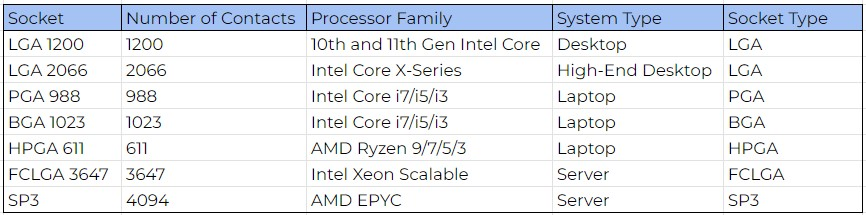
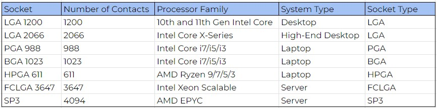
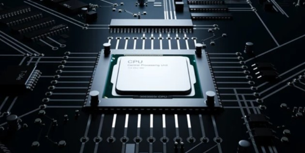

Introduction to Hardware ജയകുമാർ നായർ തയ്യാറാക്കിയത്
Getting a computer system to work
# To make a computer system workable, you will need to follow these basic steps:
= Assemble the Hardware: Choose the components you need for your computer, such as the motherboard, CPU, RAM, storage devices, power supply, and case. Assemble the hardware components according
to the instructions provided with each component.
= Install the Operating System: Once the hardware is assembled, you will need to install an operating system. This can be done by inserting a bootable installation media, such as a USB drive or
DVD, into the computer and following the installation instructions.
- Before installing an operating system on a computer system, there are several pre-steps you should take to ensure that the installation process goes smoothly:
. Choose the Drive: Choose the drive where you want to install the operating system. This can be an internal hard drive, solid-state drive (SSD), or external hard drive.
. Partition the Drive: If you want to create multiple partitions on the drive, you can use a partitioning tool like Disk Management in Windows or Disk Utility in macOS. Partitioning
refers to the process of dividing a storage device into separate sections, called partitions, which can be treated as independent storage spaces. Each partition can be formatted
with a file system and used to store data or install an operating system. Partitioning allows users to organize their data and files, and also enables the installation of multiple
operating systems on a single hard drive.
. Format the Drive: After partitioning the drive (if desired), format the partitions to prepare them for the installation of the operating system. You can format the drive using a
built-in formatting tool in the operating system, or you can use a third-party disk formatting tool. Formatting refers to the process of preparing a partition or storage device for
use by creating a file system on it. This creates the structure needed to store and access files on the partition. Formatting can also help to identify bad sectors on a hard drive
and mark them as unusable, preventing data loss or corruption.
. Create Installation Media: You will need to create installation media, such as a USB drive or DVD, containing the operating system you plan to install. This can be done using a
software tool provided by the operating system's manufacturer.
. Boot from Installation Media: Insert the installation media into the computer and boot from it. This can be done by accessing the computer's BIOS settings and changing the boot
order to prioritize the installation media.
. Follow Installation Instructions: Once the computer boots from the installation media, you will need to follow the installation instructions provided by the operating system's
installation wizard. This will include choosing the partition where you want to install the operating system, configuring settings, and installing drivers and software.
. Complete the Installation: After following the installation instructions, the operating system will be installed on the chosen partition. Once the installation is complete, you
can customize the settings, install applications, and configure the system to meet your needs.
= Install Drivers: Once the operating system is installed, you will need to install the necessary drivers for your hardware components. These drivers are usually provided by the hardware
manufacturer and can be downloaded from their website.
= Install Applications: Once the drivers are installed, you can install the applications you need, such as web browsers, productivity software, and games.
= Configure Settings: Finally, you will need to configure the settings for your computer, such as network settings, display settings, and power settings. You can also customize the settings
for individual applications and hardware components.
# Most commonly used partitioning schemas are:
= MBR (Master Boot Record) Partitioning: This is the traditional partitioning scheme used in older computers and creates 2 small data structures on a drive, the MBR and a partition table and
store them on the first sector(MBR sector) of the hard drive called boot sector. Each partition entry is 16 bytes, and the total is 64 bytes. Hence, in this approach, the partition table is
limited to a maximum of 4 entries ie, 4 primary partitions or 3 primary partitions and 1 extended partition.
= GPT (GUID Partition Table) Partitioning: This is a newer partitioning scheme that replaces the MBR and provides several advantages, including the ability to support more than four partitions
and the ability to store multiple copies of the partition table for improved data integrity.

 = Master Boot Record (MBR) partition table is a data structure that contains information about the partitions on a hard disk drive.
- Boot loader code: A small program that is responsible for loading the operating system into memory.
- Partition table: A table that describes the partition layout of the disk, including the partition type, start and end sector, and size. There can be up to four partitions described in the MBR
partition table, although traditionally, only one of them is an extended partition, which can be further divided into logical partitions.
- Disk signature: A unique identifier for the disk that is used by Windows to identify the disk and assign a drive letter.
- Magic number: A signature that indicates the presence of a valid MBR partition table. The magic number is 0xAA55 and it is placed at the end of the MBR partition table to help detect
disk corruption
= GUID Partition Table (GPT) is a partitioning scheme that is used to store partition information on a disk. Unlike the Master Boot Record (MBR) partitioning scheme, which has a 2 TB disk size
limit, GPT supports disk sizes up to 9.4 zettabytes and provides a more flexible and efficient method of storing partition information.
- Protective MBR: The first sector of the disk contains a protective MBR, which is a fake MBR used to reserve the first sector of the disk for the GPT header.
- GPT header: The GPT header contains information about the disk, including the disk size, the number of partitions, and a unique disk identifier. It also contains the location of the GPT
partition entries, the backup GPT header, and the location of the disk signature.
- Partition entries: The partition entries are stored in a table and describe the partitions on the disk, including the partition type, start and end sector, size, and a unique partition
identifier. There can be up to 128 partitions described in the GPT partition table.
- Backup GPT header: The backup GPT header is a duplicate of the primary GPT header and is stored at the end of the disk. This is used to recover the partition information in case the primary
GPT header is corrupted.
- Disk signature: The disk signature is a unique identifier for the disk that is used by Windows to identify the disk and assign a drive letter.
# type of partitions
= Primary Partition: This is a basic partition that can be used to install an operating system or store data. A hard drive can have up to 4 primary partitions or 3 primary and 1 extended partition.
= Extended Partition: This is a special type of partition that can be used to create additional logical partitions within it. An extended partition can be used to overcome the limitation of four
primary partitions per disk.
= Logical Partition: This is a partition that is created within an extended partition. Logical partitions are used to store data and can be treated as separate partitions by the operating system.
= Swap Partition: This is a special type of partition that is used by the operating system as virtual memory. Swap partitions are used to temporarily store data that is moved out of the RAM memory
to make room for other data.
# MBR partitioning uses primary and extended partitions since there is a limit of 4 partitions but in GPT partitioning, there is no limit to the number of primary partitions that can be created on a
disk, and there is no need to create an extended partition to overcome the limit of four primary partitions per disk. Instead, GPT uses a data structure called the GUID Partition Table (GPT) to
store information about the partitions on the disk. In GPT partitioning, each partition is assigned a unique GUID, which is used to identify the partition to the operating system. This allows the
operating system to access and use the partitions on the disk in a more flexible and reliable manner.
# Each partition can be formatted with its own file system, such as NTFS, FAT32, or EXT4.
= NTFS (New Technology File System) is a file system developed by Microsoft and used primarily in Windows operating systems. NTFS is a robust and flexible file system that supports features
such as file and folder permissions, compression, encryption, and large file sizes. It is well-suited for use in Windows environments and is the default file system for Windows 10.
= EXT4 (Fourth Extended File System) is a file system used in Linux operating systems. It is a robust and flexible file system that supports large file sizes, extended attributes, and advanced
features, such as journaling and snapshots. EXT4 is well-suited for use in Linux environments and is one of the most widely used file systems in Linux distributions.
= FAT32 (File Allocation Table 32) is an older file system that was widely used in earlier versions of Windows and is still commonly used for compatibility reasons. FAT32 has some limitations
compared to newer file systems, such as smaller file size limits and a lack of support for file and folder permissions. However, it is widely supported across different operating systems, making
it a good choice for use with removable media, such as USB drives or SD cards.
# An ISO file, also known as an ISO image, is a type of archive file that contains an exact copy of the contents of a CD, DVD, or Blu-Ray disc. ISO files are used to distribute software, games, and
other types of data that can be burned onto a disc.
# An ISO file and a normal copy of data (such as copying files from a disc to your computer) are two different things with some key differences:
= Exact Copy: An ISO file is an exact copy of the contents of a CD, DVD, or Blu-Ray disc, including the file system, boot information, and other data that is required to make the disc
bootable. A normal copy of data, on the other hand, simply copies the files and folders from a disc to your computer.
= File Format: An ISO file is a specific file format that is used to store an exact copy of the contents of a disc, whereas a normal copy of data is simply a copy of the files and folders.
= Portable: An ISO file is a single file that can be easily transported from one computer to another, without the need for physical media. A normal copy of data, on the other hand, is a
collection of files and folders that must be copied separately.
= Virtual Disc Mounting: An ISO file can be mounted as a virtual disc, which allows the contents of the ISO file to be accessed as if it were a physical disc, without having to burn the data onto a
physical disc. A normal copy of data cannot be mounted as a virtual disc.
= Master Boot Record (MBR) partition table is a data structure that contains information about the partitions on a hard disk drive.
- Boot loader code: A small program that is responsible for loading the operating system into memory.
- Partition table: A table that describes the partition layout of the disk, including the partition type, start and end sector, and size. There can be up to four partitions described in the MBR
partition table, although traditionally, only one of them is an extended partition, which can be further divided into logical partitions.
- Disk signature: A unique identifier for the disk that is used by Windows to identify the disk and assign a drive letter.
- Magic number: A signature that indicates the presence of a valid MBR partition table. The magic number is 0xAA55 and it is placed at the end of the MBR partition table to help detect
disk corruption
= GUID Partition Table (GPT) is a partitioning scheme that is used to store partition information on a disk. Unlike the Master Boot Record (MBR) partitioning scheme, which has a 2 TB disk size
limit, GPT supports disk sizes up to 9.4 zettabytes and provides a more flexible and efficient method of storing partition information.
- Protective MBR: The first sector of the disk contains a protective MBR, which is a fake MBR used to reserve the first sector of the disk for the GPT header.
- GPT header: The GPT header contains information about the disk, including the disk size, the number of partitions, and a unique disk identifier. It also contains the location of the GPT
partition entries, the backup GPT header, and the location of the disk signature.
- Partition entries: The partition entries are stored in a table and describe the partitions on the disk, including the partition type, start and end sector, size, and a unique partition
identifier. There can be up to 128 partitions described in the GPT partition table.
- Backup GPT header: The backup GPT header is a duplicate of the primary GPT header and is stored at the end of the disk. This is used to recover the partition information in case the primary
GPT header is corrupted.
- Disk signature: The disk signature is a unique identifier for the disk that is used by Windows to identify the disk and assign a drive letter.
# type of partitions
= Primary Partition: This is a basic partition that can be used to install an operating system or store data. A hard drive can have up to 4 primary partitions or 3 primary and 1 extended partition.
= Extended Partition: This is a special type of partition that can be used to create additional logical partitions within it. An extended partition can be used to overcome the limitation of four
primary partitions per disk.
= Logical Partition: This is a partition that is created within an extended partition. Logical partitions are used to store data and can be treated as separate partitions by the operating system.
= Swap Partition: This is a special type of partition that is used by the operating system as virtual memory. Swap partitions are used to temporarily store data that is moved out of the RAM memory
to make room for other data.
# MBR partitioning uses primary and extended partitions since there is a limit of 4 partitions but in GPT partitioning, there is no limit to the number of primary partitions that can be created on a
disk, and there is no need to create an extended partition to overcome the limit of four primary partitions per disk. Instead, GPT uses a data structure called the GUID Partition Table (GPT) to
store information about the partitions on the disk. In GPT partitioning, each partition is assigned a unique GUID, which is used to identify the partition to the operating system. This allows the
operating system to access and use the partitions on the disk in a more flexible and reliable manner.
# Each partition can be formatted with its own file system, such as NTFS, FAT32, or EXT4.
= NTFS (New Technology File System) is a file system developed by Microsoft and used primarily in Windows operating systems. NTFS is a robust and flexible file system that supports features
such as file and folder permissions, compression, encryption, and large file sizes. It is well-suited for use in Windows environments and is the default file system for Windows 10.
= EXT4 (Fourth Extended File System) is a file system used in Linux operating systems. It is a robust and flexible file system that supports large file sizes, extended attributes, and advanced
features, such as journaling and snapshots. EXT4 is well-suited for use in Linux environments and is one of the most widely used file systems in Linux distributions.
= FAT32 (File Allocation Table 32) is an older file system that was widely used in earlier versions of Windows and is still commonly used for compatibility reasons. FAT32 has some limitations
compared to newer file systems, such as smaller file size limits and a lack of support for file and folder permissions. However, it is widely supported across different operating systems, making
it a good choice for use with removable media, such as USB drives or SD cards.
# An ISO file, also known as an ISO image, is a type of archive file that contains an exact copy of the contents of a CD, DVD, or Blu-Ray disc. ISO files are used to distribute software, games, and
other types of data that can be burned onto a disc.
# An ISO file and a normal copy of data (such as copying files from a disc to your computer) are two different things with some key differences:
= Exact Copy: An ISO file is an exact copy of the contents of a CD, DVD, or Blu-Ray disc, including the file system, boot information, and other data that is required to make the disc
bootable. A normal copy of data, on the other hand, simply copies the files and folders from a disc to your computer.
= File Format: An ISO file is a specific file format that is used to store an exact copy of the contents of a disc, whereas a normal copy of data is simply a copy of the files and folders.
= Portable: An ISO file is a single file that can be easily transported from one computer to another, without the need for physical media. A normal copy of data, on the other hand, is a
collection of files and folders that must be copied separately.
= Virtual Disc Mounting: An ISO file can be mounted as a virtual disc, which allows the contents of the ISO file to be accessed as if it were a physical disc, without having to burn the data onto a
physical disc. A normal copy of data cannot be mounted as a virtual disc.
Motherboard is a type of PCB
# A motherboard, also known as a system board or mainboard, is a type of PCB that serves as the main circuit board in a computer system. The motherboard provides a central hub that
connects all the components of a computer, including the CPU, memory, storage devices, and expansion cards, such as graphics cards or sound cards.
# PCB stands for "Printed Circuit Board". It is a flat board made of non-conductive material, such as fiberglass or plastic, on which electronic components and connections are mounted. PCBs
are used to mechanically support and electrically connect electronic components using conductive pathways or tracks etched from copper sheets laminated onto the non-conductive substrate. They
provide a reliable and compact way of interconnecting electronic components, making it easier to manufacture and maintain electronic devices. PCBs are also used in a variety of other
applications, including automotive, medical devices, aerospace, and military electronics.
# The process of manufacturing a motherboard PCB typically involves several steps:
= Design: The first step in making a motherboard PCB is designing it using computer-aided design (CAD) software. The design includes the placement of electronic components, the routing of
electrical connections, and the selection of the appropriate materials.
= Material selection: The PCB is made up of layers of non-conductive material, typically fiberglass or plastic, and conductive pathways made of copper. The appropriate materials are selected
based on the specific requirements of the design.
= Layer alignment and bonding: The layers of non-conductive material and conductive pathways are aligned and bonded together using heat and pressure. This creates a multi-layered PCB.
= Drilling: Small holes are drilled into the PCB where electronic components will be placed and where connections will be made.
= Plating: The holes and conductive pathways are plated with copper to create electrical connections.
= Masking: A protective layer is added to the PCB to prevent the copper from being etched in areas where it is not needed.
= Etching: The PCB is exposed to a chemical solution that dissolves the unprotected copper, leaving behind only the desired conductive pathways.
= Soldermask and silkscreen: A layer of soldermask is applied to the PCB to protect it from oxidation and to prevent short circuits. A silkscreen layer is also added to indicate component
placement, text and logos.
= Assembly: Electronic components are placed and soldered onto the PCB using automated machines or human labor.
= Testing: The completed motherboard PCB is then tested to ensure that it functions properly before it is shipped out for use in a computer system.
# There are several major motherboard PCB makers, including:
= ASUS: ASUS is a Taiwanese company that is one of the largest motherboard manufacturers in the world. They also produce a range of other computer components, such as graphics cards and peripherals
= Gigabyte: Gigabyte is a Taiwanese company that produces motherboards and other computer hardware components. They are known for their high-end gaming motherboards.
= MSI: MSI is a Taiwanese company that produces a range of computer hardware, including motherboards, graphics cards, and laptops. They are known for their high-quality gaming motherboards.
= ASRock: ASRock is a Taiwanese company that produces motherboards and other computer hardware components. They are known for their affordable and reliable motherboards.
= Biostar: Biostar is a Taiwanese company that produces motherboards and other computer hardware components. They are known for their entry-level and mid-range motherboards.
= EVGA: it is an American company that produces a range of computer hardware, including motherboards and graphics cards. They are known for their high-quality and high-performance gaming mobos.
Basic electronic components commonly found on a motherboard
# Capacitor:
= General purpose: Stores electrical charge and releases it when needed
= Purpose on the motherboard: Used in circuits to smooth out voltage fluctuations and filter out unwanted noise
= Shape: Small, cylindrical component with two metal leads and a plastic or ceramic body
= Denoting letters: C, PC, TC, BC, EC, EP, MC, TXC or CAP
# Coil:
= General purpose: Stores and releases magnetic energy
= Purpose on the motherboard: Used in various circuits, including power regulation and signal filtering circuits
= Shape: Small, cylindrical component with two wire leads wrapped around a magnetic core
= Denoting letters: L, PL, FB, COIL
# Connectors:
= Purpose on motherboard: Used to connect various external devices to the motherboard, such as USB devices, display devices, or storage devices.
= Shape: Varies depending on the type of connector, but generally rectangular or circular with metal pins or leads.
= Denoting letters: 'CON'. Note that the denoting letters may vary depending on the specific type of connector, such as 'USB' for USB connectors or 'VGA' for VGA connectors.
# Crystal:
= General purpose: Generates a precise and stable frequency signal
= Purpose on the motherboard: Used as a clock generator to synchronize different components of the system, especially the CPU
= Shape: Small, rectangular or cylindrical component with two metal leads
= Denoting letters: X, Y or XTAL
# Diode:
= General purpose: Allows current to flow in one direction only
= Purpose on the motherboard: Used in circuits to rectify AC to DC voltage, protect against reverse voltage, and limit voltage spikes
= Shape: Small, cylindrical component with a colored stripe or band indicating the cathode side
= Denoting letters: D, PD, PZD or DI
# Fuse:
= General Purpose: Used to protect circuits from overcurrent by breaking the circuit when the current exceeds a safe level.
= Purpose on the Motherboard: Used to protect various circuits on the motherboard from overcurrent, including the power supply, USB ports, and audio components.
= How to Identify: Small, cylindrical-shaped components with metal ends and a glass or ceramic body.
= Denoting Letters/Symbols: F, FS, PF
# Jumpers:
= Purpose on motherboard: Used to change the configuration or settings of the motherboard, such as selecting the boot device or resetting the BIOS.
= Shape: Typically small rectangular blocks with metal pins or leads.
= Denoting letters: 'JP'.
# IC/chip (Integrated Circuit):
= General Purpose: Used to perform a wide range of electronic functions, from amplification and switching to signal processing and microprocessing.
= Purpose on the Motherboard: Used in various circuits on the motherboard, including the central processing unit (CPU), chipset, audio and network controllers, and memory modules.
= How to Identify: Small, rectangular-shaped packages with multiple pins on either side.
= Denoting Letters/Symbols: U, PU
# Inductors:
= Purpose on motherboard: Used to store energy in a magnetic field and filter out unwanted signals.
= Shape: Typically cylindrical or rectangular.
= Denoting letters: 'L'.
# MOSFET (Metal-Oxide-Semiconductor Field-Effect Transistor):
= General purpose: Controls the flow of current in a circuit
= Purpose on the motherboard: Used in power regulation circuits to efficiently regulate the voltage supplied to different components
= Shape: Small, rectangular component with three or more metal legs
= Denoting letters: Q, PQ or TR
# Oscillators:
= Purpose on motherboard: Used to generate clock signals to synchronize the operation of various components on the motherboard.
= Shape: Typically rectangular or cylindrical.
= Denoting letters: 'Y' or 'X'.
# Resistor:
= General purpose: Limits the flow of current in a circuit
= Purpose on the motherboard: Used in various circuits to control the flow of electricity
= Shape: Small, cylindrical component with color-coded bands
= Denoting letters: R, RN, PR, RP, MR or RES
# Switch:
= General purpose: Controls the flow of current in a circuit
= Purpose on the motherboard: Used as a simple on/off switch in various circuits
= Shape: Small, rectangular or cylindrical component with two or more metal legs
= Denoting letters: SW
# Transformer:
= General purpose: Transfers electrical energy from one circuit to another
= Purpose on the motherboard: Used in power regulation circuits to transform the voltage supplied to different components
= Shape: Small, rectangular or cylindrical component with multiple wire leads wrapped around a magnetic core
= Denoting letters: T or TFR
# Transistor:
= General purpose: Amplifies or switches electronic signals
= Purpose on the motherboard: Used in a variety of circuits, including the CPU and other processing units, power regulation circuits, and interface circuits for components such as USB and Ethernet
= Shape: Small, three-legged component with a flat top and a curved bottom
= Denoting letters: Q, PQ or TR
# Voltage regulators:
= Purpose on motherboard: Used to regulate the voltage of the power supply to a stable level for various components on the motherboard.
= Shape: Typically rectangular with three pins or leads.
= Denoting letters: 'VR'
CPU socket
# CPU sockets, which are the physical connectors on a motherboard that allow a central processing unit (CPU) to be installed and connected to the rest of the computer's components. The "CPU socket"
in a motherboard is an important detail because it determines which types of processors can be used with the motherboard. Different processors have different socket types and power requirements, and
not all processors are compatible with all motherboards. It's important to carefully review the motherboard specifications to ensure compatibility with the desired CPU model and to achieve the
desired level of performance. The factors that determine a motherboard's compatibility with a particular type of CPU include:
 = Socket type: The CPU socket is the physical interface that connects the CPU to the motherboard. Different types of CPUs require different socket types, so it's important to choose a
motherboard with a compatible socket.
= Chipset: The chipset on a motherboard plays a crucial role in determining the type and performance of CPUs that can be used with it. Different chipsets support different CPU models, and
some chipsets may have restrictions on the number of CPU cores, maximum memory capacity, and other features.
= BIOS support: The motherboard BIOS (Basic Input/Output System) is responsible for initializing the hardware components during system boot. The BIOS also provides a bridge between the
operating system and the hardware. The BIOS must support the CPU in order for it to function properly.
= Power requirements: Different types of CPUs require different power levels, so it's important to choose a motherboard with an adequate power supply to support the CPU.
= Form factor: The physical form factor of a motherboard determines its size and shape, which can affect the number and placement of CPU sockets and other components.
= Cooling requirements: Some CPUs require additional cooling measures, such as liquid cooling, which may require additional components on the motherboard, such as special connectors or
mounting points.
= Overclocking support: Overclocking is the process of increasing the clock speed of a CPU beyond its default settings to improve performance. Not all motherboards support overclocking, and
those that do may have limitations on the maximum clock speed and voltage that can be used.
# There are several different types of CPU sockets available for modern motherboards. The specific socket type required will depend on the CPU being used. Some of the common CPU socket types include:
= LGA (Land Grid Array): This type of socket is characterized by the pins being located on the motherboard, rather than on the CPU itself.
= PGA (Pin Grid Array): PGA sockets are characterized by the pins being located on the CPU rather than on the motherboard.
= BGA (Ball Grid Array): BGA sockets are used primarily in embedded systems and mobile devices, and are characterized by a grid of solder balls on the underside of the CPU, which
connect to a matching grid of contacts on the motherboard.
= HPGA (High-Performance Grid Array): HPGA sockets are used by some high-performance CPUs, such as Intel's Xeon processors. They are similar to LGA sockets, but have additional
pins and a larger size to support more advanced features.
= FCLGA (Flip-Chip LGA): This type of socket is used by some high-performance Intel processors, and is characterized by the CPU being mounted upside-down on the socket, with the
pins facing upward.
= SP3 (Server Processor 3): SP3 sockets are used by AMD's Threadripper and Epyc server processors, and are characterized by a large number of pins and high performance capabilities.

# There are several major companies that build CPU sockets, including:
= Intel - Intel is one of the largest producers of CPU sockets and is responsible for creating and manufacturing many of the sockets used in modern computers.
= AMD - AMD is another major producer of CPU sockets and is known for creating sockets that are compatible with their line of processors.
= ASRock - ASRock is a well-known manufacturer of motherboards and produces a variety of different CPU sockets to accommodate different processor types.
= ASUS - ASUS is another popular manufacturer of motherboards and produces a range of different CPU sockets for various processors.
= MSI - MSI is a leading producer of motherboards and also creates a range of different CPU sockets to accommodate different processor types.
chipset
# The chipset is an integral part of the motherboard, which is responsible for managing the flow of data between the CPU (Central Processing Unit) and other components on the motherboard, such
as the memory, storage, and various I/O devices. The chipset contains several essential components, including the Northbridge and Southbridge. The Northbridge handles high-speed communication
between the CPU and memory, while the Southbridge manages lower-speed communication between the CPU and other devices, such as USB ports, audio devices, and hard drives. In modern computer
systems, the traditional Northbridge and Southbridge chips have been integrated into a single chip.
= Intel refers to this as a "Platform Controller Hub" (PCH)
= AMD refers to this as a "chipset"
= Socket type: The CPU socket is the physical interface that connects the CPU to the motherboard. Different types of CPUs require different socket types, so it's important to choose a
motherboard with a compatible socket.
= Chipset: The chipset on a motherboard plays a crucial role in determining the type and performance of CPUs that can be used with it. Different chipsets support different CPU models, and
some chipsets may have restrictions on the number of CPU cores, maximum memory capacity, and other features.
= BIOS support: The motherboard BIOS (Basic Input/Output System) is responsible for initializing the hardware components during system boot. The BIOS also provides a bridge between the
operating system and the hardware. The BIOS must support the CPU in order for it to function properly.
= Power requirements: Different types of CPUs require different power levels, so it's important to choose a motherboard with an adequate power supply to support the CPU.
= Form factor: The physical form factor of a motherboard determines its size and shape, which can affect the number and placement of CPU sockets and other components.
= Cooling requirements: Some CPUs require additional cooling measures, such as liquid cooling, which may require additional components on the motherboard, such as special connectors or
mounting points.
= Overclocking support: Overclocking is the process of increasing the clock speed of a CPU beyond its default settings to improve performance. Not all motherboards support overclocking, and
those that do may have limitations on the maximum clock speed and voltage that can be used.
# There are several different types of CPU sockets available for modern motherboards. The specific socket type required will depend on the CPU being used. Some of the common CPU socket types include:
= LGA (Land Grid Array): This type of socket is characterized by the pins being located on the motherboard, rather than on the CPU itself.
= PGA (Pin Grid Array): PGA sockets are characterized by the pins being located on the CPU rather than on the motherboard.
= BGA (Ball Grid Array): BGA sockets are used primarily in embedded systems and mobile devices, and are characterized by a grid of solder balls on the underside of the CPU, which
connect to a matching grid of contacts on the motherboard.
= HPGA (High-Performance Grid Array): HPGA sockets are used by some high-performance CPUs, such as Intel's Xeon processors. They are similar to LGA sockets, but have additional
pins and a larger size to support more advanced features.
= FCLGA (Flip-Chip LGA): This type of socket is used by some high-performance Intel processors, and is characterized by the CPU being mounted upside-down on the socket, with the
pins facing upward.
= SP3 (Server Processor 3): SP3 sockets are used by AMD's Threadripper and Epyc server processors, and are characterized by a large number of pins and high performance capabilities.

# There are several major companies that build CPU sockets, including:
= Intel - Intel is one of the largest producers of CPU sockets and is responsible for creating and manufacturing many of the sockets used in modern computers.
= AMD - AMD is another major producer of CPU sockets and is known for creating sockets that are compatible with their line of processors.
= ASRock - ASRock is a well-known manufacturer of motherboards and produces a variety of different CPU sockets to accommodate different processor types.
= ASUS - ASUS is another popular manufacturer of motherboards and produces a range of different CPU sockets for various processors.
= MSI - MSI is a leading producer of motherboards and also creates a range of different CPU sockets to accommodate different processor types.
chipset
# The chipset is an integral part of the motherboard, which is responsible for managing the flow of data between the CPU (Central Processing Unit) and other components on the motherboard, such
as the memory, storage, and various I/O devices. The chipset contains several essential components, including the Northbridge and Southbridge. The Northbridge handles high-speed communication
between the CPU and memory, while the Southbridge manages lower-speed communication between the CPU and other devices, such as USB ports, audio devices, and hard drives. In modern computer
systems, the traditional Northbridge and Southbridge chips have been integrated into a single chip.
= Intel refers to this as a "Platform Controller Hub" (PCH)
= AMD refers to this as a "chipset"
 # A chipset typically contains several controllers that manage various hardware components and interfaces on a motherboard. Some common controllers found in modern chipsets include:
# The compatibility between the motherboard and the chipset is crucial, and the motherboard manufacturers typically choose the appropriate chipset for their products because,
= The motherboard is designed to work with a specific chipset and the chipset is designed to support specific CPUs, memory types, and other hardware components.
# The Gigabyte MZ73-LM1 and MSI-D4020 motherboard is based on the AMD EPYC embedded processor family, which uses a "System on Chip" (SoC) architecture. This means that the processor itself
integrates many of the components that would traditionally be part of a separate chipset, such as the memory controller, PCIe lanes, and I/O interfaces. This can offer several benefits, such as
reduced power consumption, lower cost, and a more compact form factor.
# Some of the largest and most well-known chipset manufacturers include:
= Intel Corporation - Intel is a leading manufacturer of chipsets for personal computers, servers, and other computing devices. They produce a wide range of chipsets, including those for
CPUs, GPUs, and memory.
= Qualcomm Incorporated - Qualcomm is a major player in the mobile chipset market. They specialize in producing chipsets for smartphones, tablets, and other mobile devices.
= Advanced Micro Devices (AMD) - AMD is a leading manufacturer of chipsets for CPUs and GPUs. They produce chipsets for both personal computers and servers.
= Nvidia Corporation - Nvidia is a major manufacturer of chipsets for GPUs, particularly for gaming and artificial intelligence applications.
= Samsung Electronics Co., Ltd. - Samsung is a leading manufacturer of chipsets for mobile devices, as well as for other electronic devices such as TVs and home appliances.
= MediaTek Inc. - MediaTek is a Taiwanese semiconductor company that produces chipsets for mobile devices, including smartphones, tablets, and smartwatches.
# A chipset typically contains several controllers that manage various hardware components and interfaces on a motherboard. Some common controllers found in modern chipsets include:
# The compatibility between the motherboard and the chipset is crucial, and the motherboard manufacturers typically choose the appropriate chipset for their products because,
= The motherboard is designed to work with a specific chipset and the chipset is designed to support specific CPUs, memory types, and other hardware components.
# The Gigabyte MZ73-LM1 and MSI-D4020 motherboard is based on the AMD EPYC embedded processor family, which uses a "System on Chip" (SoC) architecture. This means that the processor itself
integrates many of the components that would traditionally be part of a separate chipset, such as the memory controller, PCIe lanes, and I/O interfaces. This can offer several benefits, such as
reduced power consumption, lower cost, and a more compact form factor.
# Some of the largest and most well-known chipset manufacturers include:
= Intel Corporation - Intel is a leading manufacturer of chipsets for personal computers, servers, and other computing devices. They produce a wide range of chipsets, including those for
CPUs, GPUs, and memory.
= Qualcomm Incorporated - Qualcomm is a major player in the mobile chipset market. They specialize in producing chipsets for smartphones, tablets, and other mobile devices.
= Advanced Micro Devices (AMD) - AMD is a leading manufacturer of chipsets for CPUs and GPUs. They produce chipsets for both personal computers and servers.
= Nvidia Corporation - Nvidia is a major manufacturer of chipsets for GPUs, particularly for gaming and artificial intelligence applications.
= Samsung Electronics Co., Ltd. - Samsung is a leading manufacturer of chipsets for mobile devices, as well as for other electronic devices such as TVs and home appliances.
= MediaTek Inc. - MediaTek is a Taiwanese semiconductor company that produces chipsets for mobile devices, including smartphones, tablets, and smartwatches.
DIMM/RAM slots
# Motherboards are designed to support different types of memory modules, which can vary in terms of their physical characteristics, such as their pin count and voltage requirements, as well as
their technical specifications, such as their clock speed and latency. The number of memory slots and their capacity are also determined by the motherboard's design and layout. The frequency
and channels of memory are also determined by the motherboard's specifications. The memory controller on the motherboard sets the frequency and timing parameters for the memory, which can
affect the overall performance of the system. The number of channels available on the motherboard can also affect the performance of the memory, with dual-channel and quad-channel configurations
offering better performance than single-channel configurations.
# RAM, or Random Access Memory, is a type of computer memory used for temporarily storing data. When a computer is powered on, the operating system and applications are loaded into RAM, allowing the
processor to quickly access and manipulate the data. RAM is called "random access" because the processor can access any piece of data stored in RAM without having to go through a sequence of memory
locations. This is in contrast to other types of memory, such as a hard drive, where data is stored in a specific location and must be retrieved in a linear sequence. The amount of RAM in a computer
determines how many applications can be run simultaneously and how much data can be quickly processed. When the RAM is full, the computer may store excess data in a temporary file on the hard drive,
which is slower to access. This is known as "swapping" or "paging". In summary, RAM plays an important role in the performance of a computer by allowing the processor to quickly access and
manipulate data.
# A flip-flop circuit stores a bit of data by using two stable states, one representing a logical "1" and the other a logical "0". The state of the flip-flop is changed by external signals, such as
clocks or inputs, which cause the circuit to switch from one state to the other. The circuit maintains its state until it is changed by another input, allowing it to store a single bit of data. There
are several types of flip-flops, including the SR flip-flop, JK flip-flop, and D flip-flop, each with its own set of inputs and outputs.
= SR, JK, and D are three types of flip-flops, which are digital circuits that store a single bit of data.
- SR Flip-Flop: The SR (Set-Reset) flip-flop is a basic type of flip-flop that has two inputs, S (set) and R (reset), and two outputs, Q and Q'. The S and R inputs determine the state of the
flip-flop, with S=1 and R=0 setting Q to 1, S=0 and R=1 resetting Q to 0, and S=R=1 resulting in an undefined state.
- JK Flip-Flop: The JK (Jack-Kilby) flip-flop is an improvement over the SR flip-flop that has two inputs, J and K, and two outputs, Q and Q'. The inputs determine the state of the flip-flop,
with J=K=1 resulting in a toggle(i.e. from 1 to 0, or from 0 to 1), J=1 and K=0 setting Q to 1, J=0 and K=1 resetting Q to 0, and J=K=0 resulting in no change to the state of the flip-flop. SR
and JK flip-flops are used to build sequential logic circuits that store and process data. They are often used to build state machines, counters, and shift registers, which are essential
components in many digital systems.
- D Flip-Flop: The D (Data) flip-flop is a type of flip-flop that has a single input, D, and two outputs, Q and Q'. The D input determines the state of the flip-flop, with D=1 setting Q to 1
and D=0 resetting Q to 0. The output of the flip-flop is stored until the next clock edge, when the input is read and the state is updated. When J=K=1 in a JK flip-flop, the circuit is said
to "toggle." This means that the output of the flip-flop will switch from its current state to its opposite state (i.e. from 1 to 0, or from 0 to 1). The # JK flip-flop is designed in such
a way that whenever J=K=1, the output will toggle each time there is a clock pulse. This behavior is useful in certain applications where a change in state is required each time a clock pulse
is received. Toggling is a type of sequential logic operation where the output of a circuit changes state with each clock cycle, making it a powerful tool for designing digital systems.
D flip-flops are widely used in memory circuits, including random access memory (RAM) and read-only memory (ROM). They allow for data to be stored and updated with each clock cycle, making
them ideal for use in these applications.
# There are several different types of memory technologies used in electronic devices, each with its own characteristics and advantages.
= Dynamic Random-Access Memory (DRAM): DRAM stores binary information using a capacitor and a transistor that acts as a switch. The capacitor stores an electrical charge that represents the
binary value of the data bit, and the transistor allows the data to be read or written by controlling the flow of electrical current. Each bit of DRAM memory is typically implemented using
a single flip-flop. This is the most common type of memory used in computer systems, including desktops, laptops, and servers.
= Static Random-Access Memory (SRAM): SRAM stores binary information using multiple flip-flops that are connected together to form a memory cell. SRAM is faster and more expensive than DRAM,
and is often used as cache memory in computer systems and the data is retained as long as power is supplied to the memory. SRAM is commonly used in a variety of digital electronics applications,
including microprocessors, microcontrollers, graphics processing units (GPUs), and other types of digital signal processing (DSP) circuits
= Read-Only Memory (ROM): ROM stores permanent binary data that cannot be modified or erased. ROM can be implemented using various technologies, including mask-programmed ROM, programmable
ROM (PROM), erasable programmable ROM (EPROM), and electrically erasable programmable ROM (EEPROM). This is a type of non-volatile memory that is used to store firmware and other types of
software that don't need to be modified.
= NAND Flash Memory: NAND flash memory stores binary data using a series of interconnected NAND gates is called a NAND string, which are used to build memory cells that can store multiple bits
of data. Each memory cell in NAND flash memory typically uses a series of flip-flops to store the binary values. Data is written to NAND flash memory by applying a voltage to the control
gate of each transistor in the NAND string, which allows electrons to tunnel onto the floating gate and change its electrical charge. Reading data from NAND flash memory involves sensing the
voltage level of the bit line connected to the source of the last transistor in the NAND string. It is commonly used in SSDs, USB flash drives, Memory cards and Embedded systems. There are
several types of NAND flash memory available on the market. Here are some of the most common types:
- SLC (Single-Level Cell) NAND flash memory: This type of memory stores one bit of data per memory cell, making it the fastest and most reliable type of NAND flash memory. SLC is commonly
used in high-end enterprise storage systems that require high performance and endurance.
- MLC (Multi-Level Cell) NAND flash memory: This type of memory stores two or more bits of data per memory cell by varying the amount of charge on the floating gate. MLC is less expensive
and has a higher density than SLC, but it is slower and less reliable. MLC is commonly used in consumer-grade SSDs, memory cards, and USB flash drives.
- TLC (Triple-Level Cell) NAND flash memory: This type of memory stores three or more bits of data per memory cell. TLC is even less expensive and has an even higher density than MLC, but
it is slower and less reliable. TLC is commonly used in low-end consumer-grade SSDs, memory cards, and USB flash drives.
- QLC (Quad-Level Cell) NAND flash memory: This type of memory stores four or more bits of data per memory cell, making it the highest density and lowest cost NAND flash memory. QLC is
even slower and less reliable than TLC, and it has a shorter lifespan due to the higher number of write cycles required. QLC is commonly used in entry-level consumer-grade SSDs, memory
cards, and USB flash drives.
- 3D NAND flash memory: This type of memory stacks multiple layers of memory cells vertically, allowing for higher capacity and density in the same form factor. 3D NAND flash memory can be
SLC, MLC, TLC, or QLC, depending on the number of bits stored per memory cell.
= NOR Flash Memory: NOR flash memory stores binary data using a series of interconnected NOR gates, which are used to build memory cells that can store multiple bits of data. Each memory cell
in NOR flash memory typically uses a parallel combination of flip-flops to store the binary values. NOR flash memory is commonly used in devices that require fast random access to data, such as
microcontrollers, embedded systems, and boot devices for computers.
# There are several different types of DRAM available, including:
= SDRAM (Synchronous DRAM): SDRAM is a type of DRAM that is synchronized with the system clock of the computer. It operates at a higher speed than previous DRAM technologies, and is
commonly used in desktop computers and servers.
= DDR SDRAM (Double Data Rate Synchronous DRAM): DDR memory works by using both the rising and falling edge of the system clock signal to transfer data between the memory and the processor. This
means that DDR memory is able to transfer data twice as fast as the clock speed of the system. For example, if the system clock is running at 800 MHz, DDR memory can transfer data at a rate of
1600 MT/s (Mega Transfers per second). DDR memory also uses a prefetch buffer, which allows the memory to access data in advance of when it is actually needed. This prefetch buffer helps to
improve performance by reducing the amount of time the memory needs to wait for data to be transferred.
= DDR2 SDRAM (Double Data Rate 2 Synchronous DRAM): DDR2 SDRAM is an improved version of DDR SDRAM that offers higher speeds and lower power consumption. It is commonly used in modern desktop
computers and servers.
= DDR3 SDRAM (Double Data Rate 3 Synchronous DRAM): DDR3 SDRAM is an improved version of DDR2 SDRAM that offers even higher speeds and lower power consumption. It is commonly used in modern desktop
computers and servers.
= DDR4 SDRAM (Double Data Rate 4 Synchronous DRAM): DDR4 SDRAM is the latest version of DDR SDRAM and offers even higher speeds and lower power consumption than DDR3 SDRAM. It is commonly used in
modern desktop computers, servers, and high-performance computing systems.
= LPDDR (Low-Power Double Data Rate SDRAM): LPDDR is a type of DRAM that is designed for use in mobile devices such as smartphones and tablets. It offers lower power consumption and higher
performance than traditional SDRAM technologies.
= GDDR (Graphics Double Data Rate SDRAM): GDDR is a type of DRAM that is designed specifically for use in graphics cards and other high-performance computing applications. It offers higher
bandwidth and lower latency than traditional SDRAM technologies.
# There are several different form factors for memory modules, including:
= DIMM (Dual In-Line Memory Module): DIMMs are rectangular in shape, with pins on both sides, and are installed vertically into slots on the motherboard. DIMMs are available in different speeds,
sizes, and capacities, and are commonly used in desktop computers and servers.
= SODIMM (Small Outline Dual In-Line Memory Module): SODIMMs are smaller than DIMMs and are typically used in laptops, small form factor (SFF) computers, and other devices where space is
limited. They have pins on both sides, just like DIMMs, but are more compact in size.
= MicroDIMM (Micro Dual In-Line Memory Module): MicroDIMMs are smaller than SODIMMs and are designed for use in ultra-portable laptops and other devices where space is extremely limited.
They have a similar pin configuration as SODIMMs, but are even smaller in size.
= RIMM (Rambus In-line Memory Module): RIMMs were a proprietary form factor developed by Rambus, Inc. They were used in high-performance systems in the early 2000s but have since been largely
replaced by DDR SDRAM technologies.
= SIMM (Single In-Line Memory Module): SIMMs were the first type of memory module to be widely used in personal computers. They have a smaller pin count than DIMMs, and are installed horizontally
into slots on the motherboard. SIMMs are no longer used in modern computer systems.
= SIP (Single In-line Package): SIPs are similar in appearance to SIMMs, but have a smaller pin count and are typically used in embedded systems and other specialized applications.
= FB-DIMM (Fully Buffered Dual In-Line Memory Module): FB-DIMMs are a type of DIMM that have an additional memory buffer to improve signal integrity and reduce electrical load. They
were used in some high-performance server systems in the mid-2000s, but have since been largely replaced by newer memory technologies.
# Memory frequency, also known as memory clock speed, refers to the speed at which the memory module can read and write data. It is usually measured in MHz (megahertz) and indicates the number of
clock cycles that the memory can perform per second. For example, a memory module with a frequency of 3200 MHz can perform 3.2 billion clock cycles per second.
= BCLK stands for "Base Clock," which is a clock signal controlled by the chipset that determines the speed of various components in the computer system. The Base Clock is used as a reference
frequency to set the operating frequencies of the CPU, memory, and other system components. The BCLK frequency is typically measured in MHz (megahertz) and is usually set to a fixed value by
the motherboard's BIOS (Basic Input/Output System) or UEFI (Unified Extensible Firmware Interface). The BCLK frequency can be adjusted in some systems to overclock or underclock the system, which
can affect the performance of the CPU and other components.
= In addition to the BCLK, many modern CPUs also have a multiplier that can be used to adjust the operating frequency of the CPU. The multiplier is typically set by the CPU manufacturer and can be
adjusted in some systems to overclock or underclock the CPU. For example, if the BCLK is set to 100 MHz and the multiplier(CPU Ratio) is set to 40x, the resulting CPU clock speed would be
4 GHz. Increasing the BCLK or the CPU Ratio will result in a higher CPU clock speed, while decreasing these values will result in a lower CPU clock speed.
= The CPU multiplier is sometimes also referred to as the "CPU ratio" because it represents the ratio between the clock speed of the CPU and the BCLK frequency. The CPU multiplier is used to
determine the operating frequency of the CPU by multiplying the BCLK frequency by the CPU multiplier. For example, if the BCLK frequency is set to 100 MHz and the CPU multiplier is set to 36x,
the resulting CPU operating frequency would be 3.6 GHz (100 MHz x 36 = 3.6 GHz). In this example, the CPU ratio is 36:1, which represents the ratio between the CPU operating frequency and
the BCLK frequency.
= The maximum overclocking frequency in a motherboard specification refers to the highest clock speed that the motherboard can support when the CPU is overclocked. Overclocking involves increasing
the clock speed of a CPU beyond the manufacturer's recommended settings in order to increase its performance. When a CPU is overclocked, it can generate more heat, which can cause instability and
damage to the CPU and other components if not managed properly. Therefore, when choosing a motherboard for overclocking, it is important to ensure that it has good power delivery and cooling
solutions, as well as features such as voltage regulation and thermal monitoring.
# A memory channel is a communication pathway between the memory modules and the memory controller on a computer motherboard. The memory channels play a critical role in the performance of the memory
subsystem, as they determine the amount of data that can be transferred between the memory and the CPU at any given time.
= Modern CPUs typically have a built-in memory controller that manages the communication with the memory modules. The memory controller can support a certain number of memory channels, depending
on the specific CPU model and chipset. There are mainly two types of memory channels used in modern computer systems, namely:
- Single-Channel Memory
- Dual-Channel Memory
- In addition, some high-end systems may support quad-channel memory, which has four memory channels
= In a single-channel memory configuration, there is one memory channel, with its own set of electrical lines that connect the memory controller on the motherboard to the memory modules. For
example, DDR4 memory typically has a 64-bit data bus per memory channel. This means that in a single channel memory configuration, there are 64 electrical lines that carry data between the
memory controller and the memory module along with other lines for controlling the memory module, such as clock signals, address lines, and control lines. These lines work together to enable
the memory controller to access the memory module and transfer data between the memory and the CPU.
= In a dual-channel memory configuration, there are two memory channels, each with its own set of electrical lines that connect the memory controller on the motherboard to the memory modules. The
number of lines in a dual-channel memory interface depends on the type of memory module and the memory technology being used. For example, with DDR4 memory there are typically 64 data lines per
memory channel, so a dual-channel memory configuration with DDR4 memory would have 128 data lines in total. In addition to the data lines, each memory channel also includes other lines for
controlling the memory modules, such as clock signals, address lines, and control lines.
= The data transfer between the CPU and memory occurs over a dedicated bus called the memory bus. The memory bus consists of a set of electrical lines that connect the CPU to the memory controller
on the motherboard, and then to the memory modules themselves. When the CPU needs to read or write data from/to the memory,
- CPU sends a memory access request to the memory controller
- Memory controller then translates the CPU's request into a sequence of memory commands that are sent to the memory modules over the memory bus. The memory controller also plays a critical
role in managing the flow of data between the CPU and memory. It ensures that data is transferred reliably and efficiently, and it handles tasks such as caching, buffering, and queuing
of memory requests.
= The hierarchy of memory organization typically goes as follows:
- Module: This refers to the physical memory module, such as a DIMM (Dual Inline Memory Module) or an SO-DIMM (Small Outline DIMM). A memory module typically contains multiple memory
chips, which are organized into banks and ranks.
- Bank: A bank is a logical group of memory cells that are addressed together. A memory module can contain multiple banks, each memory bank is identified by a unique bank address, which
is used by the memory controller to access the data stored in that bank.
- Rank: A rank is a logical group of memory banks that can be accessed together by the memory controller. In a memory module with multiple ranks, each rank has its own set of bank
addresses, and the memory controller can access the ranks independently.
 = The Bank or Rank in a memory module is not indicated physically on the stick, instead check the technical specifications provided by the manufacturer or consult with a technical expert.
= ECC(Error-Correcting Code) memory is a type of memory that has built-in error correction capabilities. This type of memory is typically used in mission-critical applications where data integrity
is paramount, such as in enterprise-grade servers.
= Various memory technologies on DDR memory modules to improve system stability and reliability
- LRDIMM (Load-Reduced DIMM): LRDIMMs are designed for high-performance computing and server environments. They use a buffer to reduce the load on the data lines between the memory controller
and the memory chips themselves, which can result in improved memory performance and reliability. LRDIMMs can support up to 256GB per module, which is twice the capacity of RDIMMs.
- RDIMM (Registered DIMM): RDIMMs are also designed for high-performance computing and server environments. They use a register or buffer to reduce the electrical load on the memory controller,
which can improve memory reliability and performance. RDIMMs are generally more expensive than UDIMMs, but they offer improved error-checking capabilities and are more reliable in
server environments. The DDR4 memory module with RDIMM support will have a different pinout than a standard DDR4 memory module, as it will need to connect to the register chip. Additionally,
the module may have a different set of timing parameters to accommodate the use of the register chip
- UDIMM (Unbuffered DIMM): UDIMMs are a type of memory module used in desktop and consumer-grade systems. They do not have a buffer or register, which means that they have a lower cost and
are generally less expensive than other types of memory modules. UDIMMs are generally not recommended for server environments, as they have a higher risk of memory errors due to the lack
of error-checking capabilities.
= The key difference between UDIMMs and RDIMMs is the presence of a register. UDIMMs do not use a register and rely on the memory controller to manage memory control signals, while RDIMMs use a
register to buffer the control signals. The DDR4 memory module with RDIMM support will have a different pinout than a standard DDR4 memory module, as it will need to connect to the register chip.
= Overclocking is the process of pushing hardware components beyond their factory-set limits to achieve higher performance, components such as the CPU or memory.People overclock their hardware
for a variety of reasons, including:
- Increased performance: Overclocking can improve the performance of your computer, allowing it to run faster and handle more demanding tasks, such as gaming, video editing, or 3D rendering.
- Cost savings: Overclocking can provide a way to get more performance out of existing hardware without having to buy new components, which can be a cost-saving measure.
- Personal challenge: Overclocking can be a fun and challenging hobby for enthusiasts who enjoy tinkering with their computer hardware and pushing it to its limits.
= XMP and EXPO are both memory overclocking technologies that allow for the automatic configuration of memory settings to improve system performance.
- XMP, or Extreme Memory Profile, is an Intel-developed technology that enables memory manufacturers to program specific profiles into their memory modules. These profiles contain information
such as the memory frequency, voltage, and timings, which can be used to optimize the memory's performance. When XMP is enabled in the motherboard's BIOS settings, the memory modules will
be automatically configured to run at their XMP profile settings, which can improve overall system performance.
- EXPO, or EXTended Profiles for Overclocking, is a similar technology developed by AMD. EXPO profiles provide more advanced control over memory settings than XMP profiles, allowing for
finer-grained tuning and optimization. Like XMP, EXPO profiles can be enabled in the motherboard's BIOS settings to optimize memory performance.
# Reading the label on a RAM stick can help you determine the specifications and compatibility of the memory module. Here is what to look for on a typical RAM label:
= Capacity: The amount of memory, typically expressed in gigabytes (GB).
= Type: The type of memory, such as DDR4, DDR3, DDR2, etc.
= Speed: The speed of the memory, expressed in megahertz (MHz) or gigahertz (GHz).
= Voltage: The voltage required by the memory, typically expressed in volts (V).
= Timings: The timings of the memory, expressed as a series of numbers separated by dots. Timings refer to the delay between the sending of a command and the completion of the
corresponding operation.
= CL (CAS Latency): The CAS latency is the number of clock cycles required to complete a read operation. The lower the CL, the faster the memory.
= Manufacturer: The name of the manufacturer of the memory module.
= Model number: The specific model number of the memory module.
= Form factor: The form factor of the memory module, such as DIMM, SO-DIMM, etc.
# A memory bank is a group of memory chips on a RAM (Random Access Memory) module that work together to store data. A memory rank is a term used to describe the number of memory banks on a RAM
module. The difference between the two is that a memory bank is a physical group of memory chips, while a memory rank is a logical grouping of memory banks that determines the amount of data that
can be transferred to and from the memory chips at one time. For example, a RAM module with two memory banks may be considered a single rank, while a module with four memory banks may be considered
a dual rank. The more memory banks on a module, the more data can be transferred to and from the memory chips at one time, which can result in improved performance.
# A "picoclick" is a unit of time used in computer memory technology to describe the duration of a single clock cycle. It is abbreviated as "PC" and is equivalent to one-trillionth (10^-12) of a
second. The smaller the PC value, the faster the memory transfer rate.
# CL (Column Latency) is a measurement of how many clock cycles it takes for data to be available to read from the memory after the memory controller sends a request for the data. CL11 and CL22 are two
different speeds at which RAM operates. The CAS latency, often represented as CL. CL11 is a faster speed and indicates that the RAM can access data in 11 clock cycles, while CL22 is slower and
indicates that the RAM requires 22 clock cycles to access data. The lower the number, the faster the RAM is able to access data, so CL11 is considered to be faster than CL22.
# memory classification
= The Bank or Rank in a memory module is not indicated physically on the stick, instead check the technical specifications provided by the manufacturer or consult with a technical expert.
= ECC(Error-Correcting Code) memory is a type of memory that has built-in error correction capabilities. This type of memory is typically used in mission-critical applications where data integrity
is paramount, such as in enterprise-grade servers.
= Various memory technologies on DDR memory modules to improve system stability and reliability
- LRDIMM (Load-Reduced DIMM): LRDIMMs are designed for high-performance computing and server environments. They use a buffer to reduce the load on the data lines between the memory controller
and the memory chips themselves, which can result in improved memory performance and reliability. LRDIMMs can support up to 256GB per module, which is twice the capacity of RDIMMs.
- RDIMM (Registered DIMM): RDIMMs are also designed for high-performance computing and server environments. They use a register or buffer to reduce the electrical load on the memory controller,
which can improve memory reliability and performance. RDIMMs are generally more expensive than UDIMMs, but they offer improved error-checking capabilities and are more reliable in
server environments. The DDR4 memory module with RDIMM support will have a different pinout than a standard DDR4 memory module, as it will need to connect to the register chip. Additionally,
the module may have a different set of timing parameters to accommodate the use of the register chip
- UDIMM (Unbuffered DIMM): UDIMMs are a type of memory module used in desktop and consumer-grade systems. They do not have a buffer or register, which means that they have a lower cost and
are generally less expensive than other types of memory modules. UDIMMs are generally not recommended for server environments, as they have a higher risk of memory errors due to the lack
of error-checking capabilities.
= The key difference between UDIMMs and RDIMMs is the presence of a register. UDIMMs do not use a register and rely on the memory controller to manage memory control signals, while RDIMMs use a
register to buffer the control signals. The DDR4 memory module with RDIMM support will have a different pinout than a standard DDR4 memory module, as it will need to connect to the register chip.
= Overclocking is the process of pushing hardware components beyond their factory-set limits to achieve higher performance, components such as the CPU or memory.People overclock their hardware
for a variety of reasons, including:
- Increased performance: Overclocking can improve the performance of your computer, allowing it to run faster and handle more demanding tasks, such as gaming, video editing, or 3D rendering.
- Cost savings: Overclocking can provide a way to get more performance out of existing hardware without having to buy new components, which can be a cost-saving measure.
- Personal challenge: Overclocking can be a fun and challenging hobby for enthusiasts who enjoy tinkering with their computer hardware and pushing it to its limits.
= XMP and EXPO are both memory overclocking technologies that allow for the automatic configuration of memory settings to improve system performance.
- XMP, or Extreme Memory Profile, is an Intel-developed technology that enables memory manufacturers to program specific profiles into their memory modules. These profiles contain information
such as the memory frequency, voltage, and timings, which can be used to optimize the memory's performance. When XMP is enabled in the motherboard's BIOS settings, the memory modules will
be automatically configured to run at their XMP profile settings, which can improve overall system performance.
- EXPO, or EXTended Profiles for Overclocking, is a similar technology developed by AMD. EXPO profiles provide more advanced control over memory settings than XMP profiles, allowing for
finer-grained tuning and optimization. Like XMP, EXPO profiles can be enabled in the motherboard's BIOS settings to optimize memory performance.
# Reading the label on a RAM stick can help you determine the specifications and compatibility of the memory module. Here is what to look for on a typical RAM label:
= Capacity: The amount of memory, typically expressed in gigabytes (GB).
= Type: The type of memory, such as DDR4, DDR3, DDR2, etc.
= Speed: The speed of the memory, expressed in megahertz (MHz) or gigahertz (GHz).
= Voltage: The voltage required by the memory, typically expressed in volts (V).
= Timings: The timings of the memory, expressed as a series of numbers separated by dots. Timings refer to the delay between the sending of a command and the completion of the
corresponding operation.
= CL (CAS Latency): The CAS latency is the number of clock cycles required to complete a read operation. The lower the CL, the faster the memory.
= Manufacturer: The name of the manufacturer of the memory module.
= Model number: The specific model number of the memory module.
= Form factor: The form factor of the memory module, such as DIMM, SO-DIMM, etc.
# A memory bank is a group of memory chips on a RAM (Random Access Memory) module that work together to store data. A memory rank is a term used to describe the number of memory banks on a RAM
module. The difference between the two is that a memory bank is a physical group of memory chips, while a memory rank is a logical grouping of memory banks that determines the amount of data that
can be transferred to and from the memory chips at one time. For example, a RAM module with two memory banks may be considered a single rank, while a module with four memory banks may be considered
a dual rank. The more memory banks on a module, the more data can be transferred to and from the memory chips at one time, which can result in improved performance.
# A "picoclick" is a unit of time used in computer memory technology to describe the duration of a single clock cycle. It is abbreviated as "PC" and is equivalent to one-trillionth (10^-12) of a
second. The smaller the PC value, the faster the memory transfer rate.
# CL (Column Latency) is a measurement of how many clock cycles it takes for data to be available to read from the memory after the memory controller sends a request for the data. CL11 and CL22 are two
different speeds at which RAM operates. The CAS latency, often represented as CL. CL11 is a faster speed and indicates that the RAM can access data in 11 clock cycles, while CL22 is slower and
indicates that the RAM requires 22 clock cycles to access data. The lower the number, the faster the RAM is able to access data, so CL11 is considered to be faster than CL22.
# memory classification
 # ESD can be a concern when installing RAM or other computer components. ESD can damage sensitive electronics and cause them to stop working, so it's important to take proper precautions to prevent it.
= Ground yourself: Before you begin, make sure you're properly grounded. You can do this by touching a metal object that's connected to the earth, such as a water pipe or the metal frame of your
computer
= Wear an ESD wrist strap: An ESD wrist strap is a simple device that grounds you and prevents static electricity from building up on your body. Simply wrap the strap around your wrist and
connect it to a ground, such as the metal frame of your computer.
= Work on a non-conductive surface: Avoid working on carpet or other surfaces that can generate static electricity. Instead, work on a hard, non-conductive surface like a wooden table.
= Handle the RAM by its edges: When removing or installing RAM, make sure to handle it by its edges and avoid touching the connectors on the bottom.
= Store the RAM in an ESD bag: Make sure RAM is stored in an ESD-protected bag. These bags are designed to prevent static electricity from building up and potentially damaging the RAM.
= Follow the standard steps for installing RAM: Once you've taken the necessary precautions to prevent ESD, you can follow the standard steps for installing RAM
# Installing RAM (Random Access Memory) is a relatively straightforward process that can be done in a few simple steps. Here's how to do it:
= Determine the type of RAM your computer uses: Before you purchase any RAM, you need to know what type of RAM your computer uses. This information can be found in your computer's
documentation or by doing a quick online search for your specific model.
= Turn off your computer and unplug it: Before installing the RAM, you should turn off your computer, unplug it, and remove the battery if it's a laptop. This will ensure that there's no
electricity flowing through the computer, which could be dangerous.
= Open the computer case: This typically involves removing a side panel, but the exact method will depend on your specific computer. Refer to your computer's documentation for instructions.
= Locate the RAM slots: RAM slots are typically located near the CPU (Central Processing Unit) on the motherboard. On most computers, you'll see one or two RAM slots.
= Release the tabs on the side of the RAM slot: These tabs hold the RAM in place. To release them, press down on them and they should pop up.
= Insert the RAM into the slot: Line up the notches on the RAM with the notches on the slot and gently press down on the sides of the RAM until the tabs click back into place.
= Repeat the process for each additional RAM module: If you're installing multiple RAM modules, repeat the process for each one.
= Close the computer case: Put the side panel back on and screw it into place.
= Power on the computer and check the RAM: After installing the RAM, turn on your computer and check that it's recognized by the operating system. In Windows, you can do this by right-clicking on
the "My Computer" icon and selecting "Properties". The amount of RAM should be listed under "System".
# There are a variety of symptoms that can indicate a problem with RAM, including:
= Random freezes or crashes: If your computer freezes or crashes randomly, it could be a sign of a bad RAM module.
= Blue Screen of Death (BSOD): A BSOD error message can indicate a RAM issue, as the error message may mention a problem with memory.
= Incorrect display of graphics: If images and graphics are displayed incorrectly, it could be a sign of a bad RAM module.
= Strange beeping sounds: Some computers emit a series of beeps during boot-up when there is a problem with the RAM.
= Error messages during boot-up: Error messages indicating memory problems, such as "memory test failed" or "insufficient memory," can indicate a problem with your RAM.
= Slow performance: If your computer is running slowly or taking a long time to load programs, it could be a sign of insufficient RAM or a bad RAM module.
= Application crashes: If specific programs or applications crash frequently, it could be a sign of a RAM problem.
# There are several major companies that manufacture RAM and ROM (flash storage), cards. Here are some of the most well-known ones:
= Some of the popular RAM makers are: Corsair, Kingston, G.Skill, Crucial (a subsidiary of Micron Technology), HyperX (a subsidiary of Kingston)
= Some of the popular ROM (flash storage) makers are: Samsung, Sandisk (a subsidiary of Western Digital), Kingston, Toshiba, Western Digital (WD)
# ESD can be a concern when installing RAM or other computer components. ESD can damage sensitive electronics and cause them to stop working, so it's important to take proper precautions to prevent it.
= Ground yourself: Before you begin, make sure you're properly grounded. You can do this by touching a metal object that's connected to the earth, such as a water pipe or the metal frame of your
computer
= Wear an ESD wrist strap: An ESD wrist strap is a simple device that grounds you and prevents static electricity from building up on your body. Simply wrap the strap around your wrist and
connect it to a ground, such as the metal frame of your computer.
= Work on a non-conductive surface: Avoid working on carpet or other surfaces that can generate static electricity. Instead, work on a hard, non-conductive surface like a wooden table.
= Handle the RAM by its edges: When removing or installing RAM, make sure to handle it by its edges and avoid touching the connectors on the bottom.
= Store the RAM in an ESD bag: Make sure RAM is stored in an ESD-protected bag. These bags are designed to prevent static electricity from building up and potentially damaging the RAM.
= Follow the standard steps for installing RAM: Once you've taken the necessary precautions to prevent ESD, you can follow the standard steps for installing RAM
# Installing RAM (Random Access Memory) is a relatively straightforward process that can be done in a few simple steps. Here's how to do it:
= Determine the type of RAM your computer uses: Before you purchase any RAM, you need to know what type of RAM your computer uses. This information can be found in your computer's
documentation or by doing a quick online search for your specific model.
= Turn off your computer and unplug it: Before installing the RAM, you should turn off your computer, unplug it, and remove the battery if it's a laptop. This will ensure that there's no
electricity flowing through the computer, which could be dangerous.
= Open the computer case: This typically involves removing a side panel, but the exact method will depend on your specific computer. Refer to your computer's documentation for instructions.
= Locate the RAM slots: RAM slots are typically located near the CPU (Central Processing Unit) on the motherboard. On most computers, you'll see one or two RAM slots.
= Release the tabs on the side of the RAM slot: These tabs hold the RAM in place. To release them, press down on them and they should pop up.
= Insert the RAM into the slot: Line up the notches on the RAM with the notches on the slot and gently press down on the sides of the RAM until the tabs click back into place.
= Repeat the process for each additional RAM module: If you're installing multiple RAM modules, repeat the process for each one.
= Close the computer case: Put the side panel back on and screw it into place.
= Power on the computer and check the RAM: After installing the RAM, turn on your computer and check that it's recognized by the operating system. In Windows, you can do this by right-clicking on
the "My Computer" icon and selecting "Properties". The amount of RAM should be listed under "System".
# There are a variety of symptoms that can indicate a problem with RAM, including:
= Random freezes or crashes: If your computer freezes or crashes randomly, it could be a sign of a bad RAM module.
= Blue Screen of Death (BSOD): A BSOD error message can indicate a RAM issue, as the error message may mention a problem with memory.
= Incorrect display of graphics: If images and graphics are displayed incorrectly, it could be a sign of a bad RAM module.
= Strange beeping sounds: Some computers emit a series of beeps during boot-up when there is a problem with the RAM.
= Error messages during boot-up: Error messages indicating memory problems, such as "memory test failed" or "insufficient memory," can indicate a problem with your RAM.
= Slow performance: If your computer is running slowly or taking a long time to load programs, it could be a sign of insufficient RAM or a bad RAM module.
= Application crashes: If specific programs or applications crash frequently, it could be a sign of a RAM problem.
# There are several major companies that manufacture RAM and ROM (flash storage), cards. Here are some of the most well-known ones:
= Some of the popular RAM makers are: Corsair, Kingston, G.Skill, Crucial (a subsidiary of Micron Technology), HyperX (a subsidiary of Kingston)
= Some of the popular ROM (flash storage) makers are: Samsung, Sandisk (a subsidiary of Western Digital), Kingston, Toshiba, Western Digital (WD)
PCIe x16 slot
# A PCIe (Peripheral Component Interconnect Express) slot is a high-speed expansion slot found on motherboards that allows various types of hardware components, such as graphics cards, sound cards,
and network cards, to be connected to the computer's motherboard. It is a type of serial bus interface that enables high-speed communication between the computer's CPU and the connected device. PCIe
slots are faster than other types of expansion slots, such as PCI and AGP, and they come in different sizes and versions. The number of lanes on a PCIe interface can vary depending on the specific
implementation and version of PCIe being used. PCIe interfaces typically support a range of lane configurations, including x1, x2, x4, x8, x16, and x32. The number after the "x" indicates the number
of PCIe lanes, which determines the maximum bandwidth and speed of data transfer. In addition to providing faster data transfer rates, PCIe also supports hot-swapping, which means that components
can be added or removed while the computer is still running without the need for a restart. This makes PCIe a convenient and flexible solution for expanding a computer's capabilities.
# The purpose of PCIe slots is to allow for the expansion of a computer's functionality by adding various types of expansion cards, such as graphics cards, sound cards, network cards, and
storage controllers.
 = Bandwidth per lane refers to the maximum amount of data that can be transferred over a single PCIe lane per second.
= Max lanes refers to the maximum number of lanes that can be used by a single PCIe device.
= Max bandwidth refers to the maximum total bandwidth that can be achieved by a PCIe device.
= Voltage refers to the electrical voltage used by the PCIe interface.
= Year released refers to the year in which the PCIe version was first introduced.
# Here is a lists some common types of cards or adapters that can be connected to a PCIe slot:
= Bandwidth per lane refers to the maximum amount of data that can be transferred over a single PCIe lane per second.
= Max lanes refers to the maximum number of lanes that can be used by a single PCIe device.
= Max bandwidth refers to the maximum total bandwidth that can be achieved by a PCIe device.
= Voltage refers to the electrical voltage used by the PCIe interface.
= Year released refers to the year in which the PCIe version was first introduced.
# Here is a lists some common types of cards or adapters that can be connected to a PCIe slot:
 # There are several major companies that manufacture PCIe cards. Here are some of the most well-known ones:
= Intel
= ASUS
= Gigabyte
= MSI
= EVGA
# There are several major companies that manufacture PCIe cards. Here are some of the most well-known ones:
= Intel
= ASUS
= Gigabyte
= MSI
= EVGA
PCI x1 slot
# PCI stands for Peripheral Component Interconnect, which is a type of computer bus used to connect hardware devices to a computer's motherboard. The PCI bus was first introduced in 1992 and
quickly became a popular standard for connecting devices such as sound cards, modems, network cards, and other peripherals to a computer. The original PCI standard was followed by PCI-X
(PCI eXtended), which provided faster speeds and increased bandwidth, and later by PCI Express (PCIe). Today, PCI is mostly used for legacy systems and devices, while PCIe has become the
primary interface for modern high-speed peripherals, including graphics cards, solid-state drives, network cards, and other devices that require high bandwidth and low latency
communication with the CPU. PCI uses a parallel bus architecture, which means that data is transferred in parallel across multiple data lines. PCIe, on the other hand, uses a serial point-
to-point architecture, which means that data is transferred serially across a single data line. This serial point-to-point architecture allows PCIe to achieve higher bandwidth and faster
data transfer speeds compared to PCI.
# The different PCI versions include:
= PCI 1.0 - Released in 1992, this was the first version of the PCI standard, and it had a maximum data transfer rate of 133 MB/s.
= PCI 2.0 - Released in 1993, this version doubled the data transfer rate to 266 MB/s.
= PCI 2.1 - Released in 1995, this version added support for 64-bit data transfers, which increased the maximum data transfer rate to 533 MB/s.
= PCI 2.2 - Released in 1998, this version added support for 66 MHz bus speed, which increased the maximum data transfer rate to 533 MB/s.
= PCI-X - Released in 1999, this version was designed for use in servers and workstations and had a maximum data transfer rate of 1 GB/s.
= PCI Express (PCIe) - Released in 2003, this is the current version of the PCI standard and is widely used in modern computers.
# PCI connectors do not have the same designation of lanes as PCIe connectors. Instead, they are classified by the number of bits of data they can transfer at a time and their physical
form factor. The original PCI standard has a 32-bit data bus, meaning it can transfer 32 bits of data at a time, and it uses a 124-pin connector. Later revisions of PCI, such as PCI-X,
increased the data bus to 64 bits, allowing for faster data transfer rates. However, the number of pins on the connector remained the same.
# Here is a lists some common types of cards or adapters that can be connected to a PCI slot:
# There are several major companies that manufacture PCI cards. Here are some of the most well-known ones:
= Intel
= ASUS
= Gigabyte
= MSI
= EVGA
M.2 connector
# M.2 connectors are a type of expansion slot used in modern computers to connect solid-state drives (SSDs) and other devices directly to the motherboard. M.2 connectors are named after the
specification developed by the PCI Special Interest Group (PCI-SIG), which defines the physical size, shape, and electrical connections of the slot. M.2 connectors can support a variety of
devices, including SATA-based SSDs and PCIe-based SSDs, as well as Wi-Fi and Bluetooth modules. M.2 connectors come in different lengths and widths, which determine the number of pins and
the maximum speed of the connection. Compared to traditional hard drives, M.2 connectors offer several advantages, including faster data transfer rates, smaller form factors, and lower
power consumption. M.2 SSDs are becoming increasingly popular in high-performance laptops and desktops, as well as in specialized devices like gaming consoles and industrial computers.
 # There are different versions of M.2 connectors based on their length, width, and keying:
# There are different versions of M.2 connectors based on their length, width, and keying:
 # There are several key types available for M.2 connectors, which determine the type of devices that can be used with them. The keying determines the position of the notch on the connector
and the location of the pins. The most common key types are:
= M key: This key has five pins on the left side and six pins on the right side of the notch. It supports both PCIe and SATA SSDs and can be used with devices such as Wi-Fi and Bluetooth cards.
= B key: This key has six pins on the left side of the notch and five pins on the right side. It supports only SATA-based SSDs and can be used with Wi-Fi and Bluetooth cards as well.
= M+B key: This key has pins on both sides of the notch and can support both M key and B key devices. It is less common than the M and B keys.
= A key: This key has six pins on the left side of the notch and no pins on the right side. It is used for wireless adapters and is not very common.
= E key: This key has two notches, with one at each end of the connector. It has 18 pins on one side of the notch and 21 pins on the other side. It is used for Wi-Fi and Bluetooth cards and is
not very common.
# There are many manufacturers that produce M.2 compatible cards, but here are some of the major ones:
# There are several key types available for M.2 connectors, which determine the type of devices that can be used with them. The keying determines the position of the notch on the connector
and the location of the pins. The most common key types are:
= M key: This key has five pins on the left side and six pins on the right side of the notch. It supports both PCIe and SATA SSDs and can be used with devices such as Wi-Fi and Bluetooth cards.
= B key: This key has six pins on the left side of the notch and five pins on the right side. It supports only SATA-based SSDs and can be used with Wi-Fi and Bluetooth cards as well.
= M+B key: This key has pins on both sides of the notch and can support both M key and B key devices. It is less common than the M and B keys.
= A key: This key has six pins on the left side of the notch and no pins on the right side. It is used for wireless adapters and is not very common.
= E key: This key has two notches, with one at each end of the connector. It has 18 pins on one side of the notch and 21 pins on the other side. It is used for Wi-Fi and Bluetooth cards and is
not very common.
# There are many manufacturers that produce M.2 compatible cards, but here are some of the major ones:
 # It's important to note that some latest motherboards have M.2 sockets with IRST support. IRST (Intel Rapid Storage Technology) works by allowing multiple storage devices, including M.2 SSDs, to be
configured in various ways to provide improved performance or data redundancy. This is accomplished by using RAID (Redundant Array of Independent Disks) technology, which combines two or more
physical drives into a single logical unit. When M.2 SSDs are configured using IRST, they can be set up to work in different RAID modes, such as RAID 0 (striping) or RAID 1 (mirroring), depending
on the specific needs of the user. In RAID 0 mode, data is spread across multiple SSDs, which can provide increased read and write speeds. In RAID 1 mode, data is mirrored across multiple SSDs,
which can provide redundancy in case of a drive failure. To use IRST, specific drivers and software need to be installed on the system. These drivers and software are typically provided by the
motherboard manufacturer or can be downloaded from the Intel website. Once the drivers and software are installed, the user can configure the M.2 SSDs using the IRST user interface, which is
typically accessed through the system BIOS or a software application provided by the motherboard manufacturer. It's important to note that not all M.2 sockets support IRST, and compatibility
will depend on the specific system and motherboard. Additionally, configuring M.2 SSDs using IRST may require some technical knowledge and is generally recommended for more advanced users.
# It's important to note that some latest motherboards have M.2 sockets with IRST support. IRST (Intel Rapid Storage Technology) works by allowing multiple storage devices, including M.2 SSDs, to be
configured in various ways to provide improved performance or data redundancy. This is accomplished by using RAID (Redundant Array of Independent Disks) technology, which combines two or more
physical drives into a single logical unit. When M.2 SSDs are configured using IRST, they can be set up to work in different RAID modes, such as RAID 0 (striping) or RAID 1 (mirroring), depending
on the specific needs of the user. In RAID 0 mode, data is spread across multiple SSDs, which can provide increased read and write speeds. In RAID 1 mode, data is mirrored across multiple SSDs,
which can provide redundancy in case of a drive failure. To use IRST, specific drivers and software need to be installed on the system. These drivers and software are typically provided by the
motherboard manufacturer or can be downloaded from the Intel website. Once the drivers and software are installed, the user can configure the M.2 SSDs using the IRST user interface, which is
typically accessed through the system BIOS or a software application provided by the motherboard manufacturer. It's important to note that not all M.2 sockets support IRST, and compatibility
will depend on the specific system and motherboard. Additionally, configuring M.2 SSDs using IRST may require some technical knowledge and is generally recommended for more advanced users.
SATA ports
# SATA (Serial ATA) ports are a type of interface used to connect storage devices, such as hard disk drives (HDDs) and solid-state drives (SSDs), to a computer's motherboard. SATA is a serial
interface, which means that data is transferred one bit at a time over a single data line, as opposed to parallel interfaces, where data is transferred over multiple data lines simultaneously.
SATA ports typically have a rectangular shape and use a 7-pin or 15-pin connector to attach to the storage device. SATA ports can support a variety of data transfer rates, depending on the
specific standard being used. Most modern motherboards come with multiple SATA ports, allowing for multiple storage devices to be connected to the system at once. SATA ports can also be used
for other devices, such as optical drives and card readers, that use the SATA interface. It's worth noting that newer types of storage interfaces, such as NVMe (Non-Volatile Memory Express),
have begun to replace SATA in high-performance applications, as they offer even faster data transfer speeds and lower latency. However, SATA remains a widely-used interface for connecting
storage devices in many applications.
 # There have been several standards of SATA that have been released over the years. Here are the most common standards of SATA and their characteristics:
# There are several major companies that manufacture PCI cards. Here are some of the most well-known ones:
= Intel
= Asus
= Gigabyte
= ASRock
= MSI
# There have been several standards of SATA that have been released over the years. Here are the most common standards of SATA and their characteristics:
# There are several major companies that manufacture PCI cards. Here are some of the most well-known ones:
= Intel
= Asus
= Gigabyte
= ASRock
= MSI
Analog Audio Front Panel connectors(AAFP)
# AAFP can also refer to the "Analog Audio Front Panel" connector, which is a type of connector used to connect the front panel audio jacks on a computer case to the motherboard. The AAFP connector
is typically a 9-pin connector, with pins for microphone input, headphone output, and ground, as well as other pins for features such as line-in or surround sound.

# A USB 2.0 header is a set of pins on a computer motherboard that provides a connection point for USB 2.0 ports on the front panel of a computer case. The USB 2.0 header consists of 9 pins in a
2x5 pin arrangement, with one pin missing to ensure proper alignment. The USB 2.0 header is used to connect the front panel USB 2.0 ports to the motherboard, allowing USB devices to be plugged
into the front of the computer case. This header is typically located near the bottom or side of the motherboard, and the pins on the header are labeled to indicate which pin corresponds to
each function. Some newer motherboards may not have USB 2.0 headers, as they have been replaced by newer USB standards such as USB 3.0 or USB Type-C. However, many computer cases still include
front panel USB 2.0 ports, so motherboards that do not have USB 2.0 headers may require an adapter or expansion card to support these ports. USB 2.0 header typically has 9 pins arranged in two
rows, with one row of 5 pins and another row of 4 pins
 # There have been several versions of USB (Universal Serial Bus) that have been released over the years. Here are the most common versions of USB and their characteristics:
# There have been several versions of USB (Universal Serial Bus) that have been released over the years. Here are the most common versions of USB and their characteristics:

# The USB 3.1 Gen 1 header is used to connect internal USB devices to the motherboard, such as front panel USB ports on a computer case or internal USB hubs. It consists of 19 pins arranged in
two rows of 10 and 9 pins, with a physical connector that is identical to the USB 3.1 Gen 2 header. The USB 3.1 Gen 1 standard provides faster data transfer rates than USB 2.0, with a maximum
transfer rate of up to 5 Gbps. This makes it ideal for high-speed data transfer applications, such as transferring large files or backing up data. This header is also sometimes referred to as
USB 3.0 header because USB 3.1 Gen 1 is backward compatible with USB 3.0.
# USB 3.1 Gen 2 header is a type of internal USB header that supports the USB 3.1 Gen 2 standard. It is used to connect internal USB devices to the motherboard, such as front panel USB ports on
a computer case or internal USB hubs. The USB 3.1 Gen 2 header has the same physical layout and pinout as the USB 3.1 Gen 1 header, with 19 pins arranged in two rows of 10 and 9 pins. However,
the USB 3.1 Gen 2 standard provides faster data transfer rates than both USB 3.1 Gen 1 and USB 2.0, with a maximum transfer rate of up to 10 Gbps. The USB 3.1 Gen 2 standard also introduces new
features such as support for DisplayPort and Thunderbolt 3 protocols, and improved power delivery capabilities, allowing for faster charging of devices. It's important to note that the maximum
transfer rate of the USB 3.1 Gen 2 header is dependent on the device or motherboard that it is connected to. Some devices may only support USB 3.1 Gen 1, while others may support both USB 3.1
Gen 1 and USB 3.1 Gen 2. To differentiate between USB 3.1 Gen 1 and USB 3.1 Gen 2, you would need to look at the specifications of the device or motherboard that you are using. The manufacturer
should specify whether the device or motherboard supports USB 3.1 Gen 1 or USB 3.1 Gen 2, or both. You can also check the data transfer rate to determine which standard is being used - if the
transfer rate is up to 5 Gbps, it is likely using USB 3.1 Gen 1, while if the transfer rate is up to 10 Gbps, it is likely using USB 3.1 Gen 2.
# There are many companies that manufacture USB 2.0, USB 3.1 Gen 1, and USB 3.1 Gen 2 products, including:
= Intel
= AMD
= ASUS
= Gigabyte
= MSI
ATX power connector
# The ATX power connector is a type of power supply connector used to supply power to the motherboard and other components in a desktop computer. It is part of the ATX (Advanced Technology eXtended)
standard, which was introduced in 1995 as a successor to the older AT (Advanced Technology) standard. The ATX power connector has either 20 or 24 pins and supplies 3.3V, 5V, and 12V DC power to the
motherboard, as well as other components such as hard drives, CD/DVD drives, and fans. It also includes several sense wires that help monitor the power supply's output voltage to ensure that it
stays within acceptable limits. The ATX power connector has become the standard power connector for most desktop computers and has been updated over the years to provide more power and additional
features, such as improved power efficiency and support for new processor architectures.
 # Here is a table that lists the pinout of a standard 24-pin ATX power connector, along with the voltage and components that each pin provides power to:
# Some major manufacturers of 24-pin ATX power connectors include:
= Molex
= TE Connectivity
= Amphenol
= FCI Electronics
= JST
# Here is a table that lists the pinout of a standard 24-pin ATX power connector, along with the voltage and components that each pin provides power to:
# Some major manufacturers of 24-pin ATX power connectors include:
= Molex
= TE Connectivity
= Amphenol
= FCI Electronics
= JST
CPU power connector
# The CPU power connector, also known as the ATX12V or EPS12V connector, is a power cable that connects to the motherboard and provides power to the CPU (central processing unit) of a computer. Modern
CPUs can consume a significant amount of power, especially high-performance models used for gaming or other intensive tasks, and require a dedicated power connection to ensure stable operation. The
CPU power connector provides additional power beyond what is provided by the main 24-pin ATX power connector, typically in the form of a 4-pin or 8-pin connector. The 4-pin connector is often
sufficient for lower-end CPUs, while the 8-pin connector is used for higher-end CPUs or for overclocking. Some motherboards may also have a secondary CPU power connector, known as the 4-pin ATX12V
connector, which provides additional power for extreme overclocking or heavy CPU loads.
 # Here is a table that lists the pinout of a CPU power connector, along with the voltage that each pin provides:
# There are several major manufacturers that produce CPU power connectors, including:
= Molex
= TE Connectivity
= Amphenol
= FCI Electronics
= JST
# Here is a table that lists the pinout of a CPU power connector, along with the voltage that each pin provides:
# There are several major manufacturers that produce CPU power connectors, including:
= Molex
= TE Connectivity
= Amphenol
= FCI Electronics
= JST
BIOS chips
# The BIOS (Basic Input/Output System) chip is a crucial component of a computer's motherboard that contains the firmware code that initializes the hardware and boots the operating system when you
turn on your computer. When you start your computer, the BIOS chip's code performs a power-on self-test (POST) to check the system's hardware components and ensure that they are functioning
correctly. The BIOS chip also provides a user interface for configuring various system settings, such as boot order, date and time, and CPU clock speed. The BIOS chip is a non-volatile memory,
which means that its contents are retained even when the power is turned off. In some modern systems, the BIOS chip has been replaced with the newer UEFI (Unified Extensible Firmware Interface)
firmware, which provides more advanced features and better support for modern hardware. Here are some of the contents of UEFI:
= Boot Manager: The UEFI Boot Manager is responsible for selecting and launching the operating system, allowing the user to choose from a list of available boot options.
= UEFI Shell: The UEFI Shell provides a command-line interface for managing and configuring the system. It allows the user to execute commands, access files, and interact with the UEFI firmware.
= Drivers: UEFI includes a set of drivers for various hardware components such as the CPU, motherboard, graphics card, network adapter, and storage devices. These drivers are stored in the
firmware and loaded during the boot process.
= User Interface: UEFI provides a graphical user interface (GUI) for configuring system settings, such as date and time, boot order, and system security options.
= Secure Boot: UEFI includes a feature called Secure Boot, which helps to protect the system from malware and other security threats by ensuring that only trusted software is loaded during
the boot process.
 # UEFI (Unified Extensible Firmware Interface) offers several advantages over traditional BIOS (Basic Input/Output System) chips, including:
= Faster boot times: UEFI is designed to boot up faster than BIOS, thanks to its optimized initialization process, which can save users valuable time when starting up their computer.
= Compatibility with newer hardware: UEFI supports newer hardware features, such as 64-bit processors, larger hard drives, and advanced storage devices like solid-state drives (SSDs).
= Improved security: UEFI provides Secure Boot, a security feature that ensures only trusted firmware and OS code is loaded at boot time, thereby protecting the system from malicious software.
= More advanced user interface: UEFI provides a graphical user interface (GUI) that makes it easier to navigate and configure system settings, compared to the text-based interface of BIOS.
= More extensive configuration options: allowing users to fine-tune system settings such as memory timings, fan speeds, and other hardware settings.
= More flexible boot options: UEFI allows for more flexible boot options, such as the ability to boot from network storage devices or removable media.
# There are several major manufacturers of UEFI (Unified Extensible Firmware Interface) firmware, including:
= American Megatrends (AMI)
= Insyde Software
= Phoenix Technologies
= Intel Corporation
= Microchip Technology
# UEFI (Unified Extensible Firmware Interface) offers several advantages over traditional BIOS (Basic Input/Output System) chips, including:
= Faster boot times: UEFI is designed to boot up faster than BIOS, thanks to its optimized initialization process, which can save users valuable time when starting up their computer.
= Compatibility with newer hardware: UEFI supports newer hardware features, such as 64-bit processors, larger hard drives, and advanced storage devices like solid-state drives (SSDs).
= Improved security: UEFI provides Secure Boot, a security feature that ensures only trusted firmware and OS code is loaded at boot time, thereby protecting the system from malicious software.
= More advanced user interface: UEFI provides a graphical user interface (GUI) that makes it easier to navigate and configure system settings, compared to the text-based interface of BIOS.
= More extensive configuration options: allowing users to fine-tune system settings such as memory timings, fan speeds, and other hardware settings.
= More flexible boot options: UEFI allows for more flexible boot options, such as the ability to boot from network storage devices or removable media.
# There are several major manufacturers of UEFI (Unified Extensible Firmware Interface) firmware, including:
= American Megatrends (AMI)
= Insyde Software
= Phoenix Technologies
= Intel Corporation
= Microchip Technology
CMOS battery
# A CMOS (Complementary Metal-Oxide-Semiconductor) battery is a small battery found on the motherboard of a computer that is used to power the CMOS memory, which stores the system's BIOS (Basic
Input/Output System) or UEFI (Unified Extensible Firmware Interface) firmware settings, including the date and time, boot order, and other system configuration data. The CMOS battery typically
lasts for several years, but over time it can lose its charge and eventually become depleted, causing the CMOS memory to lose its contents and reset to default values. When this happens, the
computer may display error messages during the boot process, or it may fail to boot up altogether. Replacing the CMOS battery is a simple process that involves opening the computer case, locating
the battery on the motherboard, and removing and replacing it with a new one. The battery is usually a small, round, silver button-type battery, such as a CR2032, that is widely available at
computer hardware stores. After replacing the CMOS battery, the system's BIOS settings should be reconfigured to the desired values.
# It is a small, coin-shaped components with a metal casing
# Denoting Letters/Symbols: BT, BAT
# There are many manufacturers of CMOS batteries, including:
= Maxell
= Panasonic
= Energizer
= Duracell
= Renata
# Fan headers on a motherboard are connectors that are used to attach cooling fans to the motherboard. These headers are typically located near the CPU socket and other areas of the motherboard
that generate heat. Cooling fans are essential for maintaining optimal temperatures within a computer system. By moving air over hot components such as the CPU and graphics card, fans help
dissipate heat and prevent overheating, which can cause system instability and damage to hardware components. Most modern motherboards come with multiple fan headers, which allows users to
connect multiple fans to the motherboard and control their speed and operation. The number and type of fan headers on a motherboard can vary depending on the model and manufacturer, but most
modern motherboards have at least two or three fan headers. The speed and operation of fans connected to a motherboard can be controlled through the BIOS or through software provided by the
motherboard manufacturer. This allows users to adjust the speed and noise level of their system's cooling fans based on their preferences and the specific cooling requirements of their
system. There are different types of fan headers on motherboards, each with a different number of pins. Here are some of the most common types of fan headers and their pin counts:
= 3-pin fan headers: These are the most basic type of fan headers, and they have three pins. They provide power to the fan and a ground connection, but they do not provide speed control or
monitoring. The fan speed is typically fixed at a single speed, which is determined by the voltage supplied to the fan.
= 4-pin PWM fan headers: These fan headers have four pins and provide power, ground, and a PWM (Pulse Width Modulation) signal. PWM allows the motherboard to control the speed of the fan by
adjusting the amount of power that is supplied to it. This allows for more precise control of fan speed and quieter operation. Most modern motherboards come with at least one or two
PWM fan headers.
= 5-pin RGB fan headers: These fan headers have five pins and are used to connect RGB (Red, Green, Blue) lighting strips or fans to the motherboard. They provide power, ground, and three
control signals for each color channel. RGB lighting can be controlled through software provided by the motherboard manufacturer or through third-party software.
 # The different types of fan headers on a motherboard depend on the manufacturer and model of the motherboard. Here are some common types of fan headers that you may find on a motherboard:
= CPU fan header: This fan header is typically located near the CPU socket and is designed to connect the CPU cooling fan. It may be a 3-pin or 4-pin header, depending on the motherboard. This
header is usually set to PWM mode by default.
= System fan header: This fan header is designed to connect additional case fans or other cooling devices in the system. It may be located in various locations on the motherboard, and the number
of system fan headers can vary from one motherboard to another. System fan headers may be 3-pin or 4-pin, depending on the motherboard.
= Water pump header: This fan header is designed to connect a water pump for liquid cooling systems. It may have a higher power output than other fan headers to provide adequate power to
the water pump.
= Auxiliary fan header: Some motherboards may have an additional fan header that can be used for other cooling devices, such as a chipset fan or a fan for an expansion card.
# The different types of fan headers on a motherboard depend on the manufacturer and model of the motherboard. Here are some common types of fan headers that you may find on a motherboard:
= CPU fan header: This fan header is typically located near the CPU socket and is designed to connect the CPU cooling fan. It may be a 3-pin or 4-pin header, depending on the motherboard. This
header is usually set to PWM mode by default.
= System fan header: This fan header is designed to connect additional case fans or other cooling devices in the system. It may be located in various locations on the motherboard, and the number
of system fan headers can vary from one motherboard to another. System fan headers may be 3-pin or 4-pin, depending on the motherboard.
= Water pump header: This fan header is designed to connect a water pump for liquid cooling systems. It may have a higher power output than other fan headers to provide adequate power to
the water pump.
= Auxiliary fan header: Some motherboards may have an additional fan header that can be used for other cooling devices, such as a chipset fan or a fan for an expansion card.
# Front panel headers on a motherboard are a set of connectors located on the motherboard that allow you to connect the front panel of your computer case to the motherboard. These headers typically
include connections for the power button, reset button, power LED, HDD LED, and other front panel features. Here are some of the common front panel connectors found on computer cases:
= Power switch connector: This connector is used to connect the power button on the front panel of the case to the motherboard. Pressing the power button on the case sends a signal to the
motherboard to turn on the computer.
= Reset switch connector: This connector is used to connect the reset button on the front panel of the case to the motherboard. Pressing the reset button on the case sends a signal to the
motherboard to reset the computer.
= Power LED connector: This connector is used to connect the power LED on the front panel of the case to the motherboard. The power LED indicates whether the computer is turned on or off.
= Hard drive LED connector: This connector is used to connect the hard drive activity LED on the front panel of the case to the motherboard. The hard drive activity LED indicates when the
hard drive is being accessed.
= USB connectors: These connectors are used to connect the front panel USB ports on the case to the motherboard. They allow users to connect USB devices to the front of the computer case.
= Audio connectors: These connectors are used to connect the front panel audio ports on the case to the motherboard. They allow users to connect headphones, microphones, and other audio
devices to the front of the computer case.
VRM heatsink
# VRM heatsink, also known as a voltage regulator module heatsink, is a small metal plate attached to the voltage regulator module (VRM) on a motherboard. The VRM is responsible for regulating
the voltage supplied to the CPU, and it can generate a significant amount of heat when the CPU is under heavy load. The VRM heatsink is designed to dissipate this heat and prevent the VRM from
overheating, which can lead to instability or even damage to the CPU or motherboard. The heatsink is usually made of aluminum or copper and is placed on top of the VRM components on the
motherboard. Some VRM heatsinks may also have a fan attached to them to provide additional cooling. This is particularly useful for high-end motherboards or for systems that are overclocked
and require additional cooling. It's important to note that not all motherboards may have a VRM heatsink, and the quality and design of the heatsink can vary between different motherboard
models and manufacturers. When selecting a motherboard, it's a good idea to check if it has a VRM heatsink, especially if you plan to use a high-end CPU or overclock your system
 # There are many manufacturers of CMOS batteries, including:
= Noctua
= Corsair
= Cooler Master
= Arctic
= be quiet!
# There are many manufacturers of CMOS batteries, including:
= Noctua
= Corsair
= Cooler Master
= Arctic
= be quiet!
# COM (Communication) and Serial headers are used for serial communication between electronic devices. COM stands for Communication Port, which is a standard interface used for serial communication
between a computer and other devices. COM ports were commonly used in the past for connecting peripherals like modems, printers, and other devices to a computer. A serial header, on the other hand,
is a set of pins that transmit and receive serial data. It is typically found on the motherboard of a computer or on other electronic devices. Serial headers are used to connect various devices,
such as sensors, LCD displays, and other peripherals, to a computer or other device. They are also used for communication between devices, allowing them to exchange data over a single wire or a
set of wires. In summary, COM and Serial headers are both interfaces used for serial communication between electronic devices. COM is commonly used on computers to connect peripherals, while
serial headers are used on various electronic devices to exchange data.
# Some of the most common standards for serial communication include:
= RS-232: This is the most widely used standard for serial communication. It specifies the electrical and mechanical characteristics of the interface between data terminal equipment (DTE) and
data communication equipment (DCE). RS-232 specifies the voltage levels, signal timing, and other details of the interface. It will be 9-pin connector.
= RS-422: This standard is similar to RS-232, but it specifies differential signaling, which means that it uses two wires to transmit and receive data. RS-422 is often used for longer distance
communication. It will be 9-pin connector.
= RS-485: This is a newer standard that is similar to RS-422, but it supports multiple devices on a single bus. RS-485 is often used in industrial and automation applications. It will be 9-pin
connector.
= TTL Serial: This standard uses logic level signals (high and low voltage levels) to communicate between devices. It is commonly used in microcontroller-based projects and is easy to
implement.It will be 3-pin connector.
# Lists some common devices and the types of COM/Serial headers they can be connected to:

# TPM stands for "Trusted Platform Module", and a TPM header is a hardware interface used to connect a TPM module to a computer's motherboard. A TPM module is a hardware component that provides
secure storage of cryptographic keys and other sensitive data, and it can be used to implement features such as secure boot, disk encryption, and digital rights management. TPM modules can also
be used to enhance the security of network communications and online transactions. The TPM header is usually a 20 or 21-pin connector, and it is typically located near the bottom of the motherboard,
close to the front panel connectors and the system fan headers. The header provides a direct interface between the TPM module and the motherboard's chipset, and it allows the module to communicate
with the computer's firmware and operating system. It's important to note that not all motherboards support TPM modules or have a TPM header, and not all operating systems are compatible with TPM
technology. Additionally, the specific pinout and compatibility requirements for TPM headers may vary depending on the manufacturer or specific model of the motherboard and TPM module being used.
 # There are currently three versions of the TPM header: TPM 1.2, TPM 2.0, and fTPM (firmware TPM).
= TPM 1.2: This is the first version of the TPM specification and is widely used in older computers and devices. It supports a 20-pin header and is designed to work with a dedicated TPM module.
= TPM 2.0: This is the latest version of the TPM specification and offers improved security and functionality compared to TPM 1.2. It supports a 14-pin header and is designed to work with a
dedicated TPM module.
= fTPM (firmware TPM): This is a software-based implementation of a TPM that is built into the firmware of the computer's chipset. It does not require a dedicated TPM module or header and is
often used in devices that do not have a physical TPM header. However, fTPM is not considered as secure as a dedicated TPM module since it is vulnerable to attacks on the firmware.
# There are currently three versions of the TPM header: TPM 1.2, TPM 2.0, and fTPM (firmware TPM).
= TPM 1.2: This is the first version of the TPM specification and is widely used in older computers and devices. It supports a 20-pin header and is designed to work with a dedicated TPM module.
= TPM 2.0: This is the latest version of the TPM specification and offers improved security and functionality compared to TPM 1.2. It supports a 14-pin header and is designed to work with a
dedicated TPM module.
= fTPM (firmware TPM): This is a software-based implementation of a TPM that is built into the firmware of the computer's chipset. It does not require a dedicated TPM module or header and is
often used in devices that do not have a physical TPM header. However, fTPM is not considered as secure as a dedicated TPM module since it is vulnerable to attacks on the firmware.
# An RGB header is a type of connector found on computer motherboards that allows users to control RGB LED lighting strips or fans inside their PC case. The header typically consists of four or
five pins that provide power and signal connections to the RGB LED strip or fan. The RGB header allows users to synchronize the lighting effects of their PC components, creating a unified look
and feel for the system. Users can control the lighting using software provided by the motherboard manufacturer or third-party software that supports the motherboard's RGB header. There are
different types of RGB headers with varying pinouts and voltage requirements, so it's important to consult the motherboard documentation to ensure that the correct type of RGB header is being
used and that the RGB LED strip or fan is compatible with the motherboard's RGB header. In addition to providing aesthetic benefits, RGB lighting can also help to improve the functionality of
a PC. For example, users can use RGB lighting to indicate the temperature of their CPU or graphics card by programming the RGB lighting to change color based on temperature readings.

Central Processing Unit (CPU)
# CPU stands for "Central Processing Unit," which is the primary component of a computer that carries out the instructions of a computer program. It is sometimes referred to as the
"brain" of the computer. The CPU is responsible for performing arithmetic and logical operations on data, as well as managing the flow of information between different parts of the
computer. It is made up of a control unit, an arithmetic logic unit, and a set of registers. The clock speed of the CPU, measured in GHz (gigahertz), determines how many instructions
the CPU can process per second. However, other factors such as the number of cores and the efficiency of the instruction set also play a role in determining the overall performance
of the CPU.

# The CPU (Central Processing Unit) is a complex electronic component that performs most of the processing in a computer. It is made up of several different components, including:
= Control Unit (CU): The CU is responsible for fetching instructions from memory, decoding them, and executing them in the appropriate sequence.
= Arithmetic Logic Unit (ALU): The ALU performs arithmetic and logical operations on data, including addition, subtraction, multiplication, division, AND, OR, NOT, and XOR.
= Registers: Registers are high-speed memory locations that hold data that the CPU is currently working on. They can be used to store instructions, data, or memory addresses.
= Cache: Cache is a small amount of high-speed memory that is used to store frequently accessed data and instructions. It can help improve CPU performance by reducing the amount
of time the CPU spends waiting for data to be fetched from slower main memory.
= Floating Point Unit (FPU): The FPU is a component of the CPU that is designed to perform mathematical operations on floating-point numbers.
= Bus Interface Unit (BIU): The BIU is responsible for communicating with the system bus and other peripheral devices, such as RAM and hard drives.
= Clock Generator: The clock generator produces a series of electrical pulses that synchronize the timing of the various components of the CPU.
# Modern CPUs contain many different types of registers, each with a specific purpose. Here are some of the most common types of registers found in modern CPUs and their typical widths:
= Program Counter (PC): The program counter is a register that holds the memory address of the next instruction to be executed. Its width depends on the size of the memory address
space, but it is typically 32 bits or 64 bits wide.
= Instruction Register (IR): The instruction register is a register that holds the instruction currently being executed by the CPU. Its width is typically equal to the width of the
instruction set supported by the CPU.
= Accumulator Register (ACC): The accumulator register is a register that is used to hold the results of arithmetic and logical operations. Its width can vary depending on the
architecture of the CPU, but it is typically 8 bits, 16 bits, or 32 bits wide.
= General Purpose Registers (GPRs): General purpose registers are registers that can be used for a wide variety of purposes, such as holding data or memory addresses. The number
and width of GPRs can vary depending on the CPU architecture, but modern CPUs typically have at least 8 GPRs that are 64 bits wide.
= Stack Pointer (SP): The stack pointer is a register that holds the memory address of the top of the stack. Its width can vary depending on the size of the memory address space,
but it is typically 32 bits or 64 bits wide.
= Flags Register: The flags register is a special register that holds status flags that indicate the results of arithmetic and logical operations. Its width can vary depending on
the architecture of the CPU, but it is typically 8 bits or 16 bits wide.
# The width of the cache on a modern CPU can vary depending on the specific architecture and design of the CPU. The width of a cache block, also known as the cache line size, is
typically between 32 and 256 bytes, with 64 bytes being a common choice for many modern CPUs. This means that when the CPU accesses data from the cache, it typically retrieves a
block of data that is 64 bytes wide, rather than individual bytes or words. The size of the cache, measured in bytes or kilobytes, can also vary depending on the specific
architecture and design of the CPU. Modern CPUs typically have multiple levels of cache, including a small and fast L1 cache, a larger but slower L2 cache, and sometimes even a
larger L3 cache. The size of each cache level can vary depending on the CPU architecture and design, but typical sizes for modern CPUs are:
= L1 cache: 32 KB to 128 KB
= L2 cache: 256 KB to 2 MB
= L3 cache: 2 MB to 16 MB
# The CPU (Central Processing Unit) communicates with the PCH (Platform Controller Hub) in a computer through a high-speed bus known as the DMI (Direct Media Interface). The DMI is
a point-to-point link that connects the CPU and the PCH through several lanes, each running at 5 GT/s (Gigatransfers per second) or higher, depending on the specific generation of
the interface. The DMI link provides a bi-directional data path for communication between the CPU and the PCH, and supports various types of data transfers, including memory reads
and writes, I/O operations, and inter-processor communications.
# There are several major terms that can be used to differentiate among CPUs (Central Processing Units). These include:
= Clock Speed: The clock speed is the number of clock cycles per second that a CPU can perform. It is measured in gigahertz (GHz) and determines how many instructions a CPU can
execute in a given amount of time. Higher clock speeds generally result in faster performance, but other factors can also affect performance.
= Number of Cores: The number of cores in a CPU refers to the number of independent processing units that are available to perform computations. A CPU with multiple cores can
perform multiple tasks simultaneously, resulting in faster performance for applications that can take advantage of multiple cores.
= Cache Size: The cache is a small amount of memory that is located on the CPU itself and is used to store frequently accessed data. The size of the cache can have a significant
impact on performance, as larger caches can reduce the amount of time it takes to access frequently used data.
= Instruction Set: The instruction set is the set of commands and operations that a CPU is capable of executing. Different CPUs support different instruction sets, and this can
affect compatibility with software and performance on certain types of tasks.
= TDP: The TDP (Thermal Design Power) is the maximum amount of heat that a CPU can generate under normal operating conditions. It is measured in watts and is an important consideration
when selecting a CPU, as higher TDP CPUs may require more cooling and can consume more power.
= Manufacturing Process: The manufacturing process refers to the size of the transistors used to build the CPU. Smaller transistors can result in better performance and lower power
consumption, but they can also be more expensive to produce
# Pipeline is a technique used to improve the efficiency of instruction processing. The idea is to divide the instruction execution process into smaller stages, where each stage performs a
specific task. In a pipelined processor, multiple instructions can be processed simultaneously at different stages of the pipeline, which improves the overall throughput and speed of the
processor. In a CPU, the clock multiplier is a factor that determines the operating frequency of the CPU. It is used to calculate the frequency of the internal clock signal that drives the CPU.
# The clock multiplier is typically set by the CPU's BIOS or firmware, and is expressed as a ratio between the CPU's internal clock frequency and the external clock frequency of the system's
motherboard. For example, if the external clock frequency is 100 MHz and the multiplier is set to 12, the CPU's internal clock frequency will be 12 times 100 MHz, or 1.2 GHz.
# There are several steps that can be taken to improve CPU performance. Here are a few:
= Upgrade to a faster CPU: Upgrading to a faster CPU is the most straightforward way to improve performance. A faster CPU will generally have a higher clock speed, more cores, and a larger
cache, all of which can contribute to improved performance.
= Overclock the CPU: Overclocking is the process of increasing the clock speed of the CPU beyond its rated speed. This can improve performance, but it can also increase heat generation and
reduce the lifespan of the CPU. Overclocking should only be attempted by experienced users who understand the risks involved.
= Increase memory: Increasing the amount of memory in the system can improve CPU performance by reducing the amount of time the CPU spends waiting for data to be loaded from the disk or network.
= Upgrade storage: Upgrading to a faster storage device, such as an SSD (solid-state drive), can improve CPU performance by reducing the amount of time the CPU spends waiting for data to be
read or written to disk.
= Optimize software: Optimizing software can improve CPU performance by reducing the amount of work the CPU has to do to complete a task. This can include reducing the number of background
processes running, optimizing code, and using software that is designed to take advantage of multiple CPU cores.
= Keep the CPU cool: Overheating can cause the CPU to throttle its performance to prevent damage. Keeping the CPU cool, such as by using a high-quality CPU cooler, can prevent throttling and
improve performance.
= Upgrade the motherboard: Upgrading the motherboard can improve CPU performance by providing faster data transfer speeds, better support for multiple CPUs or graphics cards, and other features
that can improve system performance.
# The description "Intel(R) Core(TM) i7-10510U CPU @ 1.80GHz, 2304 Mhz, 4 Core(s), 8 Logical Processor(s)" provides the following information about the CPU:
= Brand: Intel
= Model: Core i7-10510U
= Base Clock Speed: 1.80 GHz
= Number of cores: 4
= Number of threads (logical processors): 8
= The Intel Core i7-10510U is a quad-core processor that is part of the 10th generation of Intel Core processors. It is designed for use in laptops and other mobile devices. The "U" in the
model name indicates that it is a low-power processor, with a TDP (thermal design power) of 15 watts.
= The base clock speed of the CPU is 1.80 GHz, which is the speed at which the CPU operates when it is not under heavy load. The CPU can also increase its clock speed dynamically (via a feature
called "Turbo Boost") to handle heavier workloads.
= The i7-10510U has four physical cores, which means it can handle four tasks simultaneously. However, it also supports Hyper-Threading, which allows each physical core to handle two
threads (or logical processors) at once. This gives the CPU a total of eight logical processors, which can improve its multitasking performance.
= The "2304 Mhz" in the description is the maximum clock frequency that the CPU can reach under heavy load, which is achieved through the use of Turbo Boost technology. It is calculated as the
base clock speed (1.80 GHz) multiplied by the maximum Turbo Boost multiplier (which is 23 in this case)
# The description "AMD Ryzen 3 3250U with Radeon Graphics, 2600 Mhz, 2 Core(s), 4 Logical Processors" provides the following information about the CPU:
= Brand: AMD
= Model: Ryzen 3 3250U with Radeon Graphics
= Base Clock Speed: 2600 MHz (or 2.6 GHz)
= Number of cores: 2
= Number of threads (logical processors): 4
= The Ryzen 3 3250U is a low-power processor designed for use in laptops and other mobile devices. It is based on AMD's Zen 2 architecture and uses a 7nm manufacturing process. The CPU has a
TDP (thermal design power) of 15 watts, which means it is designed to be power-efficient and generate less heat.
= The "Radeon Graphics" part of the name indicates that the CPU includes an integrated graphics processor, which is a common feature in modern CPUs. This integrated GPU can handle basic
graphics tasks and is suitable for casual gaming, video playback, and other multimedia applications.
= The clock speed of 2600 MHz indicates the base clock speed of the CPU. This is the speed at which the CPU operates when it is not under heavy load. The CPU can also increase its clock speed
dynamically (via a feature called "Turbo Boost") to handle heavier workloads.
= The Ryzen 3 3250U has two physical cores, which means it can handle two tasks simultaneously. However, it also supports SMT (Simultaneous Multi-Threading), which allows each physical core to
handle two threads (or logical processors) at once. This gives the CPU a total of four logical processors, which can improve its multitasking performance.
# Hyper-Threading (HT) is a technology developed by Intel that allows a single physical processor core to behave like two logical processors. This is achieved by using the CPU's existing
resources more efficiently, by allowing a single physical core to work on multiple threads of execution simultaneously.
= With Hyper-Threading, each physical core can handle two threads at once, so a quad-core CPU with Hyper-Threading can handle up to eight threads simultaneously. This can improve the CPU's
multitasking performance, allowing it to perform more work in a given amount of time.
= However, it is important to note that Hyper-Threading does not actually double the number of physical cores in the CPU, so the performance gains from Hyper-Threading are not equivalent
to having twice as many physical cores. The actual performance gains depend on the specific workload and how well it can take advantage of the additional logical processors provided by
Hyper-Threading.
# CPU pins are the small, gold-plated contacts located on the underside of a CPU that make contact with the corresponding pins in the CPU socket on the motherboard. The number and arrangement of
CPU pins can vary depending on the specific CPU and socket type. The main functions of CPU pins include:
= Power: Some pins on the CPU provide power to the chip, allowing it to operate.
= Ground: Other pins are used for grounding the chip and providing a reference voltage.
= Control signals: The CPU pins also include a number of control signals that are used to control the flow of data and instructions within the CPU and between the CPU and other components.
= Data and address bus: A group of pins on the CPU is dedicated to the data bus and address bus, which are used to transfer data and instructions between the CPU and memory.
= Clock signal: Another set of pins is used to receive the clock signal, which synchronizes the timing of operations within the CPU.
= Thermal management: Some CPU pins are also used for thermal management, allowing the CPU to monitor its temperature and adjust its performance accordingly.
 # In modern CPUs, the clock signal is often generated internally using a dedicated clock generator circuit on the CPU itself, rather than relying on an external oscillator. This allows the CPU to
dynamically adjust its clock frequency and voltage based on the workload, helping to optimize performance and power consumption.
# Intel's current processor lineup includes the following families:
= Core: This family includes Intel's consumer desktop and laptop processors, which are designed for a range of uses from basic productivity tasks to high-end gaming and content creation. The
latest generation is called 12th Gen Intel Core ("Alder Lake"), which was released in late 2021. Within this family, Intel offers several sub-families, such as Core i3, Core i5, Core i7, and
Core i9, which have varying numbers of cores, clock speeds, and other features.
= Xeon: This family includes Intel's enterprise and data center processors, which are designed for use in servers and workstations. The latest generation is called 3rd Gen Intel Xeon Scalable
("Ice Lake"), which was released in mid-2021. Xeon processors have more cores and support for advanced features such as ECC memory and hardware virtualization.
= Pentium and Celeron: These families include Intel's budget processors, which are designed for basic productivity tasks and everyday use. They have lower clock speeds and fewer cores than
the Core family, but they are more affordable.
= Atom: This family includes Intel's low-power processors, which are designed for use in embedded systems, IoT devices, and other applications that require low power consumption.
# AMD's current processor lineup includes the following families:
= Ryzen: This family includes AMD's high-performance desktop processors, which are designed for gamers and content creators. These processors are typically named with a three-digit model
number, such as Ryzen 7 5800X or Ryzen 5 5600X.
= Threadripper: This family includes AMD's most powerful desktop processors, which are designed for high-end workstations and content creation. These processors have up to 64 cores and are
named with a four-digit model number, such as Threadripper 3990X.
= EPYC: This family includes AMD's server processors, which are designed for use in data centers and cloud computing environments. These processors have up to 64 cores and are named with a
four-digit model number, such as EPYC 7742.
# CPU packaging refers to the physical casing that encloses the processor chip, including any integrated heat spreader or other components. The packaging provides protection for the processor, and
it may also help to dissipate heat generated by the chip.
= Flip-Chip Pin Grid Array (FC-PGA) - This is a type of packaging used by Intel processors, where the processor chip is mounted upside down on the package and the pins are arranged in a grid.
= Pin Grid Array (PGA) - This is a type of packaging used by AMD processors, where the processor has pins on the bottom of the chip that fit into holes in the socket.
= Land Grid Array (LGA) - This is a type of packaging used by Intel processors, where the processor has pads on the bottom of the chip that make contact with pins on the socket.
= Organic Pin Grid Array (OPGA) - This is a type of packaging used by some older AMD processors, where the processor has pins on the bottom of the chip that fit into holes in the socket.
= Ball Grid Array (BGA) - This is a type of packaging used for processors that are soldered directly onto the motherboard. The processor has an array of solder balls on the bottom that make contact
with pads on the motherboard.
= Ceramic Pin Grid Array (CPGA) - This is a type of packaging used for some older Intel processors, where the processor has pins on the bottom of the chip that fit into holes in the socket.
= Staggered Pin Grid Array (SPGA) - This is a type of packaging used for some older Intel processors, where the pins are staggered in a grid on the bottom of the chip.
= Single Edge Contact Cartridge (SECC) - This is a type of packaging used for some older Intel processors, where processor is mounted inside a plastic cartridge that plugs into a slot on the
motherboard.
= Slot 1 - This is a type of packaging used for some older Intel processors, where the processor is mounted on a cartridge that plugs into a slot on the motherboard.
# CPU sockets, are the connectors on the motherboard that the processor fits into. The socket connects the processor to the motherboard, allowing data and power to be transmitted between
the two. Different types of processors may require different socket designs, and different socket designs may have different specifications for the number and arrangement of pins or pads.
= LGA 1151 - This is a socket used by some of the latest Intel desktop processors.
= LGA 1200 - This is a socket used by some of the latest Intel desktop processors.
= LGA 2066 - This is a socket used by some of the high-end Intel desktop processors.
= LGA 3647 - This is a socket used by some of the highest-end Intel Xeon processors.
= AM4 - This is a socket used by some of the latest AMD desktop processors.
= TR4 - This is a socket used by some of the high-end AMD Threadripper processors.
= SP3 - This is a socket used by some of the highest-end AMD EPYC processors.
= PGA988 - This is a socket used by some of the older Intel mobile processors.
= BGA1023 - This is a socket used by some of the older Intel mobile processors.
= Socket G34 - This is a socket used by some of the older AMD Opteron processors.
= Socket F - This is a socket used by some of the older AMD Opteron processors.
= Socket 7 - This is a socket used by some of the older Intel and AMD processors.
# A voltage regulator module (VRM) is an electronic device that regulates and supplies the correct voltage to the central processing unit (CPU) and other components on a computer's motherboard. The VRM
is a critical component that helps to ensure the stability and reliability of the computer's power supply. Modern CPUs typically require a very stable and precise power supply in order to operate
correctly. The VRM helps to provide this by taking the input voltage from the computer's power supply and converting it into a voltage that is suitable for the CPU and other components. The VRM also
helps to regulate the voltage to prevent any spikes or drops that could cause instability or damage to the CPU. There are different types of VRMs, but the most common type is a buck converter, which
is a switching voltage regulator that uses an inductor to store and release energy in order to provide a stable voltage output. VRMs can vary in complexity and quality, and higher-end
motherboards will typically have more advanced VRMs with better components that provide a more stable and reliable power supply.
# Modern CPUs have added many instruction set extensions and improvements to enhance their performance, security, and capabilities. Some of the significant instruction set extensions in
modern CPUs include:
= SIMD extensions: Streaming SIMD Extensions (SSE), Advanced Vector Extensions (AVX), and AVX-512 are sets of instructions that enable the CPU to perform operations on multiple pieces of data
at the same time, which can significantly accelerate multimedia processing and other tasks.
= Cryptographic extensions: Advanced Encryption Standard (AES), Secure Hash Algorithm (SHA), and other cryptographic extensions are designed to improve the security and performance of
encryption and decryption operations.
= Virtualization extensions: Intel Virtualization Technology (VT-x) and AMD Virtualization (AMD-V) are sets of instructions that enhance the performance and functionality of virtualization
technologies, which enable multiple operating systems to run on a single physical machine.
= Transactional memory extensions: Transactional Synchronization Extensions (TSX) are designed to enable parallelism in applications that use locks by providing a mechanism for detecting and
resolving conflicts in memory access.
= Security extensions: Intel Software Guard Extensions (SGX) and AMD Secure Encrypted Virtualization (SEV) are sets of instructions that enable the CPU to provide hardware-based security
features, such as secure enclaves and encrypted virtual machines.
= Neural network extensions: Intel Neural Network Instructions (NNI) and AMD Infinity Architecture are sets of instructions that accelerate machine learning and other artificial intelligence
workloads
# CPU throttling is a technique used by computer systems to manage the temperature and power consumption of the CPU by reducing its clock speed and performance under certain conditions. When a CPU is
under heavy load, it generates a lot of heat, which can damage the CPU and other components if not managed properly. To prevent overheating, the system can throttle the CPU by reducing its
clock speed and performance, which reduces its power consumption and heat generation. CPU throttling can occur for several reasons, including:
= Overheating: When the CPU temperature exceeds a certain threshold, the system may throttle the CPU to reduce heat generation.
= Power management: To conserve battery life on laptops and mobile devices, the system may throttle the CPU when running on battery power.
= System stability: In some cases, the system may throttle the CPU to maintain system stability and prevent crashes or other issues.
# While CPU throttling can help prevent overheating and other issues, it can also reduce the performance of the system, which can be problematic for tasks that require high CPU performance. Some
systems allow users to disable or customize CPU throttling to achieve better performance, but this can also increase the risk of overheating and damage to the CPU and other components.
# Installing a CPU can be a straightforward process if done carefully and correctly. Here are the basic steps to install a CPU:
= Turn off the computer and unplug all cables from the power supply.
= Open the computer case and locate the CPU socket on the motherboard.
= Release the CPU socket lever and carefully lift it up to reveal the CPU socket.
= Remove the CPU from its packaging, making sure to handle it by the edges to avoid touching the sensitive circuitry.
= Align the CPU with the socket in the correct orientation (look for the alignment mark or notches on the CPU and socket).
= Gently place the CPU onto the socket, ensuring that it is seated correctly.
= Carefully lower the socket lever to secure the CPU in place. Make sure the lever is latched down completely and that the CPU is properly installed and secured in the socket.
= Apply thermal paste to the top of the CPU if required, following the manufacturer's instructions.
= Replace the heat sink/fan assembly on top of the CPU, making sure it is aligned with the CPU and locked into place.
= Reconnect the power supply cables and turn on the computer.
= Check the BIOS or UEFI settings to ensure that the system recognizes the new CPU.
# Clock speed and bus speed are important performance metrics in computer systems, particularly in CPUs.
= Clock speed, also known as clock rate, refers to the speed at which a processor can execute instructions. It is measured in Hertz (Hz), which represents the number of clock cycles per second. A
higher clock speed means that the processor can perform more instructions in a given amount of time, and therefore provide faster overall performance.
= Bus speed, on the other hand, refers to the speed at which data can be transferred between the CPU and other components, such as memory or peripherals. It is also measured in Hz, and a higher bus
speed means that data can be transferred more quickly, resulting in faster overall performance.
# In modern CPUs, the clock speed and bus speed are closely related, as the clock speed determines the speed of the system bus and other components. Higher clock speeds typically require faster bus
speeds to ensure efficient data transfer and optimal performance. However, it's important to note that clock speed and bus speed are not the only factors that determine the overall performance of a
CPU, as other factors such as cache size, core count, and architectural improvements can also have a significant impact.
# In modern CPUs, the clock signal is often generated internally using a dedicated clock generator circuit on the CPU itself, rather than relying on an external oscillator. This allows the CPU to
dynamically adjust its clock frequency and voltage based on the workload, helping to optimize performance and power consumption.
# Intel's current processor lineup includes the following families:
= Core: This family includes Intel's consumer desktop and laptop processors, which are designed for a range of uses from basic productivity tasks to high-end gaming and content creation. The
latest generation is called 12th Gen Intel Core ("Alder Lake"), which was released in late 2021. Within this family, Intel offers several sub-families, such as Core i3, Core i5, Core i7, and
Core i9, which have varying numbers of cores, clock speeds, and other features.
= Xeon: This family includes Intel's enterprise and data center processors, which are designed for use in servers and workstations. The latest generation is called 3rd Gen Intel Xeon Scalable
("Ice Lake"), which was released in mid-2021. Xeon processors have more cores and support for advanced features such as ECC memory and hardware virtualization.
= Pentium and Celeron: These families include Intel's budget processors, which are designed for basic productivity tasks and everyday use. They have lower clock speeds and fewer cores than
the Core family, but they are more affordable.
= Atom: This family includes Intel's low-power processors, which are designed for use in embedded systems, IoT devices, and other applications that require low power consumption.
# AMD's current processor lineup includes the following families:
= Ryzen: This family includes AMD's high-performance desktop processors, which are designed for gamers and content creators. These processors are typically named with a three-digit model
number, such as Ryzen 7 5800X or Ryzen 5 5600X.
= Threadripper: This family includes AMD's most powerful desktop processors, which are designed for high-end workstations and content creation. These processors have up to 64 cores and are
named with a four-digit model number, such as Threadripper 3990X.
= EPYC: This family includes AMD's server processors, which are designed for use in data centers and cloud computing environments. These processors have up to 64 cores and are named with a
four-digit model number, such as EPYC 7742.
# CPU packaging refers to the physical casing that encloses the processor chip, including any integrated heat spreader or other components. The packaging provides protection for the processor, and
it may also help to dissipate heat generated by the chip.
= Flip-Chip Pin Grid Array (FC-PGA) - This is a type of packaging used by Intel processors, where the processor chip is mounted upside down on the package and the pins are arranged in a grid.
= Pin Grid Array (PGA) - This is a type of packaging used by AMD processors, where the processor has pins on the bottom of the chip that fit into holes in the socket.
= Land Grid Array (LGA) - This is a type of packaging used by Intel processors, where the processor has pads on the bottom of the chip that make contact with pins on the socket.
= Organic Pin Grid Array (OPGA) - This is a type of packaging used by some older AMD processors, where the processor has pins on the bottom of the chip that fit into holes in the socket.
= Ball Grid Array (BGA) - This is a type of packaging used for processors that are soldered directly onto the motherboard. The processor has an array of solder balls on the bottom that make contact
with pads on the motherboard.
= Ceramic Pin Grid Array (CPGA) - This is a type of packaging used for some older Intel processors, where the processor has pins on the bottom of the chip that fit into holes in the socket.
= Staggered Pin Grid Array (SPGA) - This is a type of packaging used for some older Intel processors, where the pins are staggered in a grid on the bottom of the chip.
= Single Edge Contact Cartridge (SECC) - This is a type of packaging used for some older Intel processors, where processor is mounted inside a plastic cartridge that plugs into a slot on the
motherboard.
= Slot 1 - This is a type of packaging used for some older Intel processors, where the processor is mounted on a cartridge that plugs into a slot on the motherboard.
# CPU sockets, are the connectors on the motherboard that the processor fits into. The socket connects the processor to the motherboard, allowing data and power to be transmitted between
the two. Different types of processors may require different socket designs, and different socket designs may have different specifications for the number and arrangement of pins or pads.
= LGA 1151 - This is a socket used by some of the latest Intel desktop processors.
= LGA 1200 - This is a socket used by some of the latest Intel desktop processors.
= LGA 2066 - This is a socket used by some of the high-end Intel desktop processors.
= LGA 3647 - This is a socket used by some of the highest-end Intel Xeon processors.
= AM4 - This is a socket used by some of the latest AMD desktop processors.
= TR4 - This is a socket used by some of the high-end AMD Threadripper processors.
= SP3 - This is a socket used by some of the highest-end AMD EPYC processors.
= PGA988 - This is a socket used by some of the older Intel mobile processors.
= BGA1023 - This is a socket used by some of the older Intel mobile processors.
= Socket G34 - This is a socket used by some of the older AMD Opteron processors.
= Socket F - This is a socket used by some of the older AMD Opteron processors.
= Socket 7 - This is a socket used by some of the older Intel and AMD processors.
# A voltage regulator module (VRM) is an electronic device that regulates and supplies the correct voltage to the central processing unit (CPU) and other components on a computer's motherboard. The VRM
is a critical component that helps to ensure the stability and reliability of the computer's power supply. Modern CPUs typically require a very stable and precise power supply in order to operate
correctly. The VRM helps to provide this by taking the input voltage from the computer's power supply and converting it into a voltage that is suitable for the CPU and other components. The VRM also
helps to regulate the voltage to prevent any spikes or drops that could cause instability or damage to the CPU. There are different types of VRMs, but the most common type is a buck converter, which
is a switching voltage regulator that uses an inductor to store and release energy in order to provide a stable voltage output. VRMs can vary in complexity and quality, and higher-end
motherboards will typically have more advanced VRMs with better components that provide a more stable and reliable power supply.
# Modern CPUs have added many instruction set extensions and improvements to enhance their performance, security, and capabilities. Some of the significant instruction set extensions in
modern CPUs include:
= SIMD extensions: Streaming SIMD Extensions (SSE), Advanced Vector Extensions (AVX), and AVX-512 are sets of instructions that enable the CPU to perform operations on multiple pieces of data
at the same time, which can significantly accelerate multimedia processing and other tasks.
= Cryptographic extensions: Advanced Encryption Standard (AES), Secure Hash Algorithm (SHA), and other cryptographic extensions are designed to improve the security and performance of
encryption and decryption operations.
= Virtualization extensions: Intel Virtualization Technology (VT-x) and AMD Virtualization (AMD-V) are sets of instructions that enhance the performance and functionality of virtualization
technologies, which enable multiple operating systems to run on a single physical machine.
= Transactional memory extensions: Transactional Synchronization Extensions (TSX) are designed to enable parallelism in applications that use locks by providing a mechanism for detecting and
resolving conflicts in memory access.
= Security extensions: Intel Software Guard Extensions (SGX) and AMD Secure Encrypted Virtualization (SEV) are sets of instructions that enable the CPU to provide hardware-based security
features, such as secure enclaves and encrypted virtual machines.
= Neural network extensions: Intel Neural Network Instructions (NNI) and AMD Infinity Architecture are sets of instructions that accelerate machine learning and other artificial intelligence
workloads
# CPU throttling is a technique used by computer systems to manage the temperature and power consumption of the CPU by reducing its clock speed and performance under certain conditions. When a CPU is
under heavy load, it generates a lot of heat, which can damage the CPU and other components if not managed properly. To prevent overheating, the system can throttle the CPU by reducing its
clock speed and performance, which reduces its power consumption and heat generation. CPU throttling can occur for several reasons, including:
= Overheating: When the CPU temperature exceeds a certain threshold, the system may throttle the CPU to reduce heat generation.
= Power management: To conserve battery life on laptops and mobile devices, the system may throttle the CPU when running on battery power.
= System stability: In some cases, the system may throttle the CPU to maintain system stability and prevent crashes or other issues.
# While CPU throttling can help prevent overheating and other issues, it can also reduce the performance of the system, which can be problematic for tasks that require high CPU performance. Some
systems allow users to disable or customize CPU throttling to achieve better performance, but this can also increase the risk of overheating and damage to the CPU and other components.
# Installing a CPU can be a straightforward process if done carefully and correctly. Here are the basic steps to install a CPU:
= Turn off the computer and unplug all cables from the power supply.
= Open the computer case and locate the CPU socket on the motherboard.
= Release the CPU socket lever and carefully lift it up to reveal the CPU socket.
= Remove the CPU from its packaging, making sure to handle it by the edges to avoid touching the sensitive circuitry.
= Align the CPU with the socket in the correct orientation (look for the alignment mark or notches on the CPU and socket).
= Gently place the CPU onto the socket, ensuring that it is seated correctly.
= Carefully lower the socket lever to secure the CPU in place. Make sure the lever is latched down completely and that the CPU is properly installed and secured in the socket.
= Apply thermal paste to the top of the CPU if required, following the manufacturer's instructions.
= Replace the heat sink/fan assembly on top of the CPU, making sure it is aligned with the CPU and locked into place.
= Reconnect the power supply cables and turn on the computer.
= Check the BIOS or UEFI settings to ensure that the system recognizes the new CPU.
# Clock speed and bus speed are important performance metrics in computer systems, particularly in CPUs.
= Clock speed, also known as clock rate, refers to the speed at which a processor can execute instructions. It is measured in Hertz (Hz), which represents the number of clock cycles per second. A
higher clock speed means that the processor can perform more instructions in a given amount of time, and therefore provide faster overall performance.
= Bus speed, on the other hand, refers to the speed at which data can be transferred between the CPU and other components, such as memory or peripherals. It is also measured in Hz, and a higher bus
speed means that data can be transferred more quickly, resulting in faster overall performance.
# In modern CPUs, the clock speed and bus speed are closely related, as the clock speed determines the speed of the system bus and other components. Higher clock speeds typically require faster bus
speeds to ensure efficient data transfer and optimal performance. However, it's important to note that clock speed and bus speed are not the only factors that determine the overall performance of a
CPU, as other factors such as cache size, core count, and architectural improvements can also have a significant impact.
Random Access Memory (RAM)
Solid State Drive (SSD)
# SSD stands for Solid State Drive. It is a type of storage device that uses NAND-based flash memory to store data. Unlike traditional hard disk drives (HDDs), which use spinning disks to read
and write data, SSDs have no moving parts, making them more durable and less prone to mechanical failure. SSDs typically have faster read and write speeds than HDDs, which can lead to faster
boot times and improved performance in tasks that require accessing large amounts of data. They are commonly used in laptops, desktops, and servers as a primary storage device, and are also
used in gaming consoles, digital cameras, and other electronic devices. SSDs come in different form factors and interfaces, such as SATA, M.2, and NVMe. They can be more expensive than
traditional hard drives, but their speed and reliability advantages often make them worth the investment for many users.
 # A typical SSD consists of the following components:
= NAND flash memory chips: These are the main storage components of an SSD, and are used to store data in a non-volatile way.
= Controller: The controller is like the "brain" of the SSD. It manages the interface between the computer and the NAND flash memory chips, and performs tasks such as error correction, wear
leveling, and garbage collection to maintain the integrity and longevity of the SSD.
= Cache: Some SSDs have a small amount of high-speed memory, such as DRAM, that is used as a cache to speed up data transfers between the controller and the NAND flash memory chips.
= Interface: The interface is the connector that allows the SSD to communicate with the computer. There are different types of interfaces used in SSDs, such as SATA, M.2, and NVMe.
= Power supply: SSDs require a source of power to operate. This can be provided by the computer's power supply or a separate power source in the case of external SSDs.
= Enclosure: The enclosure is the outer casing of the SSD that protects the internal components and allows the drive to be installed in a computer or other device.
# A typical SSD consists of the following components:
= NAND flash memory chips: These are the main storage components of an SSD, and are used to store data in a non-volatile way.
= Controller: The controller is like the "brain" of the SSD. It manages the interface between the computer and the NAND flash memory chips, and performs tasks such as error correction, wear
leveling, and garbage collection to maintain the integrity and longevity of the SSD.
= Cache: Some SSDs have a small amount of high-speed memory, such as DRAM, that is used as a cache to speed up data transfers between the controller and the NAND flash memory chips.
= Interface: The interface is the connector that allows the SSD to communicate with the computer. There are different types of interfaces used in SSDs, such as SATA, M.2, and NVMe.
= Power supply: SSDs require a source of power to operate. This can be provided by the computer's power supply or a separate power source in the case of external SSDs.
= Enclosure: The enclosure is the outer casing of the SSD that protects the internal components and allows the drive to be installed in a computer or other device.
 # NAND Flash Memory: NAND flash memory stores binary data using a series of interconnected NAND gates is called a NAND string, which are used to build memory cells that can store multiple bits
of data. Each memory cell in NAND flash memory typically uses a series of flip-flops to store the binary values. Data is written to NAND flash memory by applying a voltage to the control
gate of each transistor in the NAND string, which allows electrons to tunnel onto the floating gate and change its electrical charge. Reading data from NAND flash memory involves sensing the
voltage level of the bit line connected to the source of the last transistor in the NAND string. It is commonly used in SSDs, USB flash drives, Memory cards and Embedded systems
# SSDs, have several properties that are important to understand when considering their performance and compatibility with different systems. Here are some of the key properties of SSDs:
# SSDs can generate heat during operation, particularly during heavy workloads or when writing large amounts of data. Some SSDs also have built-in temperature sensors that can monitor the
drive's temperature and adjust performance or power consumption to reduce heat buildup. In addition, many modern operating systems include temperature monitoring and control features that
can help prevent overheating by adjusting fan speeds or throttling performance when the drive reaches a certain temperature threshold. To prevent overheating, SSDs typically use a combination
of passive and active cooling measures.
= Passive cooling refers to the use of heat sinks and other materials to dissipate heat without the need for additional power or cooling components. Many SSDs use aluminum or copper heat
sinks to help absorb and transfer heat away from the drive.
= Active cooling, on the other hand, involves the use of fans or other cooling mechanisms to help dissipate heat more quickly. This is typically more common in high-performance SSDs or
in systems with limited airflow, such as small form factor PCs or laptops.
# Summarizing the major differences between HDDs and SSDs:
# There are many companies that manufacture SSDs, ranging from established tech giants to newer upstarts. Here are some of the major companies who build SSDs:
= Samsung
= Western Digital
= Kingston
= SanDisk
= Crucial
# NAND Flash Memory: NAND flash memory stores binary data using a series of interconnected NAND gates is called a NAND string, which are used to build memory cells that can store multiple bits
of data. Each memory cell in NAND flash memory typically uses a series of flip-flops to store the binary values. Data is written to NAND flash memory by applying a voltage to the control
gate of each transistor in the NAND string, which allows electrons to tunnel onto the floating gate and change its electrical charge. Reading data from NAND flash memory involves sensing the
voltage level of the bit line connected to the source of the last transistor in the NAND string. It is commonly used in SSDs, USB flash drives, Memory cards and Embedded systems
# SSDs, have several properties that are important to understand when considering their performance and compatibility with different systems. Here are some of the key properties of SSDs:
# SSDs can generate heat during operation, particularly during heavy workloads or when writing large amounts of data. Some SSDs also have built-in temperature sensors that can monitor the
drive's temperature and adjust performance or power consumption to reduce heat buildup. In addition, many modern operating systems include temperature monitoring and control features that
can help prevent overheating by adjusting fan speeds or throttling performance when the drive reaches a certain temperature threshold. To prevent overheating, SSDs typically use a combination
of passive and active cooling measures.
= Passive cooling refers to the use of heat sinks and other materials to dissipate heat without the need for additional power or cooling components. Many SSDs use aluminum or copper heat
sinks to help absorb and transfer heat away from the drive.
= Active cooling, on the other hand, involves the use of fans or other cooling mechanisms to help dissipate heat more quickly. This is typically more common in high-performance SSDs or
in systems with limited airflow, such as small form factor PCs or laptops.
# Summarizing the major differences between HDDs and SSDs:
# There are many companies that manufacture SSDs, ranging from established tech giants to newer upstarts. Here are some of the major companies who build SSDs:
= Samsung
= Western Digital
= Kingston
= SanDisk
= Crucial
Graphics Processing Unit (GPU)
# A motion picture, also known as a movie or film, is not simply a collection of still pictures. Rather, it is a series of still images that are displayed in rapid succession (usually 24 frames
per second) to create the illusion of motion. This phenomenon is known as persistence of vision, which refers to the human eye's ability to retain an image for a short period of time after it
has disappeared from view. When these still images are shown rapidly in succession, our brains perceive them as continuous motion. In addition to the visual component, motion pictures typically
include audio elements such as dialogue, music, and sound effects. These audio elements are synchronized with the visual elements to enhance the overall viewing experience. Together, the
combination of moving images and synchronized audio create a dynamic and immersive storytelling medium that has captivated audiences for over a century.
# A moving picture with audio, such as a video, is typically recorded using a video camera or a smartphone camera. The camera captures both the visual and audio data and stores it in a digital
format on a storage medium such as a hard disk, solid-state drive, or memory card. When the video is recorded, the camera converts the analog signals from the microphone and the image sensor
into digital signals. These digital signals are then encoded into a specific video format, such as MP4 or AVI, which is optimized for playback and storage on digital devices. The encoded video
file is then saved onto a hard disk or other storage medium.
# Here are the steps involved in playing an MP4 or AVI file on a monitor:
= file is accessed from such as a hard disk, solid-state drive, or memory card by a media player software, such as VLC Media Player, Windows Media Player, or QuickTime Player.
= media player software decodes the video and audio data from the MP4 or AVI file using a specific CODEC, which is a program that can encode or decode digital data.
= decoded video and audio data are then processed by the media player software and sent to the computer's graphics card.
= graphics card converts the video and audio data into a format that can be displayed on the monitor. This includes
- scaling the video to match the monitor's resolution
- adjusting the color and contrast, applying any other necessary adjustments
= graphics card sends the processed video and audio data to the monitor through a video cable, such as HDMI or DisplayPort
= monitor receives the video and audio data and displays it on the screen. The audio is also played through the monitor's built-in speakers or through external speakers connected to the computer
# Several components work together to process graphics, including the CPU (Central Processing Unit), GPU (Graphics Processing Unit), RAM (Random Access Memory), and other supporting hardware
and software. Throughout the process, other components such as the motherboard, power supply, and cooling system also play important roles in ensuring that the computer can handle the intensive
workload required for graphics processing. Additionally, software such as graphics drivers and specialized applications can further optimize the performance of the hardware and improve the
quality of the final output. Here is an overview of the main steps involved:
= Input: The computer receives input data, such as commands to display graphics, images, or video, from the user or an application.
= CPU Processing: The CPU processes the input data and sends it to the GPU for rendering. This can involve complex calculations, such as determining the geometry(shape and relative arrangement)
of a 3D model or calculating the color and shading of individual pixels.
= GPU Processing: The GPU receives the data from the CPU and handles the bulk of the rendering process. This includes rasterizing the data into pixels, performing complex lighting and shading
calculations, applying textures, and other tasks necessary to render high-quality graphics.
= Memory Access: The GPU accesses data stored in RAM to perform its calculations. High-speed memory is critical for efficient graphics processing, as it allows the GPU to quickly access the
data it needs.
= Output: The final output of the graphics processing is displayed on the computer monitor or other display device, or saved to a file for later use.
# Different types of graphics processing units (GPUs) that a computer can use to render images and video.
= Integrated graphics are built into the computer's motherboard and use the computer's main system memory (RAM) to process graphics. They are typically less powerful but are sufficient for
basic computing tasks such as web browsing, email, and office work.
= External graphics cards, also known as dedicated graphics cards, are separate components that can be added to a computer to provide better graphics performance. They have their own dedicated
memory and processing power, making them more powerful than integrated graphics. External graphics cards are ideal for tasks that require high graphics performance, such as gaming or video
editing. external graphics cards require an additional power source and can take up more physical space in a computer case. They also tend to be more expensive than integrated graphics.
 # The components of an external graphics card can vary depending on the specific model and manufacturer, but generally, they will contain the following components:
= Graphics processing unit (GPU) - This is the core component of the graphics card, responsible for processing and rendering graphics.
= Memory - External graphics cards typically have their own dedicated memory, which is used to store and access data needed for graphics rendering.
= Cooling system - External graphics cards require cooling systems to dissipate heat generated by the GPU and other components. This can include fans, heatsinks, and other cooling mechanisms.
= Power supply - External graphics cards require a separate power supply, which is typically provided by an external power brick or adapter.
= Input/output ports - External graphics cards will have input/output ports for connecting to a computer or other device. These may include HDMI, DisplayPort, USB, and other ports.
= Enclosure - External graphics cards are typically housed in an enclosure or casing, which provides protection for the internal components and may include additional features like lighting
effects or custom designs.
# The dedicated memory in a GPU is typically called Video Random Access Memory (VRAM). This is a specialized type of memory that is specifically designed for use by the GPU to store and access
data related to graphics and video processing. VRAM is different from the system's main memory (RAM), which is used by the CPU for general-purpose computing tasks.
= Speed: VRAM is typically faster than RAM, as it is designed for high-speed data transfer to support the real-time rendering of graphics and video.
= Bandwidth: VRAM has a wider memory bus and more memory channels, allowing for higher bandwidth and faster access to data.
= Capacity: VRAM is typically smaller in capacity compared to RAM, as it is designed to store only the data needed for graphics processing.
# The process of getting data into VRAM for GPU processing involves several steps:
= The CPU (central processing unit) requests the GPU to perform a certain graphical operation, such as rendering a 3D scene or playing a video.
= The GPU retrieves the necessary data, such as textures, geometry, and shader code, from the system's main memory or local storage, such as an SSD.
= The data is then transferred to the VRAM using a high-speed data bus, such as GDDR6 or HBM.
= Once the data is stored in VRAM, the GPU can access it quickly and efficiently for processing.
= The GPU performs the required graphical calculations on the data stored in VRAM, and the resulting output is sent to the display for rendering.
# Specifications for some of the graphics card:
# The components of an external graphics card can vary depending on the specific model and manufacturer, but generally, they will contain the following components:
= Graphics processing unit (GPU) - This is the core component of the graphics card, responsible for processing and rendering graphics.
= Memory - External graphics cards typically have their own dedicated memory, which is used to store and access data needed for graphics rendering.
= Cooling system - External graphics cards require cooling systems to dissipate heat generated by the GPU and other components. This can include fans, heatsinks, and other cooling mechanisms.
= Power supply - External graphics cards require a separate power supply, which is typically provided by an external power brick or adapter.
= Input/output ports - External graphics cards will have input/output ports for connecting to a computer or other device. These may include HDMI, DisplayPort, USB, and other ports.
= Enclosure - External graphics cards are typically housed in an enclosure or casing, which provides protection for the internal components and may include additional features like lighting
effects or custom designs.
# The dedicated memory in a GPU is typically called Video Random Access Memory (VRAM). This is a specialized type of memory that is specifically designed for use by the GPU to store and access
data related to graphics and video processing. VRAM is different from the system's main memory (RAM), which is used by the CPU for general-purpose computing tasks.
= Speed: VRAM is typically faster than RAM, as it is designed for high-speed data transfer to support the real-time rendering of graphics and video.
= Bandwidth: VRAM has a wider memory bus and more memory channels, allowing for higher bandwidth and faster access to data.
= Capacity: VRAM is typically smaller in capacity compared to RAM, as it is designed to store only the data needed for graphics processing.
# The process of getting data into VRAM for GPU processing involves several steps:
= The CPU (central processing unit) requests the GPU to perform a certain graphical operation, such as rendering a 3D scene or playing a video.
= The GPU retrieves the necessary data, such as textures, geometry, and shader code, from the system's main memory or local storage, such as an SSD.
= The data is then transferred to the VRAM using a high-speed data bus, such as GDDR6 or HBM.
= Once the data is stored in VRAM, the GPU can access it quickly and efficiently for processing.
= The GPU performs the required graphical calculations on the data stored in VRAM, and the resulting output is sent to the display for rendering.
# Specifications for some of the graphics card:
 = Memory type: Different types of memory, such as GDDR6, GDDR6X, HBM, and HBM2, have different performance characteristics, including speed, bandwidth, and power consumption.
= VRAM speed: VRAM speed refers to the speed at which data can be transferred to and from the VRAM
= VRAM bandwidth: VRAM bandwidth refers to the amount of data that can be transferred to and from the VRAM in a given time period.
= Memory interface: This is the width of the bus that connects the VRAM to the GPU, and it is usually expressed in bits.
= Memory clock: This is the speed at which the VRAM operates, and it is usually measured in MHz.
= Memory power consumption: The power consumption of the VRAM affects the overall power consumption and heat output of the graphics card.
# There are several characteristics of a picture displayed on a monitor, including:
= Resolution: This refers to the number of pixels displayed on the screen horizontally and vertically. Higher resolution displays can show more detailed and sharper images. Common display
resolutions include:
- HD (1280x720): 921,600 pixels
- Full HD (1920x1080): 2,073,600 pixels
- 4K UHD (3840x2160): 8,294,400 pixels
- 8K UHD (7680x4320): 33,177,600 pixels
= Aspect ratio: This refers to the ratio of the width to the height of the image. The most common aspect ratios for monitors are 16:9 and 16:10.
= Refresh rate: This refers to the number of times per second that the image on the screen is refreshed. Higher refresh rates can make motion appear smoother and reduce motion blur. This is a
characteristic of a monitor, and it is measured in Hertz (Hz). However, the refresh rate can also be limited by the video output port, such as HDMI or DisplayPort, and the graphics card.
= Color depth: This refers to the number of bits used to represent the color of each pixel. Higher color depth allows for more accurate and detailed color reproduction.
= Contrast ratio: This refers to the difference in brightness between the darkest and brightest parts of the image. Higher contrast ratios can make the image appear more vivid and lifelike.
= Viewing angle: This refers to the range of angles at which the display can be viewed without significant distortion or loss of color accuracy. Wide viewing angles are important for displays
that will be viewed from different positions or by multiple people.
# The graphics card sends the processed video signal to the monitor through a cable, typically HDMI, DisplayPort, or DVI. The video signal contains information about the color, brightness, and
position of each pixel on the screen. The monitor receives the video signal and displays the image by illuminating each pixel with the appropriate color and brightness. The monitor updates the
image on the screen many times per second, typically 60 times per second or more, in order to create the illusion of motion.
= Memory type: Different types of memory, such as GDDR6, GDDR6X, HBM, and HBM2, have different performance characteristics, including speed, bandwidth, and power consumption.
= VRAM speed: VRAM speed refers to the speed at which data can be transferred to and from the VRAM
= VRAM bandwidth: VRAM bandwidth refers to the amount of data that can be transferred to and from the VRAM in a given time period.
= Memory interface: This is the width of the bus that connects the VRAM to the GPU, and it is usually expressed in bits.
= Memory clock: This is the speed at which the VRAM operates, and it is usually measured in MHz.
= Memory power consumption: The power consumption of the VRAM affects the overall power consumption and heat output of the graphics card.
# There are several characteristics of a picture displayed on a monitor, including:
= Resolution: This refers to the number of pixels displayed on the screen horizontally and vertically. Higher resolution displays can show more detailed and sharper images. Common display
resolutions include:
- HD (1280x720): 921,600 pixels
- Full HD (1920x1080): 2,073,600 pixels
- 4K UHD (3840x2160): 8,294,400 pixels
- 8K UHD (7680x4320): 33,177,600 pixels
= Aspect ratio: This refers to the ratio of the width to the height of the image. The most common aspect ratios for monitors are 16:9 and 16:10.
= Refresh rate: This refers to the number of times per second that the image on the screen is refreshed. Higher refresh rates can make motion appear smoother and reduce motion blur. This is a
characteristic of a monitor, and it is measured in Hertz (Hz). However, the refresh rate can also be limited by the video output port, such as HDMI or DisplayPort, and the graphics card.
= Color depth: This refers to the number of bits used to represent the color of each pixel. Higher color depth allows for more accurate and detailed color reproduction.
= Contrast ratio: This refers to the difference in brightness between the darkest and brightest parts of the image. Higher contrast ratios can make the image appear more vivid and lifelike.
= Viewing angle: This refers to the range of angles at which the display can be viewed without significant distortion or loss of color accuracy. Wide viewing angles are important for displays
that will be viewed from different positions or by multiple people.
# The graphics card sends the processed video signal to the monitor through a cable, typically HDMI, DisplayPort, or DVI. The video signal contains information about the color, brightness, and
position of each pixel on the screen. The monitor receives the video signal and displays the image by illuminating each pixel with the appropriate color and brightness. The monitor updates the
image on the screen many times per second, typically 60 times per second or more, in order to create the illusion of motion.
 # The graphics card also has a built-in video BIOS that communicates with the monitor to negotiate the display settings, such as resolution, refresh rate, and color depth. The video BIOS
initializes the graphics card and ensures that it is compatible with the monitor before displaying any images on the screen.
# How computer can switch between internal graphics and the external graphics card
= When an external graphics card is installed on a computer, the computer can switch between using the internal graphics and the external graphics card depending on the task at hand. Most
modern computers have a built-in mechanism for switching between the two graphics options automatically, known as switchable graphics. This allows the computer to use the internal graphics
for basic tasks such as web browsing, email, and office work, while switching to the external graphics card for more graphics-intensive tasks such as gaming or video editing. The process of
switching between the internal and external graphics cards is usually done automatically by the computer's operating system or graphics drivers. However, it can also be manually configured
through the computer's BIOS settings or graphics card control panel. When the external graphics card is being used, it processes the graphics data and sends it back to the computer's display
through a cable. The graphics card has its own dedicated memory and processing power, which allows it to handle more complex graphics tasks more efficiently than the computer's internal graphics.
# Besides rendering graphics and video, GPUs can be used for a wide range of other functions, including:
= General-purpose computing: GPUs can be used to accelerate scientific simulations, machine learning, data analytics, and other computationally intensive tasks.
= Cryptocurrency mining: GPUs are commonly used for mining cryptocurrencies like Bitcoin, Ethereum, and Litecoin.
= Remote management and monitoring of servers: Some GPUs, such as the AMD Radeon Pro V340, are designed specifically for remote workstation and server management. These GPUs provide remote
management tools that allow IT professionals to monitor the performance of multiple GPUs across a network, configure settings, and troubleshoot issues from a central location.
= Video transcoding: GPUs can be used to accelerate video transcoding, which is the process of converting video files from one format to another.
= Virtualization: GPUs can be used to accelerate virtualization, which allows multiple virtual machines to share the resources of a single physical machine.
= Gaming: GPUs are primarily used for gaming, but they can also be used for game development and game design.
= Augmented and virtual reality: GPUs are essential for creating realistic and immersive augmented and virtual reality experiences.
= Digital art and design: GPUs can be used for creating digital art and design, such as 3D modeling, animation, and visual effects
# There are several major companies that build GPUs (Graphics Processing Units), including:
= NVIDIA
= AMD
= Intel
= Qualcomm
= ARM
# The graphics card also has a built-in video BIOS that communicates with the monitor to negotiate the display settings, such as resolution, refresh rate, and color depth. The video BIOS
initializes the graphics card and ensures that it is compatible with the monitor before displaying any images on the screen.
# How computer can switch between internal graphics and the external graphics card
= When an external graphics card is installed on a computer, the computer can switch between using the internal graphics and the external graphics card depending on the task at hand. Most
modern computers have a built-in mechanism for switching between the two graphics options automatically, known as switchable graphics. This allows the computer to use the internal graphics
for basic tasks such as web browsing, email, and office work, while switching to the external graphics card for more graphics-intensive tasks such as gaming or video editing. The process of
switching between the internal and external graphics cards is usually done automatically by the computer's operating system or graphics drivers. However, it can also be manually configured
through the computer's BIOS settings or graphics card control panel. When the external graphics card is being used, it processes the graphics data and sends it back to the computer's display
through a cable. The graphics card has its own dedicated memory and processing power, which allows it to handle more complex graphics tasks more efficiently than the computer's internal graphics.
# Besides rendering graphics and video, GPUs can be used for a wide range of other functions, including:
= General-purpose computing: GPUs can be used to accelerate scientific simulations, machine learning, data analytics, and other computationally intensive tasks.
= Cryptocurrency mining: GPUs are commonly used for mining cryptocurrencies like Bitcoin, Ethereum, and Litecoin.
= Remote management and monitoring of servers: Some GPUs, such as the AMD Radeon Pro V340, are designed specifically for remote workstation and server management. These GPUs provide remote
management tools that allow IT professionals to monitor the performance of multiple GPUs across a network, configure settings, and troubleshoot issues from a central location.
= Video transcoding: GPUs can be used to accelerate video transcoding, which is the process of converting video files from one format to another.
= Virtualization: GPUs can be used to accelerate virtualization, which allows multiple virtual machines to share the resources of a single physical machine.
= Gaming: GPUs are primarily used for gaming, but they can also be used for game development and game design.
= Augmented and virtual reality: GPUs are essential for creating realistic and immersive augmented and virtual reality experiences.
= Digital art and design: GPUs can be used for creating digital art and design, such as 3D modeling, animation, and visual effects
# There are several major companies that build GPUs (Graphics Processing Units), including:
= NVIDIA
= AMD
= Intel
= Qualcomm
= ARM
Sound Card
# Sound is recorded and stored on a hard disk using a process called digital audio recording. This process involves converting the analog audio signal into a digital audio signal and then
storing it on the hard disk as a digital audio file. The process of recording sound involves several steps:
= Sound capture: The sound wave is captured by a microphone or audio input device and converted into an analog audio signal. This represents an electrical signal derived from a sound wave.
= Analog-to-Digital Conversion (ADC): The analog audio signal is converted into a digital audio signal using an ADC. This process involves taking samples of the analog signal at regular
intervals and assigning a numerical value to each sample. ADC is typically performed by a dedicated chip on a sound card or audio interface. This chip is commonly referred to as the ADC
or Analog-to-Digital Converter.
= Digital signal processing: The digital audio signal may be processed using software to remove noise, equalize the audio, or add effects.
= Storage: The processed digital audio signal is then stored on the hard disk as a digital audio file. When an audio file is saved, the audio codec is responsible for compressing the digital
audio data into a smaller size. There are many different types of audio codecs that can be used to compress audio data. Some of the most common codecs include MP3, AAC, and WMA.
- MP3, lossy codec which uses perceptual coding to remove less important parts of the audio signal, generally offers high levels of compression, but with some loss in audio quality
- AAC, lossy codec which uses perceptual coding and other advanced techniques to compress audio data, generally offers better audio quality than MP3 at the same bit rate and often used
for streaming audio and digital music downloads
- WAV, lossless codec, stores uncompressed audio data with no loss in audio quality, can take up a lot of storage space, but provides the highest level of audio quality
- WMA, both lossy and lossless codecs are available
. lossy codec is similar to MP3 and uses perceptual coding to compress audio data
. lossless codec is called Windows Media Audio Lossless (WMA Lossless) and compresses audio data without any loss in quality and generally used on Windows platforms and is
compatible with many media players and devices
= When a user plays back the recorded audio, the process is reversed. The digital audio file is read from the hard disk and sent to the sound card. The sound card converts the digital audio
signal back into an analog audio signal, which is then played through the speakers or headphones.
# Sound output from a hard disk involves several steps:
= Reading the digital audio file from the hard disk: This is done by the computer's operating system, which retrieves the data from the hard disk and transfers it to the computer's memory.
= Decoding the digital audio file: Once the digital audio file is in the computer's memory, it needs to be decoded before it can be played back. This involves using software decoder to
convert the compressed audio data into a format that can be understood by the sound card.
- an MP3 file, the software decoder uses the MP3 audio codec to decompress the audio data and convert it into an uncompressed format
- a WAV file, the software decoder may use a lossless codec such as FLAC to decompress the audio data without any loss in quality
= Sending the audio data to the sound card: The sound card converts the digital audio data into an analog audio signal using a digital-to-analog converter (DAC). The DAC takes the digital audio
data and converts it into a continuous voltage signal that can be sent to the speakers or headphones. The analog audio signal is then amplified by the sound card to increase its power
level to a level suitable for driving speakers or headphones. The amplified audio signal is then sent to the audio output jack on the sound card, where it can be connected to external
speakers or headphones.
= Playback: Once the audio signal has been amplified and sent to the audio output jack, it can be played back through speakers or headphones, allowing the listener to hear the audio content
stored on the hard disk.
# The quality of the recorded sound depends on the sampling rate and bit depth used during the recording process. Higher sampling rates and bit depths result in higher-quality recordings, but
also require more storage space on the hard disk. Sampling rate refers to the number of times per second that the amplitude of the audio signal is measured and recorded. It is measured in
Hertz (Hz) or kilohertz (kHz). The standard sampling rate for audio recording is 44.1 kHz, which means that the amplitude of the audio signal is measured and recorded 44,100 times per second.
# Sound card, is a hardware component that is responsible for processing and managing audio signals in a computer system. The role of an audio card includes:
= Audio input: An audio card can process audio signals from external sources such as microphones, instruments, or other audio equipment. It can also capture audio from internal sources such
as the computer's internal audio system or CD/DVD drives.
= Audio output: An audio card can output audio signals to speakers, headphones, or other audio equipment. It can also provide multiple channels of audio output for surround sound or other
advanced audio setups.
= Signal processing: An audio card can process audio signals in various ways, such as filtering, equalizing, compressing, or adding effects like reverb or delay. This processing can be done
in hardware or software, depending on the capabilities of the card.
= Digital-to-analog conversion: An audio card can convert digital audio signals into analog signals that can be sent to speakers or headphones.
= Analog-to-digital conversion: An audio card can convert analog audio signals into digital signals that can be processed by the computer's software.
# There are two main types of sound cards:
= Internal sound cards: These are installed inside a desktop computer's case and are connected directly to the motherboard. Internal sound cards can provide high-quality audio output
and advanced audio processing features. They may also have multiple audio inputs and outputs for recording and playback. Internal sound cards typically require a free PCI or PCIe slot
on the motherboard for installation.
= External sound cards: These are separate audio devices that connect to a computer via USB, Thunderbolt, or another external interface. External sound cards are portable and can be used
with both desktop and laptop computers. They are a popular choice for audio professionals who require high-quality audio input and output in a portable package. Some external sound cards
may also include additional features such as built-in preamps or digital signal processing.

 # The components of a typical sound card can include:
= Audio processing chip: This is the heart of the sound card and contains the digital signal processor (DSP) that is responsible for processing audio signals.
= Digital-to-analog converter (DAC): The DAC is responsible for converting digital audio signals into analog signals that can be played back through speakers or headphones.
= Analog-to-digital converter (ADC): The ADC is responsible for converting analog audio signals from external devices such as microphones, instruments, or other audio equipment into digital
signals that can be processed by the sound card.
= Input and output jacks: These are the ports on the sound card that allow for audio input and output. Common input jacks include microphone, line-in, and instrument inputs, while output
jacks include speaker, headphone, and line-out outputs.
= MIDI interface: Some sound cards may also include a MIDI interface for connecting to external MIDI devices such as keyboards or synthesizers.
= Audio processing software: Many sound cards come with audio processing software that allows for advanced audio editing, mixing, and mastering.
# There are several major companies that build audio cards, including:
= Creative
= ASUS
= Focusrite
= PreSonus
= Behringer
# The components of a typical sound card can include:
= Audio processing chip: This is the heart of the sound card and contains the digital signal processor (DSP) that is responsible for processing audio signals.
= Digital-to-analog converter (DAC): The DAC is responsible for converting digital audio signals into analog signals that can be played back through speakers or headphones.
= Analog-to-digital converter (ADC): The ADC is responsible for converting analog audio signals from external devices such as microphones, instruments, or other audio equipment into digital
signals that can be processed by the sound card.
= Input and output jacks: These are the ports on the sound card that allow for audio input and output. Common input jacks include microphone, line-in, and instrument inputs, while output
jacks include speaker, headphone, and line-out outputs.
= MIDI interface: Some sound cards may also include a MIDI interface for connecting to external MIDI devices such as keyboards or synthesizers.
= Audio processing software: Many sound cards come with audio processing software that allows for advanced audio editing, mixing, and mastering.
# There are several major companies that build audio cards, including:
= Creative
= ASUS
= Focusrite
= PreSonus
= Behringer
Network Interface Card (NIC)
# LAN stands for Local Area Network, and in the context of a motherboard, it typically refers to the built-in network interface controller (NIC) or Ethernet port. The LAN port on a motherboard
allows the computer to connect to a local network or the internet through an Ethernet cable. Most modern motherboards come equipped with a LAN port that supports fast Ethernet or Gigabit
Ethernet speeds. LAN connectivity is an essential feature for most desktop computers, as it enables users to connect to the internet or other devices on the same network without requiring
an additional network card or adapter.
# In the case of a wired connection, a computer is typically connected to a network through an Ethernet cable that is plugged into a LAN port on the computer's motherboard. The other end of
the Ethernet cable may be connected to a router, switch, or modem that provides internet access and connects to other devices on the network.
# Communication through an Ethernet port on a computer typically follows a set of rules or protocols known as the Ethernet standard. The Ethernet standard specifies how data is transmitted and
received between devices on a network.
= When a computer sends data through its Ethernet port, the data is first broken down into smaller units called "packets." Each packet contains the data being transmitted, as well as
additional information such as the source and destination addresses. The packets are then sent through the Ethernet port using electrical signals that are transmitted over the Ethernet cable.
= When the packets reach their destination, they are reassembled into the original data by the receiving device's Ethernet port. The Ethernet port uses the information in the packet headers
to determine where the packet came from and where it needs to be delivered.
# The communication between devices on a network through an Ethernet port is often managed by software called a network driver. The network driver controls the flow of data between the computer's
network interface and the network, and it may also provide additional functionality such as support for different network protocols or security features.
# There are two main types of NICs:
= Internal NICs are installed inside a computer's chassis, typically in a PCI or PCIe slot on the motherboard. They are designed to provide high-speed networking connectivity and are commonly
used in desktop computers, workstations, and servers.
= External NICs, on the other hand, are standalone devices that are connected to a computer via a port such as USB, Thunderbolt, or Ethernet. They are often used with laptops or other devices
that don't have built-in network connectivity or to provide additional network interfaces for desktop computers and servers.
 # Some of the main components typically found on a network interface card (NIC) or Ethernet adapter:
= Ethernet Controller: The Ethernet controller is the main component of a LAN card, responsible for managing the communication between the computer and the network. It handles the sending and
receiving of data packets and manages the flow of network traffic.
= Interface Connector: The interface connector is the physical port on the LAN card that connects to the Ethernet cable. This can be a standard RJ-45 port for twisted-pair copper cables, or a
different connector for other types of cables such as fiber optic cables.
= Bus Interface: The bus interface is the component that connects the LAN card to the computer's motherboard. This can be a PCI, PCIe, or other type of interface, depending on the type of LAN
card and the computer's hardware.
= Controller Firmware: The controller firmware is the software that runs on the Ethernet controller, controlling its operation and providing configuration options for the LAN card.
= LED Indicators: Many LAN cards include LED indicators that show the status of the network connection and activity, such as whether the LAN card is connected to the network and if data is
being transmitted or received.
# There are several types of network interface cards (NICs), which can vary based on factors such as the type of network, the connector used to connect to the network, and the speed and
capabilities of the card. Here are some of the main types of NICs:
= Ethernet NIC: This is the most common type of NIC, used to connect a computer to an Ethernet-based network. Ethernet NICs can support different speeds, such as 10/100/1000 Mbps, and can
use different types of connectors such as RJ-45, SFP, or BNC.
= Wireless NIC: A wireless NIC enables a computer to connect to a wireless network, such as a Wi-Fi network. Wireless NICs can support different Wi-Fi standards, such as 802.11n or
802.11ac, and can use different types of antennas or form factors, such as USB or PCIe.
= Fiber NIC: A fiber NIC enables a computer to connect to a fiber optic network, which can provide higher bandwidth and longer distances than copper-based Ethernet networks. Fiber NICs
can use different types of fiber connectors such as SC or LC.
= InfiniBand NIC: InfiniBand NICs are used in high-performance computing and data center environments, where low-latency and high-bandwidth communication is required. They can support
very high data rates, such as 100 Gbps or more.
# Some of the main components typically found on a network interface card (NIC) or Ethernet adapter:
= Ethernet Controller: The Ethernet controller is the main component of a LAN card, responsible for managing the communication between the computer and the network. It handles the sending and
receiving of data packets and manages the flow of network traffic.
= Interface Connector: The interface connector is the physical port on the LAN card that connects to the Ethernet cable. This can be a standard RJ-45 port for twisted-pair copper cables, or a
different connector for other types of cables such as fiber optic cables.
= Bus Interface: The bus interface is the component that connects the LAN card to the computer's motherboard. This can be a PCI, PCIe, or other type of interface, depending on the type of LAN
card and the computer's hardware.
= Controller Firmware: The controller firmware is the software that runs on the Ethernet controller, controlling its operation and providing configuration options for the LAN card.
= LED Indicators: Many LAN cards include LED indicators that show the status of the network connection and activity, such as whether the LAN card is connected to the network and if data is
being transmitted or received.
# There are several types of network interface cards (NICs), which can vary based on factors such as the type of network, the connector used to connect to the network, and the speed and
capabilities of the card. Here are some of the main types of NICs:
= Ethernet NIC: This is the most common type of NIC, used to connect a computer to an Ethernet-based network. Ethernet NICs can support different speeds, such as 10/100/1000 Mbps, and can
use different types of connectors such as RJ-45, SFP, or BNC.
= Wireless NIC: A wireless NIC enables a computer to connect to a wireless network, such as a Wi-Fi network. Wireless NICs can support different Wi-Fi standards, such as 802.11n or
802.11ac, and can use different types of antennas or form factors, such as USB or PCIe.
= Fiber NIC: A fiber NIC enables a computer to connect to a fiber optic network, which can provide higher bandwidth and longer distances than copper-based Ethernet networks. Fiber NICs
can use different types of fiber connectors such as SC or LC.
= InfiniBand NIC: InfiniBand NICs are used in high-performance computing and data center environments, where low-latency and high-bandwidth communication is required. They can support
very high data rates, such as 100 Gbps or more.
 # There are many companies that build NIC hardware. Some of the major companies include:
= Intel
= Broadcom
= Realtek
= TP-Link
= Netgear
# There are many companies that build NIC hardware. Some of the major companies include:
= Intel
= Broadcom
= Realtek
= TP-Link
= Netgear
Other Expansion cards
# Here are some additional expansion cards that can be installed in a computer system apart from GPU, NIC and sound cards:
= Capture Card - A capture card is an expansion card that allows a computer to record and/or stream video or audio from external sources such as game consoles, cameras, or VCRs. It typically
includes video inputs such as HDMI or component, and can encode the video to be saved to a file or streamed live to an online platform.
= FPGA Card - An FPGA (Field Programmable Gate Array) card is an expansion card used for high-performance computing and data processing applications that require advanced hardware acceleration. It
features programmable logic that can be customized to perform specific tasks and functions, allowing for faster and more efficient data processing.
= Firewire Expansion Card - A Firewire expansion card adds IEEE 1394 (also known as Firewire or iLink) ports to a computer system. This allows users to connect devices such as digital cameras,
external hard drives, and audio interfaces that use Firewire connections.
= Modem Card - A modem card is an expansion card that provides a computer with a modem for connecting to the internet using a dial-up connection. It typically includes a phone jack for plugging
in a phone line, and can provide data transfer speeds of up to 56 kbps.
= Powerline Networking Card - A powerline networking card allows a computer to use a building's electrical wiring to extend a wired network connection. It typically includes two powerline adapters
that plug into electrical outlets, with one adapter connected to the computer's Ethernet port and the other adapter connected to the router or modem.
= RAID Cache Card - A RAID cache card is an expansion card used to improve the performance and reliability of a RAID array. It includes a cache of high-speed memory that can be used to temporarily
store data, as well as advanced data management capabilities for faster data access and recovery.
= RAID Controller Card - A RAID controller card is an expansion card used to manage multiple hard drives in a computer system, allowing them to function as a single, more reliable storage
device. It typically includes multiple SATA or SAS ports for connecting multiple drives, as well as advanced features such as RAID levels and hot-swapping.
= SATA Expansion Card - A SATA expansion card adds additional SATA ports to a computer system, allowing users to connect more SATA devices such as hard drives or solid-state drives. It can be
useful for systems that have limited SATA ports on the motherboard.
= SCSI Card - A SCSI (Small Computer System Interface) card adds SCSI ports to a computer system, allowing users to connect SCSI devices such as hard drives, tape drives, and scanners. It can
be useful for legacy systems that require SCSI connectivity.
= Serial/Parallel Port Card - A serial/parallel port card adds additional serial or parallel ports to a computer system, allowing users to connect devices such as printers, scanners, and
external storage devices. It can be useful for systems that have limited serial or parallel ports on the motherboard.
= TV Tuner Card - A TV tuner card adds a TV tuner to a computer system, allowing users to watch and record television signals on their computer. It typically includes coaxial or RCA inputs for
connecting a TV signal, as well as software for viewing and recording TV shows.
= USB Expansion Card - A USB expansion card adds additional USB ports to a computer system, allowing users to connect more USB devices than the computer's built-in ports would allow. It can be
useful for systems that have limited USB ports on the motherboard.
Cooling System
# There are several cooling methods that modern computers use to prevent overheating and ensure optimal performance. Here are some of the most common methods:
= Air cooling
= Liquid cooling
= Passive cooling
= Phase-change cooling
= Thermoelectric cooling
# Air cooling: is the most common method of cooling used in modern computers. It involves the use of fans to circulate air through the computer's case and over the components inside,
dissipating heat and keeping the system cool. Here's how air cooling works:
= Fans: The primary component of air cooling is one or more fans that are mounted inside the computer's case. These fans are usually connected to the motherboard via a 3-pin or
4-pin header and can be controlled via software or the BIOS.
= Heat sinks: Heat sinks are metal structures with fins that are attached to the computer's processor (CPU), graphics card (GPU), and other components that generate a lot of heat. The
fins on the heat sink help to increase the surface area, allowing more heat to be dissipated into the air.
= Thermal paste: Thermal paste is a substance that is applied between the CPU or GPU and the heat sink to improve thermal conductivity. This helps to transfer heat more efficiently
from the component to the heat sink.
= Airflow: To maximize cooling performance, it's important to ensure that air is flowing smoothly through the computer's case. This can be achieved by positioning the fans and components
in a way that encourages airflow, as well as by using cable management to keep wires and cables out of the way.
= Case design: Finally, the design of the computer's case can also play a role in air cooling performance. Cases with good ventilation, plenty of space for fans and components, and
effective cable management can help to optimize airflow and keep the system cool. BTX case design was a significant improvement over ATX and helped to address some of the
heat-related issues
# Liquid cooling: Liquid cooling is a method of cooling computer components, such as CPUs and GPUs, by using a liquid coolant to transfer heat away from the component and dissipate
it through a radiator or other heat exchange system. The components involved in a typical liquid cooling system include:
= Water block: This is a device that is placed directly on top of the component to be cooled, such as a CPU or GPU. The water block has a channel through which the liquid coolant
flows, allowing it to absorb heat from the component.
= Pump: A pump is used to circulate the liquid coolant through the system. The pump may be integrated into the water block or may be a separate component.
= Radiator: The radiator is where the heat absorbed by the liquid coolant is dissipated into the air. It consists of a series of thin metal fins that are designed to increase the
surface area of the coolant so that heat can be dissipated more effectively. Fans are often used to help move air through the radiator.
= Tubing: The tubing connects the different components of the liquid cooling system, allowing the liquid coolant to flow through the system.
= Coolant: The coolant is the liquid that is used to transfer heat away from the components. Coolant can be water-based or can be a specialized liquid designed for use in liquid
cooling systems. It is important to use a coolant that is compatible with the components in the system.
= Reservoir: The reservoir is a container that holds the coolant and provides a place for excess air to escape. It may be integrated into the pump or can be a separate component.
# Passive cooling: Passive cooling is a method of cooling computer components, such as CPUs and GPUs, without the use of any active cooling components, such as fans or pumps. Instead,
it relies on natural convection and radiation to dissipate heat away from the component. The components involved in a typical passive cooling system include:
= Heat sink: This is a device that is placed directly on top of the component to be cooled, such as a CPU or GPU. The heat sink is designed to increase the surface area of the
component so that heat can be dissipated more effectively. It is typically made of metal, such as aluminum or copper, which has high thermal conductivity.
= Thermal paste: Thermal paste is a material that is applied between the component and the heat sink to improve the thermal contact between the two surfaces. It helps to fill in
any gaps or imperfections in the surfaces and improves the transfer of heat from the component to the heat sink.
= Case ventilation: In a passive cooling system, it is important to have adequate case ventilation to allow for the dissipation of heat away from the component. This may involve
having perforations or vents in the case to allow for air flow.
# Phase-change cooling: Phase-change cooling is a method of cooling computer components, such as CPUs and GPUs, by using a refrigerant to absorb heat from the component and then
dissipating that heat through a heat exchange system. The components involved in a typical phase-change cooling system include:
= Compressor: The compressor is a component that is used to compress the refrigerant gas, which increases its temperature and pressure.
= Condenser: The condenser is a heat exchange system that is used to dissipate heat away from the refrigerant. It typically consists of a series of metal fins that increase the
surface area of the refrigerant so that heat can be dissipated more effectively.
= Evaporator: The evaporator is a heat exchange system that is used to absorb heat from the component being cooled. It typically consists of a series of metal fins or tubes that
are in direct contact with the component.
= Expansion valve: The expansion valve is a component that is used to control the flow of the refrigerant and reduce its temperature and pressure before it enters the evaporator.
= Refrigerant: The refrigerant is the fluid that is used to absorb heat from the component being cooled. It is typically a low-boiling-point liquid that vaporizes when it absorbs
heat from the component, and then condenses when it releases that heat through the condenser.
# Thermoelectric cooling: Thermoelectric cooling is a method of cooling computer components, such as CPUs and GPUs, by using a thermoelectric cooler (TEC) or Peltier device to transfer
heat away from the component. The components involved in a typical thermoelectric cooling system include:
= Thermoelectric cooler (TEC): The TEC is a device that uses the Peltier effect to transfer heat away from the component being cooled. It consists of a series of thermoelectric modules
that are connected in series and sandwiched between two metal plates. When a direct current is passed through the modules, heat is transferred from one side of the TEC to the other,
cooling the side in contact with the component.
= Heat sink: A heat sink is typically used in conjunction with the TEC to increase the surface area of the component being cooled so that heat can be dissipated more effectively. It
is typically made of metal, such as aluminum or copper, which has high thermal conductivity.
= Power supply: A power supply is required to provide the direct current necessary to drive the TEC.
= Control circuitry: Control circuitry is used to regulate the power supply to the TEC and ensure that it operates within safe temperature and power limits.
# Some major manufacturers of
= air cooling components
- Noctua, be quiet!, Cooler Master, Corsair, Thermaltake, Scythe, Arctic, Phanteks, SilverStone, NZXT
= liquid cooling components
- EKWB, Corsair, Thermaltake, XSPC, Swiftech, Alphacool, Bitspower, Koolance, Aquacomputer, Barrow
= passive cooling components
- NoFan, Arctic, Scythe, Streacom, Silentmaxx, Akasa, Zalman, Nexus, Cooltek, Gelid
= phase-change cooling components
- Chillblast, CyberPowerPC, Puget Systems, Maingear, Digital Storm, Falcon Northwest, iBUYPOWER, Velocity Micro, Origin PC, Xidax
= thermoelectric cooling components
- Custom Thermoelectric, TE Technology, Laird Thermal Systems, Ferrotec, Phononic, II-VI Marlow, Hi-Z Technology, RMT Ltd., Thermion Company, TEC Microsystems GmbH
# Here are some technical considerations to keep in mind before buying cooling solutions for your computer:
= Air cooling:
- Size and compatibility: Check the dimensions and compatibility of the cooler with your computer's case and motherboard.
- Cooling performance: Consider the cooling performance of the cooler and whether it will be sufficient for your specific CPU and GPU.
- Noise level: Check the noise level of the cooler and whether it is within your acceptable range.
- Build quality and durability: Consider the build quality and durability of the cooler.
= Liquid cooling:
- Compatibility: Check the compatibility of the water block with your CPU and GPU.
- Radiator size and compatibility: Consider the size and compatibility of the radiator with your case and whether it can accommodate the desired number of fans.
- Pump and reservoir: Check the quality and capacity of the pump and reservoir.
- Tubing and fittings: Check the quality and size of the tubing and fittings.
- Coolant: Consider the quality and type of coolant and whether it is compatible with your system.
= Passive cooling:
- Compatibility: Check the compatibility of the heat sink with your CPU and GPU.
- Cooling performance: Consider the cooling performance of the heat sink and whether it will be sufficient for your specific CPU and GPU.
- Case ventilation: Check whether your case has sufficient ventilation for passive cooling.
- Build quality and durability: Consider the build quality and durability of the heat sink.
= Phase-change cooling:
- Cooling performance: Consider the cooling performance of the compressor, evaporator, and condenser, and whether it will be sufficient for your specific CPU and GPU.
- Noise level: Check the noise level of the compressor and whether it is within your acceptable range.
- Compatibility: Check the compatibility of the system with your CPU and GPU.
- Maintenance: Consider the maintenance requirements of the system.
= Thermoelectric cooling:
- Cooling performance: Consider the cooling performance of the TEC and whether it will be sufficient for your specific CPU and GPU.
- Power requirements: Check the power requirements of the TEC and whether your power supply can accommodate it.
- Noise level: Check the noise level of the TEC and whether it is within your acceptable range.
- Build quality and durability: Consider the build quality and durability of the TEC.
# Here is a general overview of how to install different types of cooling solutions:
= Air cooling:
- Remove the old cooler from the CPU socket.
- Apply thermal paste to the CPU.
- Install the mounting brackets for the new cooler on the motherboard.
- Install the cooler on top of the CPU and attach the screws or clips.
- Connect the fan to the CPU fan header on the motherboard.
= Liquid cooling:
- Install the mounting brackets for the water block on the motherboard.
- Install the water block on top of the CPU and attach the screws or clips.
- Install the radiator in the case and attach the fans.
- Connect the pump to the power supply and the fan header on the motherboard.
- Connect the tubes to the water block and the radiator.
- Fill the loop with coolant and bleed the air out.
= Passive cooling:
- Remove the old cooler from the CPU socket.
- Apply thermal paste to the CPU.
- Install the heat sink on top of the CPU and attach the screws or clips.
- Check that the heat sink is making proper contact with the CPU.
- Ensure that the case has sufficient ventilation for passive cooling.
= Phase-change cooling:
- Install the compressor and evaporator in the case.
- Install the condenser outside the case (if required).
- Install the mounting brackets for the evaporator on the motherboard.
- Install the evaporator on top of the CPU and attach the screws or clips.
- Connect the compressor and evaporator with tubing.
- Fill the system with refrigerant.
= Thermoelectric cooling:
- Install the TEC on top of the CPU and attach the screws or clips.
- Install a heat sink on the cold side of the TEC.
- Apply thermal paste to the CPU.
- Install a heat sink on the hot side of the TEC.
- Connect the TEC to a power supply and a fan header on the motherboard.
Hard drive
# The primary purpose of storing data in a hard drive is to preserve and access data over time. Hard drives provide a way to store large amounts of data in a durable, long-lasting format. This
data can include everything from personal documents, photos, videos, and music to critical business files and system software. Hard drives are used in computers and other digital devices to
store operating system files, applications, and user data. When a computer is turned off, the data stored on the hard drive remains intact and can be accessed again when the computer is turned
back on. Storing data on a hard drive also provides a level of security and backup. By creating copies of important data and storing them on multiple hard drives, individuals and organizations
can protect against data loss due to hardware failure, theft, or other disasters. Overall, the purpose of storing data in a hard drive is to have a reliable and secure way to access and preserve
data over time.
# Hard drives can be connected to a computer using several different interfaces, including:
= SATA (Serial Advanced Technology Attachment): This is the most common interface used in modern computers. SATA cables are used to connect the hard drive to the motherboard.
= IDE (Integrated Drive Electronics): This is an older interface that is not used as frequently anymore. IDE cables are also used to connect the hard drive to the motherboard.
= SCSI (Small Computer System Interface): This interface is typically used in servers and other high-performance computing environments.
= USB (Universal Serial Bus): External hard drives can be connected to a computer using a USB cable. This is a popular choice for portable hard drives.
= Firewire: Firewire is another interface that can be used to connect external hard drives to a computer. It is less common than USB.
# There are several form factors of hard drives, each with its own physical size and shape. The most common form factors of hard drives are:
= 3.5-inch: This is the most common form factor for desktop hard drives. These drives are larger and heavier than 2.5-inch drives and are typically used in desktop computers.
= 2.5-inch: This form factor is commonly used for laptop and portable external hard drives. They are smaller and lighter than 3.5-inch drives, making them more portable.
= 1.8-inch: This form factor is commonly used for very small portable devices, such as tablets and ultra-portable laptops.
# There are several major companies that make hard drives, including:
= Western Digital (WD)
= Seagate Technology
= Toshiba
= Hitachi
= Samsung
USB devices
# USB (Universal Serial Bus) devices are peripherals that use the USB interface to connect to a computer or other compatible devices. USB devices can be connected and disconnected while the
computer is running, making them hot-swappable.
= Flash drives: Also known as USB drives or thumb drives, these small, portable devices are used to store and transfer data between computers. They typically range in capacity from a few
gigabytes to several terabytes.
= External hard drives: These are similar to internal hard drives, but are designed to be used outside of a computer. They can be used to store large amounts of data, back up important files,
or expand the storage capacity of a computer.
= Printers: USB printers allow users to print documents and images directly from their computer. They come in various types, including inkjet, laser, and all-in-one (printer, scanner, and copier).
= Scanners: USB scanners are used to digitize physical documents or images. They come in various types, including flatbed scanners, document scanners, and handheld scanners.
= Keyboards and mice: USB keyboards and mice are used to control a computer. They come in various types and designs, including wired and wireless options.
= Webcams: USB webcams are used to capture video and images for video conferencing, live streaming, and other applications.
= Audio interfaces: USB audio interfaces are used to connect microphones, instruments, and other audio equipment to a computer for recording or live performance.
= Game controllers: USB game controllers are used to play video games on a computer or game console. They come in various types, including gamepads, joysticks, and racing wheels.
= Card readers: USB card readers are used to read data from memory cards used in digital cameras, smartphones, and other devices.
= Smartphones and tablets: USB cables are used to connect smartphones and tablets to a computer for charging or data transfer.
= Digital cameras: USB cables are also used to connect digital cameras to a computer for transferring photos and videos.
= MIDI controllers: USB MIDI controllers are used to connect electronic musical instruments, such as keyboards and drum machines, to a computer for recording and producing music.
= Barcode scanners: USB barcode scanners are used to read barcodes for inventory management, sales tracking, and other applications.
= GPS devices: USB GPS devices are used to track location and provide navigation for outdoor activities, such as hiking and camping.
Display devices
# The purpose of display devices is to visually display information, graphics, and multimedia content to the user. Display devices are used in various settings, such as homes, offices, schools,
public places, and in various industries like entertainment, gaming, healthcare, education, retail, and more.
= Monitors: These are display devices used primarily with desktop and laptop computers. They come in various sizes and resolutions, and can be either LCD or LED-based.
= Projectors: These devices project an image onto a screen or other surface, making them ideal for use in presentations and home theaters. They come in various sizes and brightness levels,
and can be either standard-definition or high-definition.
= Televisions: These are display devices primarily used for viewing broadcast or streaming video content. They come in various sizes and resolutions, and can be either LCD or LED-based.
= Virtual Reality (VR) headsets: These are display devices worn on the head that immerse the user in a virtual environment. They typically have built-in screens that cover the user's eyes,
and are used for gaming and other immersive experiences.
= Augmented Reality (AR) headsets: These are display devices that overlay virtual information onto the user's real-world environment. They typically have transparent screens that allow the
user to see their surroundings while also seeing the augmented information.
= Digital signage displays: These are display devices used primarily for advertising and informational purposes. They come in various sizes and can be either LCD or LED-based.
= Interactive whiteboards: These are display devices used primarily in education and business settings. They allow users to write and draw on the display using a stylus or their finger, and
can be used for collaboration and presentation purposes.
= Touchscreen displays: These are display devices that allow users to interact with them by touching the screen. They are used in various settings, such as retail, hospitality, and healthcare,
and come in various sizes and form factors.
Printers
# The purpose of printers is to produce hard copies of digital content such as text, images, and graphics. Printers are used in various settings, such as homes, offices, schools, and in various
industries like healthcare, architecture, and manufacturing.
= Inkjet printers: These printers use ink to print text and images onto paper. They are generally more affordable than laser printers and can produce high-quality color prints.
= Laser printers: These printers use toner to print text and images onto paper. They are generally faster than inkjet printers and are better suited for high-volume printing tasks.
= All-in-one printers: These printers combine printing, scanning, copying, and sometimes faxing capabilities into a single device. They are ideal for home and small office use, where space
is at a premium.
= Photo printers: These printers are specifically designed to print high-quality photos. They use special ink and paper to produce vibrant colors and sharp detail.
= Portable printers: These printers are small and lightweight, making them ideal for printing on-the-go. They often use Bluetooth or Wi-Fi to connect to mobile devices.
= Dot matrix printers: These printers use pins to strike an inked ribbon, producing text and images on paper. They are typically used for printing receipts, invoices, and other forms.
= Large format printers: These printers are used for printing large documents, such as posters, banners, and blueprints. They use ink or toner to produce high-quality prints on large
sheets of paper.
= 3D printers: These printers create physical objects by layering material on top of each other, based on a digital design. They are used in various industries, including manufacturing,
architecture, and healthcare, to create prototypes, models, and medical implants.
Keyboards
# The purpose of keyboards is to provide a way for users to input text and commands into a computer or other device. Keyboards are used in various settings, such as homes, offices, and
gaming environments.
= Standard desktop keyboards: These keyboards are the most common type and are designed for general use. They typically include a standard set of keys, including letters, numbers,
and function keys.
= Gaming keyboards: These keyboards are designed specifically for gamers and include additional features such as programmable keys, backlighting, and macro functions. They may also
have a more durable construction to withstand heavy use.
= Ergonomic keyboards: These keyboards are designed to reduce strain and discomfort while typing. They often feature a curved or split design that allows for a more natural hand position.
= Wireless keyboards: These keyboards use Bluetooth or other wireless technology to connect to a device, allowing for greater flexibility and mobility. They are often used with laptops,
tablets, and other portable devices.
= Virtual keyboards: These keyboards are software-based and are typically used on touchscreen devices. They appear on the screen and allow users to input text by tapping on the keys.
= Numeric keypads: These are a separate type of keyboard that only includes the number pad and a few additional keys. They are commonly used in accounting and other industries that
require a lot of numeric input.
Mice
# The purpose of a computer mouse is to allow users to navigate and interact with graphical user interfaces (GUIs) on a computer. A mouse can be used to click on icons, drag and drop files,
scroll through webpages or documents, and perform many other actions. Here is a brief description of some common types of computer mice:
= Standard desktop mice: These are the most common type of mouse and are designed for general use. They typically have two or three buttons and a scroll wheel. They are commonly used in
office and home settings.
= Gaming mice: These mice are designed for gamers and include features such as programmable buttons, high-precision sensors, and customizable lighting. They are often ergonomically designed
to provide comfort and support during long gaming sessions.
= Ergonomic mice: These mice are designed to reduce hand and wrist strain and are often curved or angled to fit the natural position of the hand. They can help prevent or alleviate repetitive
strain injuries (RSIs) such as carpal tunnel syndrome.
= Wireless mice: These mice use Bluetooth or other wireless technology to connect to a computer or other device, allowing for greater flexibility and mobility. They are often used with laptops
and other portable devices.
= Trackballs: These mice use a stationary ball that is moved with the fingers or palm of the hand to control the cursor. They are often used by people who need precise control or have limited
desk space.
= Touchpads: These are often built-in to laptops and other portable devices and use a touch-sensitive surface to control the cursor. They can also support multi-touch gestures for functions
such as scrolling and zooming.
Power supply
# The purpose of a power supply is to convert electrical power from one form to another, in order to provide power to electronic devices or systems. Specifically, a power supply takes in
electrical power from an AC or DC source and converts it into a form that is usable by the device it is supplying power to. For example, a computer power supply takes in AC power from a
wall outlet and converts it into DC power that can be used by the computer's components, such as the motherboard, hard drive, and other peripherals. Similarly, a battery charger takes in
AC power and converts it into DC power to charge a battery. Power supplies are essential components in virtually all electronic devices, and are designed to provide a stable and reliable
source of power to ensure proper operation of the device. Different types of power supplies are available, each with their own unique features and capabilities, depending on the specific
application and requirements. There are several different types of power supplies available for computers, including:
= ATX Power Supplies: These are the most common type of power supply for desktop computers. They provide the necessary DC power for the motherboard, CPU, and other components.
= SFX Power Supplies: These are smaller form factor power supplies designed for use in smaller desktops or mini-ITX cases.
= TFX Power Supplies: These are even smaller than SFX power supplies, designed for use in ultra-compact systems such as mini PCs.
= EPS Power Supplies: These are designed for use in servers or workstations, and provide higher power outputs than ATX power supplies.
= Modular Power Supplies: These allow users to only connect the cables they need to their components, reducing cable clutter and improving airflow.
= Non-Modular Power Supplies: These have a fixed set of cables, which may be less flexible but can be more affordable.
# Approximate power requirements for various components in a desktop computer, laptop, and server:
Scanner
# A scanner is a device that captures images, documents, or other physical objects and converts them into digital format, which can be stored or processed by a computer. Scanners are commonly
used in offices, libraries, and other settings to digitize paper documents, photographs, and other media.
= Flatbed scanner: This is the most common type of scanner, which has a flat glass surface where documents or images are placed for scanning. The scanner's light and lens move across the
document to capture the image and convert it into a digital format.
= Sheet-fed scanner: This type of scanner has a document feeder that automatically feeds a stack of pages, one at a time, through the scanner. Sheet-fed scanners are faster than flatbed
scanners and are often used in offices to scan large volumes of documents.
= Handheld scanner: This is a small, portable scanner that is held by hand and moved over the document to be scanned. Handheld scanners are useful for scanning small documents or items
that cannot be easily scanned with other types of scanners.
= Drum scanner: This type of scanner uses a rotating drum to scan images, which are captured by a photosensitive surface on the drum. Drum scanners are highly accurate and are often used
for high-resolution scanning of photographs or artwork.
= Film scanner: This type of scanner is designed specifically for scanning photographic film, such as negatives or slides. Film scanners use a light source and a CCD sensor to capture the
image from the film and convert it into a digital format.
= 3D scanner: This type of scanner captures three-dimensional images of objects, which can be used to create 3D models or animations. 3D scanners use a variety of technologies, including
laser scanning and structured light, to capture the object's shape and texture.
= Book scanner: This is a specialized type of scanner designed for scanning books, which often have fragile bindings and cannot be easily flattened. Book scanners use a specialized book
cradle to hold the book open while it is scanned.
= Portable scanner: This is a small, handheld scanner that can be easily carried around and used to scan documents or images on the go. Portable scanners often use a sheet-fed design, and
some models can also scan business cards or receipts.
# There are several major manufacturers of scanners, including:
= HP (Hewlett-Packard)
= Canon
= Epson
= Fujitsu
= Brother
Speakers
# Speakers are devices that convert electrical signals into sound waves, allowing us to hear audio from our devices. They are commonly used with computers, smartphones, TVs, and other electronic
devices that have an audio output. Here is a brief description of some common types of speakers:
= Desktop speakers: These are small, compact speakers that are designed to sit on a desk or table. They are typically powered by an AC adapter and connect to a computer or other device via
a wired connection.
= Bookshelf speakers: Bookshelf speakers are larger than desktop speakers and are designed to be placed on a bookshelf or other elevated surface. They typically offer better sound quality
and higher volume than desktop speakers.
= Soundbar speakers: Soundbars are long, thin speakers that are designed to be placed beneath a TV. They typically provide better sound quality than the built-in speakers on a TV and can
simulate surround sound.
= Multimedia speakers: Multimedia speakers are designed for use with a variety of devices, including computers, smartphones, and MP3 players. They are typically small and portable, making
them easy to take on the go.
= Wireless speakers: Wireless speakers connect to a device via a wireless connection, such as Bluetooth or Wi-Fi. They are often portable and battery-powered, making them convenient for
use in a variety of settings.
= Bluetooth speakers: Bluetooth speakers connect to a device using Bluetooth technology, allowing you to stream audio wirelessly from your smartphone, tablet, or other device.
= USB speakers: USB speakers connect to a computer or other device using a USB port. They typically do not require an external power source and are easy to set up.
= Gaming speakers: Gaming speakers are designed specifically for use with gaming consoles and computers. They often offer immersive sound quality and may include features such as built-in
subwoofers or surround sound.
# There are several major manufacturers of speakers, including:
= Bose
= Harman Kardon
= JBL
= Sony
= Klipsch
Headphones
# Headphones are audio devices worn on the head that allow users to listen to audio privately. They come in various styles and types, each with their own unique features and benefits. Here is a
brief description of some common types of headphones:
= Over-ear headphones: Over-ear headphones are designed to completely cover the ears, providing a high level of noise isolation and excellent sound quality. They are typically larger and heavier
than other types of headphones, making them less portable.
= On-ear headphones: On-ear headphones rest on the ears rather than completely covering them. They are typically smaller and lighter than over-ear headphones, making them more portable, but
they may not provide as much noise isolation.
= In-ear headphones: In-ear headphones, also known as earbuds, are small headphones that fit inside the ear canal. They are very portable and lightweight, making them a popular choice for
use during exercise or other activities.
= Noise-canceling headphones: Noise-canceling headphones use advanced technology to block out external noise, providing a more immersive listening experience. They are available in both
over-ear and in-ear styles.
= Wireless headphones: Wireless headphones connect to a device using Bluetooth or other wireless technology, eliminating the need for a wired connection. They are available in a variety
of styles, including over-ear, on-ear, and in-ear.
= Bluetooth headphones: Bluetooth headphones are wireless headphones that use Bluetooth technology to connect to a device. They are available in a variety of styles and are often used
with smartphones, tablets, and laptops.
= Gaming headphones: Gaming headphones are designed specifically for use with gaming consoles and computers. They typically feature high-quality audio, a built-in microphone, and other
gaming-specific features.
= DJ headphones: DJ headphones are designed for use by professional DJs. They typically have a closed-back design for better noise isolation, swiveling ear cups for easy one-ear monitoring,
and a durable construction to withstand frequent use.
# There are many manufacturers of headphones, ranging from well-known consumer electronics brands to niche audio companies. Here are some of the major manufacturers of headphones:
= Bose
= Sony
= Sennheiser
= AKG
= Audio-Technica
Microphone
# A microphone is a device that converts sound waves into an electrical signal. It is used to capture audio and is commonly used in recording studios, live performances, podcasts, and video
conferencing. Here is a brief description of some common types of microphones:
= USB microphones: USB microphones are designed to be used with computers or other devices that have a USB port. They are easy to use and typically require no additional equipment.
= Condenser microphones: Condenser microphones are often used in studio settings for high-quality recordings. They are sensitive and produce a clear and detailed sound.
= Dynamic microphones: Dynamic microphones are often used for live performances or recording loud instruments, such as drums or electric guitars. They are rugged and can handle high
sound pressure levels.
= Shotgun microphones: Shotgun microphones are directional microphones that are commonly used in film and television production. They are long and narrow, and they pick up sound from a
narrow area in front of the microphone.
= Lapel microphones: Lapel microphones, also known as lavalier microphones, are small and often used in television production, interviews, or public speaking events. They can be clipped
to clothing or hidden under clothing for a discreet appearance.
= Handheld microphones: Handheld microphones are commonly used for live performances or public speaking. They are easy to use and offer a degree of mobility, allowing the user to move
around while speaking.
= Wireless microphones: Wireless microphones allow the user to move around without being tethered to a device. They are often used in live performances or public speaking events.
= Gaming microphones: Gaming microphones are designed for use with gaming consoles or computers. They often feature noise-canceling technology and a built-in microphone for clear
communication with other players.
# Some of the major manufacturers of microphones include:
= Shure
= Sennheiser
= Audio-Technica
= AKG
= Rode
Webcam
# A webcam is a video camera that is used to capture video and transmit it over the internet. It is commonly used for video conferencing, live streaming, and video recording. Here is a
brief description of some common types of webcams:
= USB webcams: USB webcams are the most common type of webcam and are designed to be connected to a computer's USB port. They are easy to set up and use and are often used for video
conferencing or live streaming.
= Built-in laptop webcams: Many laptops come with built-in webcams. They are often located at the top of the laptop screen and are used for video conferencing and recording videos.
= Wireless webcams: Wireless webcams are designed to be used without a physical connection to a computer or other device. They are often used for remote monitoring or surveillance.
= 4K webcams: 4K webcams offer a resolution of 3840x2160 pixels and are designed to capture high-quality video. They are often used for professional video production or live streaming.
= 1080p webcams: 1080p webcams offer a resolution of 1920x1080 pixels and are commonly used for video conferencing or live streaming.
= Wide-angle webcams: Wide-angle webcams have a wider field of view than standard webcams and are often used for group video conferencing.
= Pan-tilt-zoom (PTZ) webcams: PTZ webcams can be remotely controlled to pan, tilt, and zoom to adjust the field of view. They are often used for video conferencing or remote monitoring.
= Streaming webcams: Streaming webcams are designed specifically for live streaming and often come with built-in features such as background removal or special effects.
# Some of the major manufacturers of webcams include:
= Logitech
= Microsoft
= Creative
= Razer
= AVerMedia
External hard drive or SSD
# An external hard drive or SSD (solid-state drive) is a portable storage device that connects to a computer via a cable or wirelessly. It is commonly used to store large amounts of data and
to back up important files. Here is a brief description of some common types of external hard drives or SSDs:
= USB hard drives or SSDs: USB drives are the most common type of external hard drive or SSD and are designed to be connected to a computer's USB port. They are easy to use and portable.
= Thunderbolt hard drives or SSDs: Thunderbolt drives are designed to offer faster transfer speeds than USB drives. They are often used by professionals who need to transfer large files quickly.
= FireWire hard drives or SSDs: FireWire drives are similar to Thunderbolt drives and offer faster transfer speeds than USB drives. They are commonly used by professionals in the video or
audio industry.
= eSATA hard drives or SSDs: eSATA drives are designed to offer faster transfer speeds than USB drives. They require a special eSATA port on a computer.
= Ethernet hard drives or SSDs: Ethernet drives are designed to be connected to a network rather than directly to a computer. They are commonly used for network storage or backup.
= Wireless hard drives or SSDs: Wireless drives are designed to connect to a computer or mobile device wirelessly. They are often used for sharing files or streaming media.
= Portable hard drives or SSDs: Portable drives are small and lightweight, making them easy to carry around. They are often used for backing up data or storing media files.
= Desktop hard drives or SSDs: Desktop drives are designed to be used with a desktop computer and are often larger in size than portable drives. They are commonly used for backing up data or
storing media files.
# Some of the major manufacturers of external hard drives or SSDs include:
= Western Digital
= Seagate
= Toshiba
= Samsung
= LaCie
Game controller
# A game controller is an input device used to control video games. It typically includes buttons, triggers, analog sticks, and other features that allow the player to interact with the game. Here
are some common types of game controllers:
= Gamepad: A gamepad is the most common type of game controller and is designed to be held in both hands. It typically includes buttons, triggers, and analog sticks.
= Joystick: A joystick is a game controller that is typically used for flight simulators and other types of games that require precise control. It consists of a stick that can be moved in any
direction and buttons on the base.
= Racing Wheel: A racing wheel is a game controller that is designed for racing games. It typically includes a wheel, pedals, and buttons.
= Light Gun: A light gun is a game controller that is used for shooting games. It typically includes a gun-shaped device that can be pointed at the screen.
= Motion Controllers: Motion controllers are game controllers that use motion sensing technology to track the player's movements. They are commonly used for virtual reality games.
# Some major manufacturers of game controllers include:
= Microsoft
= Sony
= Nintendo
= Logitech
= Razer
Joystick
# A joystick is an input device used to control video games or other software applications. It typically consists of a stick that can be moved in any direction and buttons on the base. Here are
some common types of joysticks:
= Flight Stick: A flight stick is a joystick that is designed for flight simulators and other types of games that require precise control. It typically includes buttons and triggers on the base.
= Arcade Stick: An arcade stick is a joystick that is designed for arcade-style games. It typically includes a large stick and several buttons.
= 3D Joystick: A 3D joystick is a joystick that can be moved in three dimensions. It is commonly used for 3D modeling and other types of software applications.
= Thumbstick: A thumbstick is a small joystick that is commonly used on game controllers for consoles and mobile devices.
= Haptic Joystick: A haptic joystick is a joystick that includes haptic feedback, which provides tactile sensations to the user.
# Some major manufacturers of joysticks include:
= Logitech
= Thrustmaster
= CH Products
= Saitek
= VKB Sim
Drawing tablet
# A drawing tablet is an input device used by artists and designers to create digital drawings and paintings. It typically consists of a tablet with a pressure-sensitive surface and a stylus. Here
are some common types of drawing tablets:
= Graphics Tablet: A graphics tablet is a drawing tablet that is designed for digital art and design. It typically includes a pressure-sensitive surface and a stylus.
= Pen Display: A pen display is a drawing tablet that includes a built-in screen. It allows the artist to draw directly on the screen, which can be more intuitive than drawing on a separate tablet.
= Mobile Tablet: A mobile tablet is a drawing tablet that is designed to be used with a mobile device, such as a smartphone or tablet. It typically includes a stylus and a pressure-sensitive surface.
= Hybrid Tablet: A hybrid tablet is a drawing tablet that can be used as both a tablet and a laptop. It typically includes a detachable keyboard and a pressure-sensitive surface.
= Large Format Tablet: A large format tablet is a drawing tablet that includes a larger drawing surface than typical graphics tablets. It is commonly used by artists and designers who require a
larger workspace.
# Some major manufacturers of drawing tablets include:
= Wacom
= Huion
= XP-Pen
conductive pathways on the motherboard
# Pathways or communication channels refer to the physical connections that allow different components within a system to communicate with each other. These connections can be wired or wireless
and are designed to transfer data, signals, or power between components. In computer systems, pathways typically include buses, point-to-point connections, chip interconnects, expansion slots,
headers, and other types of connectors. These pathways allow components such as the CPU, GPU, memory, storage devices, and peripherals to work together efficiently and effectively. On a motherboard,
there are several types of pathways or communication channels that allow different components to communicate with each other. Some of the common types include:
= Buses: These are shared communication pathways that allow multiple components to communicate with each other. Examples of buses include the System Bus and Memory Bus.
= PCIe (Peripheral Component Interconnect Express) pathway: It's a high-speed serial pathway that is used for connecting expansion cards, such as graphics cards, sound cards, and network adapters.
= SATA (Serial Advanced Technology Attachment) pathway: This is a serial pathway that is used for connecting storage devices, such as hard drives and solid-state drives.
= USB (Universal Serial Bus) pathway: This is a serial pathway that is used for connecting a wide range of peripheral devices, such as keyboards, mice, printers, and cameras.
= UPI (Intel's Ultra Path Interconnect) pathway: This is a high-speed serial pathway that is used for connecting CPUs and other high-speed components in Intel-based systems.
= CXL (Compute Express Link) pathway: It's a high-speed serial pathway that is used for connecting high-speed components, such as CPUs, GPUs, and accelerators, in data center and enterprise systems.
# Buses, Shared buses are those that are shared between multiple components in the computer system. This means that multiple components, such as the CPU, memory, and I/O devices, share the same
communication pathway.
= System Bus, A system bus is a communication pathway that connects various components of a computer system, such as the CPU, memory, and other peripherals, to the motherboard. It is a critical
component of the computer system, as it facilitates the transfer of data and instructions between different parts of the computer. The system bus is a collection of wires, circuits, and
other components that are used to transmit data between the CPU and other components of the computer. It is usually divided into three main parts: the address bus, data bus, and control bus.
- Address Bus: The address bus is responsible for transmitting memory addresses between the CPU and memory. It specifies the memory location where data needs to be read or written.
- Data Bus: The data bus is responsible for transmitting data between the CPU and other components, such as memory or peripherals.
- Control Bus: The control bus is responsible for transmitting control signals between the CPU and other components. Typically used to initiate and manage data transfers between the CPU and
other components, such as memory and peripherals. These signals include commands to read or write data, interrupt requests, and clock signals.
- Table of system buses they utilize:
 . No control bus for RAM, RAM does not use the control bus because it does not require external control signals to operate. The memory controller, which is part of the CPU or located on the
motherboard, takes care of the control functions, such as initiating read and write operations, managing memory accesses, and coordinating data transfers. This eliminates the need
for the RAM to use the control bus.
. No address bus for I/O devices, I/O devices, such as keyboards, mice, printers, and network adapters, do not typically use the address bus in a computer system because they do not
require a memory address to operate. I/O devices communicate with the CPU and other components through input/output ports, which are typically managed by a separate I/O controller.
. When an I/O device needs to communicate with the CPU, it sends an interrupt request signal to the CPU through the control bus, indicating that it has data to transfer.
. The CPU then sends a command through the control bus to the I/O controller, specifying which I/O port to use and what type of operation to perform (e.g., read or
write). The I/O controller then sends or receives data to or from the I/O device through the data bus.
= Memory Bus, The memory bus is a communication pathway that connects the memory controller on the motherboard to the computer's RAM (Random Access Memory) modules. The memory bus typically
consists of two types of channels:
- Address Bus: The address bus carries memory addresses, which identify specific locations in memory that the CPU wants to read from or write to.
- Data Bus: The data bus carries the actual data that is transferred between the CPU and memory.
# PCI Express (Peripheral Component Interconnect Express): A high-speed serial bus used to connect peripheral devices, such as graphics cards and network adapters, to the CPU.
= PCI Express (PCIe) is a high-speed, point-to-point communication bus standard used to connect computer components, such as the CPU, graphics card, and storage devices. It is the
successor to the earlier PCI and AGP bus standards and is widely used in modern computer systems.
= PCIe uses a point-to-point topology, which means that each device on the bus has a dedicated, direct link to the CPU or another device. This allows devices to communicate with each
other at high speeds without being impeded by other devices sharing the same bus.
= PCIe also supports hot-swapping, which means that components can be added or removed from the bus without requiring the system to be shut down.
= PCIe uses a serial interface, which means that data is transmitted one bit at a time, rather than in parallel as with earlier bus standards such as PCI. This allows for faster data
transfer rates and more efficient use of the communication channel.
= PCIe comes in several versions and data transfer capabilities, including:
- PCIe version 3.0 has a maximum data transfer rate of 8 GB/s per lane
- PCIe version 4.0 has a maximum data transfer rate of 16 GB/s per lane
- PCIe version 5.0 has a maximum data transfer rate of 32 GB/s per lane, the most recent version.
= Different types of PCIe connectors, including:
- PCIe x1: A single lane configuration with a data transfer rate of up to 250 MB/s.
- PCIe x2: A two-lane configuration with a data transfer rate of up to 500 MB/s.
- PCIe x4: A four-lane configuration with a data transfer rate of up to 1 GB/s.
- PCIe x8: An eight-lane configuration with a data transfer rate of up to 2 GB/s.
- PCIe x16: A sixteen-lane configuration with a data transfer rate of up to 4 GB/s.
- PCIe x32: A thirty-two lane configuration with a data transfer rate of up to 8 GB/s.
- PCIe M.2: This connector is a small, narrow slot used for solid-state drives and Wi-Fi cards.
- PCIe U.2: This connector is used for high-speed solid-state drives.
- PCIe Mini Card: This connector is used for small form-factor devices like Wi-Fi and Bluetooth cards.
= Using PCIe version 4.0 and a single PCIe x32 line configuration, you could expect a total bandwidth of up to 512 gigabytes per second (GB/s)
- PCIe version 4.0 has a maximum data transfer rate of 16 GB/s per lane and a single PCIe x32 line would have a total bandwidth of 512 GB/s(16 GB/s per lane x 32 lanes = 512 GB/s)
# SATA (Serial Advanced Technology Attachment): A serial bus used to connect hard drives, solid-state drives, and optical drives to the CPU. It was designed to replace the older parallel ATA (PATA)
standard, which used a wider, parallel data bus for data transfer.
= SATA comes in several versions and data transfer capabilities, including:
- SATA 1.0: Maximum data transfer rate of 150 MB/s.
- SATA 2.0: Maximum data transfer rate of 300 MB/s.
- SATA 3.0: Maximum data transfer rate of 600 MB/s.
- SATA 3.1: Maximum data transfer rate of 1.97 GB/s.
- SATA 3.2: Maximum data transfer rate of 2 GB/s for standard SATA devices, and up to 4 GB/s for SATA Express devices.
=` Different types of SATA connectors, including:
- SATA data connector: This connector is used to connect SATA storage devices to the motherboard or to a SATA host adapter. It typically has 7 pins arranged in a specific configuration.
- SATA power connector: This connector is used to supply power to SATA storage devices. It typically has 15 pins arranged in a specific configuration. The SATA power connector is
designed to be backward compatible with the 4 Molex power connector used by older ATA devices.
- eSATA connector: This connector is used for external SATA devices. It is similar in design to the standard SATA connector, but with a different shape and additional shielding to
improve the signal quality for longer cable lengths.
- Slimline SATA connector: This connector is a smaller version of the standard SATA connector, designed for use in smaller devices such as laptops or slimline optical drives.
- SATA Express connector: This connector is designed to support both SATA and PCIe storage devices. It has a combination of standard SATA data and power connectors, as well as
additional pins for PCIe connectivity.
- Micro SATA connector: This connector is a smaller version of the standard SATA connector, designed for use in small form factor devices such as ultra-thin laptops or netbooks. It
typically has 7 pins arranged in a specific configuration.
. No control bus for RAM, RAM does not use the control bus because it does not require external control signals to operate. The memory controller, which is part of the CPU or located on the
motherboard, takes care of the control functions, such as initiating read and write operations, managing memory accesses, and coordinating data transfers. This eliminates the need
for the RAM to use the control bus.
. No address bus for I/O devices, I/O devices, such as keyboards, mice, printers, and network adapters, do not typically use the address bus in a computer system because they do not
require a memory address to operate. I/O devices communicate with the CPU and other components through input/output ports, which are typically managed by a separate I/O controller.
. When an I/O device needs to communicate with the CPU, it sends an interrupt request signal to the CPU through the control bus, indicating that it has data to transfer.
. The CPU then sends a command through the control bus to the I/O controller, specifying which I/O port to use and what type of operation to perform (e.g., read or
write). The I/O controller then sends or receives data to or from the I/O device through the data bus.
= Memory Bus, The memory bus is a communication pathway that connects the memory controller on the motherboard to the computer's RAM (Random Access Memory) modules. The memory bus typically
consists of two types of channels:
- Address Bus: The address bus carries memory addresses, which identify specific locations in memory that the CPU wants to read from or write to.
- Data Bus: The data bus carries the actual data that is transferred between the CPU and memory.
# PCI Express (Peripheral Component Interconnect Express): A high-speed serial bus used to connect peripheral devices, such as graphics cards and network adapters, to the CPU.
= PCI Express (PCIe) is a high-speed, point-to-point communication bus standard used to connect computer components, such as the CPU, graphics card, and storage devices. It is the
successor to the earlier PCI and AGP bus standards and is widely used in modern computer systems.
= PCIe uses a point-to-point topology, which means that each device on the bus has a dedicated, direct link to the CPU or another device. This allows devices to communicate with each
other at high speeds without being impeded by other devices sharing the same bus.
= PCIe also supports hot-swapping, which means that components can be added or removed from the bus without requiring the system to be shut down.
= PCIe uses a serial interface, which means that data is transmitted one bit at a time, rather than in parallel as with earlier bus standards such as PCI. This allows for faster data
transfer rates and more efficient use of the communication channel.
= PCIe comes in several versions and data transfer capabilities, including:
- PCIe version 3.0 has a maximum data transfer rate of 8 GB/s per lane
- PCIe version 4.0 has a maximum data transfer rate of 16 GB/s per lane
- PCIe version 5.0 has a maximum data transfer rate of 32 GB/s per lane, the most recent version.
= Different types of PCIe connectors, including:
- PCIe x1: A single lane configuration with a data transfer rate of up to 250 MB/s.
- PCIe x2: A two-lane configuration with a data transfer rate of up to 500 MB/s.
- PCIe x4: A four-lane configuration with a data transfer rate of up to 1 GB/s.
- PCIe x8: An eight-lane configuration with a data transfer rate of up to 2 GB/s.
- PCIe x16: A sixteen-lane configuration with a data transfer rate of up to 4 GB/s.
- PCIe x32: A thirty-two lane configuration with a data transfer rate of up to 8 GB/s.
- PCIe M.2: This connector is a small, narrow slot used for solid-state drives and Wi-Fi cards.
- PCIe U.2: This connector is used for high-speed solid-state drives.
- PCIe Mini Card: This connector is used for small form-factor devices like Wi-Fi and Bluetooth cards.
= Using PCIe version 4.0 and a single PCIe x32 line configuration, you could expect a total bandwidth of up to 512 gigabytes per second (GB/s)
- PCIe version 4.0 has a maximum data transfer rate of 16 GB/s per lane and a single PCIe x32 line would have a total bandwidth of 512 GB/s(16 GB/s per lane x 32 lanes = 512 GB/s)
# SATA (Serial Advanced Technology Attachment): A serial bus used to connect hard drives, solid-state drives, and optical drives to the CPU. It was designed to replace the older parallel ATA (PATA)
standard, which used a wider, parallel data bus for data transfer.
= SATA comes in several versions and data transfer capabilities, including:
- SATA 1.0: Maximum data transfer rate of 150 MB/s.
- SATA 2.0: Maximum data transfer rate of 300 MB/s.
- SATA 3.0: Maximum data transfer rate of 600 MB/s.
- SATA 3.1: Maximum data transfer rate of 1.97 GB/s.
- SATA 3.2: Maximum data transfer rate of 2 GB/s for standard SATA devices, and up to 4 GB/s for SATA Express devices.
=` Different types of SATA connectors, including:
- SATA data connector: This connector is used to connect SATA storage devices to the motherboard or to a SATA host adapter. It typically has 7 pins arranged in a specific configuration.
- SATA power connector: This connector is used to supply power to SATA storage devices. It typically has 15 pins arranged in a specific configuration. The SATA power connector is
designed to be backward compatible with the 4 Molex power connector used by older ATA devices.
- eSATA connector: This connector is used for external SATA devices. It is similar in design to the standard SATA connector, but with a different shape and additional shielding to
improve the signal quality for longer cable lengths.
- Slimline SATA connector: This connector is a smaller version of the standard SATA connector, designed for use in smaller devices such as laptops or slimline optical drives.
- SATA Express connector: This connector is designed to support both SATA and PCIe storage devices. It has a combination of standard SATA data and power connectors, as well as
additional pins for PCIe connectivity.
- Micro SATA connector: This connector is a smaller version of the standard SATA connector, designed for use in small form factor devices such as ultra-thin laptops or netbooks. It
typically has 7 pins arranged in a specific configuration.
 # USB (Universal Serial Bus): A serial bus used to connect peripheral devices, such as mice, keyboards, and external hard drives, to the CPU. It provides a standardized interface for data
transfer and power delivery between devices. USB has evolved through several generations, with each generation offering faster data transfer rates and improved functionality.
= USB comes in several versions and data transfer capabilities, including:
- USB 1.0/1.1: The first generation of USB, introduced in 1996. It provided data transfer rates of up to 12 Mbps.
- USB 2.0: The second generation of USB, introduced in 2000. It provided data transfer rates of up to 480 Mbps.
- USB 3.0/3.1: The third generation of USB, introduced in 2008. It provided data transfer rates of up to 5 Gbps (USB 3.0) and up to 10 Gbps (USB 3.1).
- USB 4: The fourth generation of USB, introduced in 2019. It provides data transfer rates of up to 40 Gbps and improved power delivery and video/audio capabilities.
= Different types of USB connectors, including:
- Type-A
- Type-B
- Type-C
- Mini/Micro variants
# Intel's UPI is a point-to-point interconnect protocol used for chip-to-chip communication within a system. It is designed to enable high-speed communication between processors, accelerators,
and memory. UPI is used primarily in Intel's server processors and chipsets.
# CXL is a high-speed interconnect protocol designed for heterogeneous computing systems. It allows processors, memory, and other devices from different vendors to be connected in a single system. CXL
is used for communication between processors, accelerators, and memory, and it supports multiple topologies such as point-to-point, switch-based, and shared memory. CXL is designed to complement
existing interconnects such as PCIe and UPI.
# USB (Universal Serial Bus): A serial bus used to connect peripheral devices, such as mice, keyboards, and external hard drives, to the CPU. It provides a standardized interface for data
transfer and power delivery between devices. USB has evolved through several generations, with each generation offering faster data transfer rates and improved functionality.
= USB comes in several versions and data transfer capabilities, including:
- USB 1.0/1.1: The first generation of USB, introduced in 1996. It provided data transfer rates of up to 12 Mbps.
- USB 2.0: The second generation of USB, introduced in 2000. It provided data transfer rates of up to 480 Mbps.
- USB 3.0/3.1: The third generation of USB, introduced in 2008. It provided data transfer rates of up to 5 Gbps (USB 3.0) and up to 10 Gbps (USB 3.1).
- USB 4: The fourth generation of USB, introduced in 2019. It provides data transfer rates of up to 40 Gbps and improved power delivery and video/audio capabilities.
= Different types of USB connectors, including:
- Type-A
- Type-B
- Type-C
- Mini/Micro variants
# Intel's UPI is a point-to-point interconnect protocol used for chip-to-chip communication within a system. It is designed to enable high-speed communication between processors, accelerators,
and memory. UPI is used primarily in Intel's server processors and chipsets.
# CXL is a high-speed interconnect protocol designed for heterogeneous computing systems. It allows processors, memory, and other devices from different vendors to be connected in a single system. CXL
is used for communication between processors, accelerators, and memory, and it supports multiple topologies such as point-to-point, switch-based, and shared memory. CXL is designed to complement
existing interconnects such as PCIe and UPI.
 # There are many companies that manufacture motherboards, but here are some of the most popular ones:
= ASUS, MSI, Gigabyte, ASRock, Biostar, EVGA, Intel, Supermicro, Zotac, Foxconn
# When manufacturers build a motherboard, they consider a number of factors to ensure that the motherboard is reliable, efficient, and compatible with a wide range of hardware
components and peripherals. Here are some of the factors that manufacturers typically consider when building a motherboard:
= Processor compatibility: The motherboard must be designed to support specific processors, so manufacturers consider the socket type, power requirements, and other features of
the processor when designing the motherboard.
= Chipset compatibility: The chipset on the motherboard must be compatible with the processor, and it must be designed to support specific features such as memory, storage, and
expansion slots.
= Form factor: The form factor of the motherboard must be compatible with the computer case, and it must be designed to fit in the available space.
= Memory support: The motherboard must be designed to support specific types of memory, and it must have enough memory slots to meet the needs of the user.
= Storage support: The motherboard must be designed to support specific types of storage devices, such as hard drives, solid-state drives, and optical drives, and it must have
enough ports to connect these devices.
= Expansion slots: The motherboard must have enough expansion slots to support additional hardware components and peripherals, such as graphics cards, network cards, and sound
cards.
= Power requirements: The motherboard must be designed to work with specific power supplies, and it must have the appropriate power connectors to supply power to the various HW
components and peripherals.
= I/O ports: The motherboard must have a range of I/O ports to support various peripherals, such as USB devices, audio devices, and video devices.
# There are many companies that manufacture motherboards, but here are some of the most popular ones:
= ASUS, MSI, Gigabyte, ASRock, Biostar, EVGA, Intel, Supermicro, Zotac, Foxconn
# When manufacturers build a motherboard, they consider a number of factors to ensure that the motherboard is reliable, efficient, and compatible with a wide range of hardware
components and peripherals. Here are some of the factors that manufacturers typically consider when building a motherboard:
= Processor compatibility: The motherboard must be designed to support specific processors, so manufacturers consider the socket type, power requirements, and other features of
the processor when designing the motherboard.
= Chipset compatibility: The chipset on the motherboard must be compatible with the processor, and it must be designed to support specific features such as memory, storage, and
expansion slots.
= Form factor: The form factor of the motherboard must be compatible with the computer case, and it must be designed to fit in the available space.
= Memory support: The motherboard must be designed to support specific types of memory, and it must have enough memory slots to meet the needs of the user.
= Storage support: The motherboard must be designed to support specific types of storage devices, such as hard drives, solid-state drives, and optical drives, and it must have
enough ports to connect these devices.
= Expansion slots: The motherboard must have enough expansion slots to support additional hardware components and peripherals, such as graphics cards, network cards, and sound
cards.
= Power requirements: The motherboard must be designed to work with specific power supplies, and it must have the appropriate power connectors to supply power to the various HW
components and peripherals.
= I/O ports: The motherboard must have a range of I/O ports to support various peripherals, such as USB devices, audio devices, and video devices.
 # The form factor of a motherboard refers to its physical size and shape, as well as the location and layout of its components and connectors. Some of the common form factors of
motherboards are:
= ATX (Advanced Technology Extended): ATX is the most common form factor for desktop computers. It measures 12 x 9.6 inches (305 x 244 mm) and has a standard set of mounting holes.
= Extended ATX (E-ATX): E-ATX is a larger version of the ATX form factor, measuring 12 x 13 inches (305 x 330 mm). It is often used in high-end gaming and workstation motherboards.
= Micro-ATX (mATX): Micro-ATX is a smaller version of the ATX form factor. It measures 9.6 x 9.6 inches (244 x 244 mm) and is often used in smaller desktop computers.
= Flex-ATX: Flex-ATX is a smaller version of the Micro-ATX form factor, measuring 9 x 7.5 inches (229 x 191 mm). It is often used in slimline desktop computers.
= Mini-ITX: Mini-ITX is even smaller than Micro-ATX, measuring just 6.7 x 6.7 inches (170 x 170 mm). It is commonly used in small form factor (SFF) and home theater PCs.
= Mini-STX: Mini-STX is a relatively new form factor that measures just 5 x 5 inches (127 x 127 mm). It is designed for ultra-compact desktop computers.
= Nano-ITX: Nano-ITX is even smaller than Mini-ITX, measuring just 4.7 x 4.7 inches (120 x 120 mm). It is commonly used in small embedded systems and industrial computers.
# The form factor of a motherboard refers to its physical size and shape, as well as the location and layout of its components and connectors. Some of the common form factors of
motherboards are:
= ATX (Advanced Technology Extended): ATX is the most common form factor for desktop computers. It measures 12 x 9.6 inches (305 x 244 mm) and has a standard set of mounting holes.
= Extended ATX (E-ATX): E-ATX is a larger version of the ATX form factor, measuring 12 x 13 inches (305 x 330 mm). It is often used in high-end gaming and workstation motherboards.
= Micro-ATX (mATX): Micro-ATX is a smaller version of the ATX form factor. It measures 9.6 x 9.6 inches (244 x 244 mm) and is often used in smaller desktop computers.
= Flex-ATX: Flex-ATX is a smaller version of the Micro-ATX form factor, measuring 9 x 7.5 inches (229 x 191 mm). It is often used in slimline desktop computers.
= Mini-ITX: Mini-ITX is even smaller than Micro-ATX, measuring just 6.7 x 6.7 inches (170 x 170 mm). It is commonly used in small form factor (SFF) and home theater PCs.
= Mini-STX: Mini-STX is a relatively new form factor that measures just 5 x 5 inches (127 x 127 mm). It is designed for ultra-compact desktop computers.
= Nano-ITX: Nano-ITX is even smaller than Mini-ITX, measuring just 4.7 x 4.7 inches (120 x 120 mm). It is commonly used in small embedded systems and industrial computers.
Some other chips connected on motherboard
# The specific chips found on the latest motherboards will depend on the motherboard model and manufacturer, but here are some of the common chips that are found on modern motherboards:
= Chipset: The chipset is a set of chips that handles communication between the CPU and other components such as RAM, PCIe slots, SATA ports, and USB ports. The latest motherboards may
feature the Intel Z690, Z590, or B560 chipset for Intel processors or the AMD X570, B550, or A520 chipset for AMD processors. Some of the key functions and features of the Intel B560
chipset include:
- PCI Express 4.0 support: The B560 chipset supports PCIe 4.0, which offers faster data transfer speeds compared to PCIe 3.0.
- Integrated USB 3.2 Gen 2x2: The B560 chipset includes integrated USB 3.2 Gen 2x2 support, which provides up to 20 Gbps of bandwidth for high-speed data transfer.
- Intel Optane Memory support: The B560 chipset supports Intel Optane Memory, which is a type of high-speed memory that can improve system performance and responsiveness.
- Intel Rapid Storage Technology: The B560 chipset supports Intel Rapid Storage Technology, which provides advanced data protection and management features.
- Integrated Wi-Fi 6 support: The B560 chipset includes integrated Wi-Fi 6 support, which provides faster wireless connectivity compared to previous generations of Wi-Fi technology.
- Intel Platform Trust Technology: This technology provides hardware-based security features to protect against unauthorized access and data theft.
= BIOS/UEFI: The BIOS (Basic Input/Output System) or UEFI (Unified Extensible Firmware Interface) chip contains firmware that initializes the system during startup and controls basic
system functions. This chip is responsible for initializing and configuring the hardware components of a computer system during the boot process. Modern motherboards typically use a UEFI (Unified
Extensible Firmware Interface) chip rather than a traditional BIOS (Basic Input/Output System) chip. UEFI is a newer firmware interface that provides more advanced features and capabilities
compared to the older BIOS standard. UEFI allows for faster boot times, larger disk support, more secure boot processes, and more flexible configuration options. Additionally, UEFI firmware
is more modular and can be updated more easily compared to traditional BIOS firmware, which requires a full firmware replacement.Some of the specific functions of the chip include:
- Power-on self-test (POST): The BIOS or UEFI chip performs a series of tests to verify that the hardware components are functioning correctly. If any issues are detected, the system will
display an error message.
- Boot device selection: The BIOS or UEFI chip allows the user to select the device from which the system should boot, such as a hard drive, SSD, or USB drive.
- System configuration: The BIOS or UEFI chip allows the user to configure various system settings, such as the system time and date, the boot order of devices, and the amount of memory
allocated to integrated graphics.
- Security features: The BIOS or UEFI chip includes security features to protect the system from unauthorized access, such as password protection and secure boot.
- Firmware updates: The BIOS or UEFI chip can be updated to install new firmware that provides additional features or fixes security vulnerabilities.
= Clock Generator: The Clock Generator chip generates the system clock signal that synchronizes the operation of various components in the system. It also known as the system clock or clock
controller, is responsible for generating the timing signals that synchronize the various components of a computer system. The Clock Generator chip receives input from an external crystal
oscillator, which produces a stable clock signal that serves as the system's timing reference. The Clock Generator chip then generates a series of clock signals with different frequencies
that are used to drive the various components of the computer system, including the CPU, memory, and buses. These clock signals ensure that each component is synchronized with the others
and that data is transferred between components at the correct time. The Clock Generator chip also allows for adjustments to the clock frequency, which can be useful for overclocking the
system to achieve higher performance. Additionally, the Clock Generator chip may include power-saving features that allow it to reduce the clock frequency when the system is idle, which
can save power and reduce heat generation. Overall, the purpose of the Clock Generator chip is to ensure that the various components of a computer system are synchronized and operating
at the correct timing intervals. This is essential for ensuring reliable and efficient operation of the system. Modern motherboards do not typically have a separate Clock Generator chip
because the clock generation functions are integrated into the chipset or the processor itself.
= Ethernet Controller: The Ethernet Controller chip provides networking connectivity to the system. Latest motherboards may feature integrated Ethernet controllers with speeds up to 10
Gigabit. Some of the key functions of an Ethernet Controller chip include:
- Transmitting and receiving data: The Ethernet Controller chip is responsible for transmitting data from the computer to the network and receiving data from the network to the
computer. It handles the encoding and decoding of data into the appropriate format for transmission over the network.
- Error checking: The Ethernet Controller chip checks for errors in the data received from the network and can request that the data be re-transmitted if errors are detected.
- MAC address management: The Ethernet Controller chip is responsible for managing the unique MAC address assigned to the device. The MAC address is used to identify the device on the network.
- Network protocol support: The Ethernet Controller chip typically supports a variety of network protocols, including TCP/IP, UDP, and others. It handles the details of communicating using
these protocols.
- DMA (Direct Memory Access) management: The Ethernet Controller chip can use DMA to transfer data directly to and from the device's memory, reducing CPU overhead and improving performance.
 = Audio Controller chip: An audio controller chip is a hardware component designed to manage and control the audio input and output of a computer or other electronic device. Some of the main
functions of an audio controller chip include:
- Audio playback: The audio controller chip processes digital audio signals and sends them to the device's speakers or headphones for playback.
- Audio recording: The chip also processes analog audio signals from external microphones or other audio sources and converts them to digital signals for storage or transmission.
- Signal processing: Audio controller chips can perform various signal processing functions, such as equalization, noise reduction, and reverb, to improve the quality of audio output.
- Codec support: The chip includes support for various audio codecs, such as MP3, AAC, and WMA, allowing the device to play and record audio in different formats.
- Interface with the device's operating system: The audio controller chip communicates with the device's operating system to manage audio settings, adjust volume, and provide
feedback to the user.
= USB Controller chip: A USB controller chip is a hardware component that manages the input and output of data to and from USB devices on a computer or other electronic device. Some of the main
functions of a USB controller chip include:
- USB interface: The chip provides the USB interface between the device and USB devices such as keyboards, mice, printers, scanners, storage devices, cameras, and other peripherals.
- Data transfer: The chip manages data transfer between the host computer or device and the USB device. This includes handling USB requests, packetizing and transferring data, and
managing USB interrupts.
- Power management: The USB controller chip regulates power to connected USB devices and manages power consumption to ensure efficient use of power.
- USB version compatibility: The chip supports different USB versions (1.1, 2.0, 3.0, 3.1, etc.) and ensures backward and forward compatibility with USB devices.
- Driver support: The chip supports device drivers that allow the operating system to communicate with the USB device and manage its functions.
= SATA Controller chip: A SATA (Serial Advanced Technology Attachment) controller chip is a hardware component that manages data transfer between a computer's motherboard and SATA storage
devices such as hard disk drives, solid-state drives, and optical drives. Some of the main functions of a SATA controller chip include:
- Data transfer: The chip manages data transfer between the host computer and the SATA storage devices. This includes handling data requests, packetizing and transferring data, and
managing SATA interrupts.
- Interface: The chip provides the interface between the SATA storage devices and the motherboard of the computer. This includes providing connectors and controlling the speed of
data transfer.
- RAID support: Some SATA controller chips support RAID (Redundant Array of Independent Disks) configurations, which allow multiple SATA storage devices to be combined to provide
improved performance, data redundancy, or both.
- Driver support: The chip supports device drivers that allow the operating system to communicate with the SATA storage devices and manage their functions.
- Power management: The SATA controller chip regulates power to connected SATA storage devices and manages power consumption to ensure efficient use of power.
= PCIe Controller chip: A PCIe (Peripheral Component Interconnect Express) controller chip is a hardware component that manages data transfer between a computer's motherboard and PCIe
devices such as graphics cards, sound cards, network cards, and other expansion cards. Some of the main functions of a PCIe controller chip include:
- Data transfer: The chip manages data transfer between the host computer and the PCIe devices. This includes handling data requests, packetizing and transferring data, and
managing PCIe interrupts.
- Interface: The chip provides the interface between the PCIe devices and the motherboard of the computer. This includes providing connectors and controlling the speed of
data transfer.
- Multiple lanes: PCIe controller chips can support multiple lanes (usually x1, x4, x8, or x16) to provide increased bandwidth and faster data transfer rates.
- Hot-plugging support: Some PCIe controller chips support hot-plugging, which allows the user to connect or disconnect PCIe devices without shutting down the computer.
- Driver support: The chip supports device drivers that allow the operating system to communicate with the PCIe devices and manage their functions.
= Thunderbolt Controller chip: A Thunderbolt controller chip is a hardware component that manages data transfer between a computer's motherboard and Thunderbolt devices such as external
hard drives, displays, and audio interfaces. Thunderbolt is a high-speed data transfer technology developed by Intel that combines PCI Express (PCIe) and DisplayPort protocols. Some
of the main functions of a Thunderbolt controller chip include:
- Data transfer: The chip manages data transfer between the host computer and Thunderbolt devices. This includes handling data requests, packetizing and transferring data, and
managing Thunderbolt interrupts.
- Interface: The chip provides the interface between the Thunderbolt devices and the motherboard of the computer. This includes providing connectors and controlling the
speed of data transfer.
- Multiple devices: Thunderbolt controller chips can support multiple devices to be daisy-chained, allowing users to connect several devices to a single Thunderbolt port on
their computer.
- Power delivery: Some Thunderbolt controller chips support power delivery, allowing connected devices to receive power from the host computer or other connected devices.
- Display support: Thunderbolt controller chips support DisplayPort technology, allowing users to connect high-resolution displays to their computer.
- Driver support: The chip supports device drivers that allow the operating system to communicate with the Thunderbolt devices and manage their functions.
= WiFi/Bluetooth Controller chip: A WiFi/Bluetooth controller chip is a hardware component that manages wireless communication between a computer or device and WiFi or Bluetooth-enabled
devices such as routers, smartphones, headsets, and other peripherals. Some of the main functions of a WiFi/Bluetooth controller chip include:
- Wireless communication: The chip manages wireless communication between the host computer or device and WiFi or Bluetooth-enabled devices. This includes handling data requests,
packetizing and transferring data, and managing wireless interrupts.
- Interface: The chip provides the interface between the WiFi or Bluetooth-enabled devices and the host computer or device. This includes providing connectors and controlling the
speed of data transfer.
- Multiple bands and standards: WiFi/Bluetooth controller chips can support multiple frequency bands (2.4GHz, 5GHz) and standards (802.11a/b/g/n/ac/ax) to provide compatibility with
different WiFi devices. They can also support different Bluetooth versions (1.0, 2.0, 3.0, 4.0, 5.0) and profiles (A2DP, AVRCP, HSP, HFP, etc.) to support different Bluetooth devices.
- Security: The chip supports various security protocols such as WPA, WPA2, WEP, and AES to ensure secure wireless communication.
- Power management: The WiFi/Bluetooth controller chip regulates power consumption to ensure efficient use of power.
- Driver support: The chip supports device drivers that allow the operating system to communicate with the WiFi or Bluetooth-enabled devices and manage their functions.
= ACPI (Advanced Configuration and Power Interface) controller: The controller is a system that provides a standard interface for configuration and power management in a computer system. The ACPI
controller is typically integrated into the firmware of the motherboard and communicates with the operating system to manage power consumption and other system settings. Some of the main functions
of a WiFi/Bluetooth controller chip include:
- Power Management: The ACPI controller manages the power states of different components in a computer system. It can turn components on or off, adjust their clock speeds, and set them to
low-power modes when they are not in use.
- Thermal Management: The ACPI controller monitors the temperature of the system and can adjust the power consumption of components to reduce heat generation. It can also trigger cooling
mechanisms such as fans and heatsinks to maintain safe operating temperatures.
- Device Configuration: The ACPI controller provides a standard interface for configuring system devices, such as input/output ports and memory controllers. This helps to ensure that different
devices are properly configured and that they work together seamlessly.
- System Sleep States: The ACPI controller defines different system sleep states, such as suspend and hibernate, and manages the transition between these states. This helps to save power when
the system is not in use, while ensuring that the system can quickly resume operation when needed.
- Event Management: The ACPI controller can monitor different system events, such as the press of a power button or the closing of a laptop lid. It can then trigger the appropriate action, such
as turning the system on or off or entering a sleep state.
= Security and Management Engine (SME) controller: It is a subsystem found on modern Intel-based motherboards. It is a dedicated microcontroller that provides hardware-level security features and
system management capabilities. The SME controller is responsible for managing various security and platform features, including secure boot, remote management, and encryption. It is integrated
into the motherboard's chipset and communicates with the CPU and other components via a dedicated bus. Some of the key functions of the SME controller include:
- Secure Boot: The SME controller ensures that the system is booted using trusted firmware and software. It verifies the integrity of the boot process, preventing malicious
code from being executed
- Remote Management: The SME controller enables remote management features, allowing system administrators to monitor and manage remote systems. This includes features such as remote power
management, remote access, and remote diagnostics.
- Encryption: The SME controller provides hardware-level encryption capabilities, protecting sensitive data from being intercepted or compromised.
- Platform Configuration: The SME controller provides a standard interface for configuring platform-level features, such as memory timings and device settings.
- Secure Storage: The SME controller can be used to store sensitive information such as passwords and encryption keys in a secure, tamper-resistant manner.
= Audio Controller chip: An audio controller chip is a hardware component designed to manage and control the audio input and output of a computer or other electronic device. Some of the main
functions of an audio controller chip include:
- Audio playback: The audio controller chip processes digital audio signals and sends them to the device's speakers or headphones for playback.
- Audio recording: The chip also processes analog audio signals from external microphones or other audio sources and converts them to digital signals for storage or transmission.
- Signal processing: Audio controller chips can perform various signal processing functions, such as equalization, noise reduction, and reverb, to improve the quality of audio output.
- Codec support: The chip includes support for various audio codecs, such as MP3, AAC, and WMA, allowing the device to play and record audio in different formats.
- Interface with the device's operating system: The audio controller chip communicates with the device's operating system to manage audio settings, adjust volume, and provide
feedback to the user.
= USB Controller chip: A USB controller chip is a hardware component that manages the input and output of data to and from USB devices on a computer or other electronic device. Some of the main
functions of a USB controller chip include:
- USB interface: The chip provides the USB interface between the device and USB devices such as keyboards, mice, printers, scanners, storage devices, cameras, and other peripherals.
- Data transfer: The chip manages data transfer between the host computer or device and the USB device. This includes handling USB requests, packetizing and transferring data, and
managing USB interrupts.
- Power management: The USB controller chip regulates power to connected USB devices and manages power consumption to ensure efficient use of power.
- USB version compatibility: The chip supports different USB versions (1.1, 2.0, 3.0, 3.1, etc.) and ensures backward and forward compatibility with USB devices.
- Driver support: The chip supports device drivers that allow the operating system to communicate with the USB device and manage its functions.
= SATA Controller chip: A SATA (Serial Advanced Technology Attachment) controller chip is a hardware component that manages data transfer between a computer's motherboard and SATA storage
devices such as hard disk drives, solid-state drives, and optical drives. Some of the main functions of a SATA controller chip include:
- Data transfer: The chip manages data transfer between the host computer and the SATA storage devices. This includes handling data requests, packetizing and transferring data, and
managing SATA interrupts.
- Interface: The chip provides the interface between the SATA storage devices and the motherboard of the computer. This includes providing connectors and controlling the speed of
data transfer.
- RAID support: Some SATA controller chips support RAID (Redundant Array of Independent Disks) configurations, which allow multiple SATA storage devices to be combined to provide
improved performance, data redundancy, or both.
- Driver support: The chip supports device drivers that allow the operating system to communicate with the SATA storage devices and manage their functions.
- Power management: The SATA controller chip regulates power to connected SATA storage devices and manages power consumption to ensure efficient use of power.
= PCIe Controller chip: A PCIe (Peripheral Component Interconnect Express) controller chip is a hardware component that manages data transfer between a computer's motherboard and PCIe
devices such as graphics cards, sound cards, network cards, and other expansion cards. Some of the main functions of a PCIe controller chip include:
- Data transfer: The chip manages data transfer between the host computer and the PCIe devices. This includes handling data requests, packetizing and transferring data, and
managing PCIe interrupts.
- Interface: The chip provides the interface between the PCIe devices and the motherboard of the computer. This includes providing connectors and controlling the speed of
data transfer.
- Multiple lanes: PCIe controller chips can support multiple lanes (usually x1, x4, x8, or x16) to provide increased bandwidth and faster data transfer rates.
- Hot-plugging support: Some PCIe controller chips support hot-plugging, which allows the user to connect or disconnect PCIe devices without shutting down the computer.
- Driver support: The chip supports device drivers that allow the operating system to communicate with the PCIe devices and manage their functions.
= Thunderbolt Controller chip: A Thunderbolt controller chip is a hardware component that manages data transfer between a computer's motherboard and Thunderbolt devices such as external
hard drives, displays, and audio interfaces. Thunderbolt is a high-speed data transfer technology developed by Intel that combines PCI Express (PCIe) and DisplayPort protocols. Some
of the main functions of a Thunderbolt controller chip include:
- Data transfer: The chip manages data transfer between the host computer and Thunderbolt devices. This includes handling data requests, packetizing and transferring data, and
managing Thunderbolt interrupts.
- Interface: The chip provides the interface between the Thunderbolt devices and the motherboard of the computer. This includes providing connectors and controlling the
speed of data transfer.
- Multiple devices: Thunderbolt controller chips can support multiple devices to be daisy-chained, allowing users to connect several devices to a single Thunderbolt port on
their computer.
- Power delivery: Some Thunderbolt controller chips support power delivery, allowing connected devices to receive power from the host computer or other connected devices.
- Display support: Thunderbolt controller chips support DisplayPort technology, allowing users to connect high-resolution displays to their computer.
- Driver support: The chip supports device drivers that allow the operating system to communicate with the Thunderbolt devices and manage their functions.
= WiFi/Bluetooth Controller chip: A WiFi/Bluetooth controller chip is a hardware component that manages wireless communication between a computer or device and WiFi or Bluetooth-enabled
devices such as routers, smartphones, headsets, and other peripherals. Some of the main functions of a WiFi/Bluetooth controller chip include:
- Wireless communication: The chip manages wireless communication between the host computer or device and WiFi or Bluetooth-enabled devices. This includes handling data requests,
packetizing and transferring data, and managing wireless interrupts.
- Interface: The chip provides the interface between the WiFi or Bluetooth-enabled devices and the host computer or device. This includes providing connectors and controlling the
speed of data transfer.
- Multiple bands and standards: WiFi/Bluetooth controller chips can support multiple frequency bands (2.4GHz, 5GHz) and standards (802.11a/b/g/n/ac/ax) to provide compatibility with
different WiFi devices. They can also support different Bluetooth versions (1.0, 2.0, 3.0, 4.0, 5.0) and profiles (A2DP, AVRCP, HSP, HFP, etc.) to support different Bluetooth devices.
- Security: The chip supports various security protocols such as WPA, WPA2, WEP, and AES to ensure secure wireless communication.
- Power management: The WiFi/Bluetooth controller chip regulates power consumption to ensure efficient use of power.
- Driver support: The chip supports device drivers that allow the operating system to communicate with the WiFi or Bluetooth-enabled devices and manage their functions.
= ACPI (Advanced Configuration and Power Interface) controller: The controller is a system that provides a standard interface for configuration and power management in a computer system. The ACPI
controller is typically integrated into the firmware of the motherboard and communicates with the operating system to manage power consumption and other system settings. Some of the main functions
of a WiFi/Bluetooth controller chip include:
- Power Management: The ACPI controller manages the power states of different components in a computer system. It can turn components on or off, adjust their clock speeds, and set them to
low-power modes when they are not in use.
- Thermal Management: The ACPI controller monitors the temperature of the system and can adjust the power consumption of components to reduce heat generation. It can also trigger cooling
mechanisms such as fans and heatsinks to maintain safe operating temperatures.
- Device Configuration: The ACPI controller provides a standard interface for configuring system devices, such as input/output ports and memory controllers. This helps to ensure that different
devices are properly configured and that they work together seamlessly.
- System Sleep States: The ACPI controller defines different system sleep states, such as suspend and hibernate, and manages the transition between these states. This helps to save power when
the system is not in use, while ensuring that the system can quickly resume operation when needed.
- Event Management: The ACPI controller can monitor different system events, such as the press of a power button or the closing of a laptop lid. It can then trigger the appropriate action, such
as turning the system on or off or entering a sleep state.
= Security and Management Engine (SME) controller: It is a subsystem found on modern Intel-based motherboards. It is a dedicated microcontroller that provides hardware-level security features and
system management capabilities. The SME controller is responsible for managing various security and platform features, including secure boot, remote management, and encryption. It is integrated
into the motherboard's chipset and communicates with the CPU and other components via a dedicated bus. Some of the key functions of the SME controller include:
- Secure Boot: The SME controller ensures that the system is booted using trusted firmware and software. It verifies the integrity of the boot process, preventing malicious
code from being executed
- Remote Management: The SME controller enables remote management features, allowing system administrators to monitor and manage remote systems. This includes features such as remote power
management, remote access, and remote diagnostics.
- Encryption: The SME controller provides hardware-level encryption capabilities, protecting sensitive data from being intercepted or compromised.
- Platform Configuration: The SME controller provides a standard interface for configuring platform-level features, such as memory timings and device settings.
- Secure Storage: The SME controller can be used to store sensitive information such as passwords and encryption keys in a secure, tamper-resistant manner.
Power management
# Power management is an important aspect of using a portable laptop, as it helps to conserve battery life and extend the amount of time that you can use your computer on a single charge. Here are
some tips for managing power on a portable laptop:
= Adjust screen brightness: One of the biggest drains on laptop batteries is the display. By reducing the brightness of the screen, you can significantly extend battery life. Most laptops have a
dedicated function key or setting that allows you to adjust screen brightness quickly and easily.
= Use power-saving modes: Most laptops have power-saving modes that can help you conserve battery life. These modes reduce the amount of power that the computer uses by slowing down the
processor, dimming the display, and turning off unnecessary components like Wi-Fi and Bluetooth. You can usually access these modes by clicking on the battery icon in the system tray or through
the power settings in the control panel.
= Disable unnecessary hardware: If you're not using certain hardware components like Bluetooth or Wi-Fi, consider disabling them to conserve battery life. This can usually be done through
the device manager or the network settings in the control panel.
= Limit background processes: Running too many programs or processes in the background can consume a lot of power, even if you're not actively using them. Consider closing unnecessary programs and
limiting the number of browser tabs you have open to conserve battery life.
= Use a power plan: Many laptops come with preconfigured power plans that optimize performance for specific tasks, such as gaming or video editing. By choosing the right power plan, you can get
the best performance while still conserving battery life.
# System Management Mode (SMM) is a special operating mode of the CPU in a portable computer that is designed to provide low-level system management functions. SMM is typically used to manage power
management, system security, and system health monitoring functions. In SMM, the CPU runs a small firmware program that is stored in the system's BIOS or UEFI firmware. This firmware program is
responsible for managing and controlling low-level system functions, such as the system clock, the power management subsystem, and the system's thermal management system. SMM is designed to run at
a higher priority than the operating system or any other software running on the computer. This means that when the system enters SMM, all other software is suspended, and the CPU is dedicated to
running the SMM firmware program. This allows the SMM firmware to perform critical system management functions without interference from other software running on the system. SMM is an important
feature of modern portable computers, as it allows for advanced power management features and helps to ensure system security and reliability. However, SMM can also be a potential security risk, as
it provides a way for malicious software to gain control of the system and potentially compromise sensitive data or other system resources. As a result, modern systems include security features that
are designed to prevent unauthorized access to the SMM firmware and other system resources.
# Apart from SMM (System Management Mode), there are several other modes in a computer:
= User mode: default mode in which applications run. In user mode, the application has access to a limited set of resources and cannot directly access hardware devices or low-level
system resources.
= Kernel mode: privileged mode in which the OS runs. In kernel mode, the operating system has full access to system resources, including hardware devices and low-level system resources.
= Real mode: mode of operation in which an x86-based CPU can address a maximum of 1 MB of memory. Real mode is used by some legacy operating systems and applications.
= Protected mode: mode of operation in which an x86-based CPU can address up to 4 GB of memory. Protected mode is used by modern operating systems and applications.
= Virtual mode: mode of operation in which a virtual machine (VM) runs on a physical host machine. In virtual mode, the VM has its own operating system and applications, but it shares the physical
resources of the host machine.
= Debug mode: This is a mode of operation in which a program can be debugged using a debugger. Debug mode allows developers to step through code and inspect memory and registers.
# Power management standards
= ACPI(Advanced Configuration and Power Interface) is a newer power management standard that was introduced in the late 1990s. It provides more advanced power management features, such as the
ability to manage CPU performance and control individual hardware devices. ACPI works by providing a set of tables in the system firmware that describe the system's configuration and
capabilities. The OS uses these tables to communicate with the firmware and manage power consumption.
= APM(Advanced Power Management) is an older power management standard that was introduced in the early 1990s. It allows the operating system to communicate with the BIOS or UEFI firmware to
manage power consumption, such as turning off the display or hard drive after a period of inactivity. APM is mostly obsolete now, as modern systems typically use ACPI instead.
# APM:
= APM requires that the computer's BIOS support APM, and that the operating system be capable of communicating with the BIOS to enable power management functions.
= The computer must support power management modes, such as standby, suspend, and hibernate, to conserve power when the computer is not in use.
= APM requires that the computer's hardware and software be able to work together to manage power usage, so that power is used efficiently and the battery life is extended.
# ACPI:
= ACPI requires that the computer's BIOS support ACPI, and that the operating system be able to communicate with the BIOS to enable power management functions.
= The computer must support power management modes, such as sleep, hibernate, and soft-off, to conserve power when the computer is not in use.
= ACPI requires that the computer's hardware and software be able to work together to manage power usage, so that power is used efficiently and the battery life is extended.
= ACPI also includes support for hot-plugging devices, which allows devices to be added or removed from the computer without the need to restart the computer.
# APM and ACPI power management levels:
= APM power management levels:
- APM Disabled: This is the default mode where APM is not enabled.
- APM Enabled: The computer's BIOS supports APM and allows the operating system to access APM functions. The computer may also support basic power management modes like standby and sleep.
- APM Standby: The computer's CPU is turned off but RAM is still powered, allowing the computer to quickly resume from standby mode.
- APM Suspend: The computer's CPU and RAM are powered down, but the computer can still quickly resume from suspend mode.
- APM Off/Soft-Off: The computer is completely turned off, but some devices such as network cards may still be receiving power.
= ACPI power management levels:
- G0 Working: The computer is fully operational and consuming full power.
- G1 Sleeping: The computer is in a low power state, such as standby or sleep mode, with different sub-levels like S1, S2, and S3 indicating varying levels of power savings.
- G2 Soft Off: The computer is turned off and consumes no power, but some devices like network cards may still receive power for Wake-on-LAN functionality.
- G3 Mechanical Off: The computer is completely turned off, with no power to any device, and requires a physical action to turn it back on.
Sequence of steps that follow the start-up of a computer system
# A computer works by following a sequence of steps from the moment it is powered on:
= Power-On Self-Test (POST): The computer performs a series of tests to check if all hardware components are functioning properly.
= Bootstrap Loader: The bootstrap loader, also known as the boot loader, is executed by the computer's central processing unit (CPU). This program locates and loads the operating system
into memory.
= Operating System Load: The operating system, such as Windows, macOS, or Linux, is loaded into memory and takes control of the computer. The operating system initializes all the necessary
systems and drivers to run the computer.
= User Login: The user is prompted to enter their username and password to log into the operating system.
= Desktop: After logging in, the user is presented with the desktop, which is the starting point for interacting with the computer. The desktop provides access to applications, files, and settings.
= Application Launch: The user can launch applications, such as a web browser, text editor, or media player, to perform specific tasks.
= Input and Output: The computer processes the user's input, such as typing on the keyboard or clicking the mouse, and generates output, such as displaying images on the screen or playing
sound through the speakers.
= Processing: The computer performs calculations and manipulates data based on the user's input and the instructions provided by the operating system and applications.
= Data Storage: The computer stores data on a storage device, such as a hard drive or solid-state drive, for later retrieval and use.
# Partitioning is an essential processes in setting up and using a computer system. Here is a brief explanation of the need:
= Partitioning is the process of dividing a hard drive into separate sections or partitions that can be used to store data. The need for partitioning arises because it enables the computer
system to organize and manage data more efficiently. By dividing the hard drive into separate partitions, it is possible to install multiple operating systems on the same drive, keep system
files separate from personal data, and keep different types of data (such as music or photos) in separate locations. Partitioning also makes it easier to back up and restore data, as well as to
recover from system failures
# There are several different partitioning schemes available, each with its own advantages and disadvantages. Here are some of the most common partitioning schemes:
= MBR (Master Boot Record): MBR is a legacy partitioning scheme that has been in use since the early days of personal computing. MBR can support up to four primary partitions or three
primary partitions and one extended partition, which can contain multiple logical partitions. MBR is still widely used, but it has some limitations, such as a maximum partition size of 2
terabytes and a limit of four primary partitions.
= GPT (GUID Partition Table): GPT is a newer partitioning scheme that was introduced as part of the UEFI (Unified Extensible Firmware Interface) standard. GPT can support up to 128 partitions
and allows for larger partition sizes than MBR (up to 9.4 zettabytes). GPT also includes redundancy checks to help protect against data loss due to disk errors.
= APM (Apple Partition Map): APM is a partitioning scheme used by Macintosh computers. Like MBR, APM supports up to four partitions, but it also includes a partition type code that specifies
the type of data stored on the partition.
= LVM (Logical Volume Manager): LVM is a dynamic partitioning scheme that allows for flexible partitioning of hard drives. With LVM, partitions can be resized and moved without needing to
format the entire drive. LVM is commonly used in server environments, but can also be used on desktop systems.
= GPT Hybrid MBR: This partitioning scheme is used when booting both BIOS and UEFI based systems from the same disk. The GPT partition table is used, with a small MBR partition table added to
allow for booting from BIOS-based systems.
# Various booting process
= MBR (Master Boot Record) boot process is a multi-step process that involves the following steps:
- Power on: The computer is powered on, and the system checks the BIOS (basic input/output system) firmware stored in the system's read-only memory (ROM) to determine if it is present and
functioning correctly and initializes
- Boot device selection: The BIOS firmware scans for available boot devices, and selects the device from which to boot, such as the hard drive or a bootable floppy disk or CD-ROM.
- Loading the boot loader: The BIOS firmware reads the first sector of the selected boot device, MBR sector, into memory. The MBR sector contains the boot loader code and the partition
table for the disk.
- Loading the operating system: The boot loader loads the operating system and passes control to it.
- Operating system start: The operating system initializes and starts up, and the boot process is complete.
= GPT boot process is a multi-step process that involves the following steps:
- Power on: The computer is powered on, and the system checks the UEFI (Unified Extensible Firmware Interface) firmware stored in the system's flash memory to determine if it is present and
functioning correctly and initializes
- Boot device selection: The UEFI firmware scans for available boot devices, and selects the device from which to boot, such as the hard drive or a bootable USB drive.
- Finding the EFI System Partition (ESP): If the selected boot device is a GPT disk, the UEFI firmware locates the ESP, which is a small partition on the disk dedicated to
storing boot information.
- Finding the boot loader: The UEFI firmware scans the ESP for the boot loader, which is usually stored as a file with a .efi extension in the /EFI/Boot directory on the ESP.
- Loading the boot loader: The UEFI firmware hands control over to the boot loader, which is loaded into memory.
- Loading the operating system: The boot loader loads the operating system and passes control to it.
- Operating system start: The operating system initializes and starts up, and the boot process is complete.
# in BIOS-based systems, these information is typically stored in the CMOS (Complementary Metal-Oxide-Semiconductor) memory, it's a non-volatile memory. CMOS memory was once a common component
in computer systems, its use has declined in modern UEFI-based systems
# in UEFI-based systems, these information is typically store in the UEFI firmware itself, or in other non-volatile memory, such as NVRAM (Non-Volatile Random Access Memory)
# CMOS battery is needed because CMOS memory is a type of non-volatile memory that retains its contents even when the power is turned off, but it still requires a small amount of power to maintain its
contents. The CMOS battery provides this power to the CMOS memory, so that the contents of the memory are retained even when the main power to the computer is turned off. If the battery is
removed and then reattached, the BIOS will reset back to its factory default settings and erase any custom settings that you have configured.
Input Output devices communication with CPU and OS
# A device communicates with the CPU of a computer through a process known as input/output (I/O). This process involves sending and receiving data between the device and the CPU using various
hardware and software components. When a device needs to communicate with the CPU, it sends an interrupt request (IRQ) to the CPU. This is a signal that interrupts the normal operation of
the CPU and alerts it that the device needs attention. The CPU then stops executing its current task and switches to a routine that handles the interrupt, such as an interrupt service
routine (ISR). The ISR communicates with the device to retrieve the data it needs or to send data back to the device. This process may involve accessing the device's memory or registers,
sending or receiving data through a bus or other communication channel, or executing specific instructions or commands. Once the data transfer is complete, the ISR returns control to the
CPU, which resumes its previous task. This process may happen many times per second, depending on the needs of the device and the system load. Hardwares and softwares involved in IO process,
= IRQs
= ISRs
= device driver
= memory buffer
= I/O controllers
= CPU
# keyboard communication
= Steps involved in how a keyboard communicates with a computer:
- When you press a key on the keyboard, it activates a switch underneath that key.
- The switch completes an electrical circuit, which sends an electrical signal down a wire (in a wired keyboard) or through a wireless connection (in a wireless keyboard).
- The signal travels to the keyboard controller, which is a microcontroller chip embedded in the keyboard.
- The keyboard controller translates the electrical signal into a digital code that represents the character or action associated with the pressed key.
- The keyboard controller sends the digital code to the computer's processor (CPU) via a wired or wireless connection.
- The CPU receives the digital code and processes it, determining which character or action to output.
- The CPU sends the output to the display (monitor), which displays the character or action on the screen.
= In summary,
- the keyboard communicates with the computer through the I/O controller, and the CPU sends the input signal to the operating system, which responds according to the user's input
- the operating system communicates with the keyboard through device driver, and this driver enables the operating system to recognize the specific features of the keyboard
# Mouse communication
= Steps involved in how a computer mouse communicates with a computer:
- When you move the mouse, a ball, laser or optical sensor underneath the mouse detects the movement and sends an electrical signal.
- The signal is transmitted to a microcontroller chip inside the mouse through a wired or wireless connection.
- The microcontroller chip processes the signal and calculates the movement and direction of the mouse cursor.
- The microcontroller chip converts the movement and direction into digital signals which represent the X and Y coordinates of the mouse cursor.
- The microcontroller chip sends the digital signals to the computer's processor (CPU) via a wired or wireless connection.
- The CPU receives the signals and processes them, updating the position of the mouse cursor on the screen.
- If the mouse has buttons, when you click a button, the button press is detected by the microcontroller chip in the mouse, which sends a signal to the CPU to initiate an action or function.
= In summary,
- the mice communicates with the computer through the I/O controller, and the CPU sends the input signal to the operating system, which responds according to the user's input
- the operating system communicates with the mice through device driver, and this driver enables the operating system to recognize the specific features of the mice
# Touchpad communication
= Steps involved in how a touchpad communicates with a computer:
- When you touch the touchpad with your finger, a capacitive sensor underneath the touchpad detects the touch and sends an electrical signal.
- The signal is transmitted to a microcontroller chip inside the touchpad through a wired or wireless connection.
- The microcontroller chip processes the signal and calculates the movement and direction of the cursor on the screen based on the relative position of your finger on the touchpad.
- The microcontroller chip converts the movement and direction into digital signals which represent the X and Y coordinates of the cursor.
- The microcontroller chip sends the digital signals to the computer's processor (CPU) via a wired or wireless connection.
- The CPU receives the signals and processes them, updating the position of the cursor on the screen.
- If the touchpad has buttons, when you tap or click a button, the button press is detected by the microcontroller chip in the touchpad, which sends a signal to the CPU to initiate an
action or function.
= In summary,
- the touchpad communicates with the computer through the I/O controller, and the CPU sends the input signal to the operating system, which responds according to the user's input
- the operating system communicates with the touchpad through device driver, and this driver enables the operating system to recognize the specific features of the touchpad
# monitor communication
= Steps involved in how a monitor communicates with a computer:
- Video output signal generation: The computer generates a video output signal in the form of analog or digital signals. The video output signal consists of RGB signals (Red, Green, Blue)
and timing signals that describe how to draw the image on the screen.
- Video output port: The video output signal is sent to the video output port of the computer. The video output port may be a VGA (Video Graphics Array), DVI (Digital Visual Interface),
HDMI (High-Definition Multimedia Interface), or DisplayPort.
- Video cable: The video output signal is transmitted from the computer to the monitor via a video cable that is compatible with the video output port on the computer and the video input
port on the monitor.
- Video input port: The video input port on the monitor receives the video output signal from the video cable.
- Analog-to-digital conversion (if applicable): If the video output signal is analog (e.g., VGA), it may be converted to a digital signal (e.g., HDMI) using an analog-to-digital converter
(ADC) built into the monitor.
- Video processing: The monitor processes the received video signal by performing tasks such as scaling, de-interlacing, color correction, and gamma correction to optimize the image quality.
- Display driver: The monitor has a display driver that interprets the timing signals in the video output signal and determines how to draw the image on the screen.
- Display panel: The display panel is the physical component of the monitor that displays the image. It is composed of tiny pixels that change color to form the image.
- Backlight: The backlight is a light source behind the display panel that illuminates the pixels so that they can be seen.
- Control signal feedback: In some cases, the monitor may send a control signal (e.g., EDID) back to the computer to inform it of the monitor's capabilities and resolution support.
- Human Interface Devices (HID) communication: The monitor may also communicate with the computer via other protocols such as USB HID (Human Interface Devices) for controlling the monitor's
settings, or for transferring data from other peripherals such as a camera or microphone.
# printer communication
 = Steps involved in how a printer communicates with a computer:
- Printer driver installation: The user installs a printer driver software on the computer. The printer driver software provides the computer with the necessary instructions for
communicating with the printer.
- Print command: The user sends a print command from the computer to the printer. This command may be issued from within an application or from the operating system.
- Printer spooling: The print command is temporarily stored in a print spooler on the computer. The print spooler is responsible for managing print jobs and sending them to the printer
in the correct order.
- Data transfer: The print spooler sends the print job data to the printer over a communication interface, such as a USB cable, Ethernet cable, or Wi-Fi.
- Data processing: The printer receives the print job data and processes it using an internal processor. The printer interprets the data and converts it into a format that the printer can
understand and print, such as PostScript, PCL (Printer Command Language), or PDF (Portable Document Format).
- Print head or toner: The printer uses a print head or toner to create an image on the paper. The print head sprays ink or the toner fuses to the paper, forming the printed image.
- Paper handling: The printer handles the paper during the printing process, which may include feeding the paper, positioning it correctly, and ejecting the finished print.
- Feedback signals: The printer may send feedback signals to the computer to inform it of the printer's status, such as low ink or paper jam.
= Steps involved in how a printer communicates with a computer:
- Printer driver installation: The user installs a printer driver software on the computer. The printer driver software provides the computer with the necessary instructions for
communicating with the printer.
- Print command: The user sends a print command from the computer to the printer. This command may be issued from within an application or from the operating system.
- Printer spooling: The print command is temporarily stored in a print spooler on the computer. The print spooler is responsible for managing print jobs and sending them to the printer
in the correct order.
- Data transfer: The print spooler sends the print job data to the printer over a communication interface, such as a USB cable, Ethernet cable, or Wi-Fi.
- Data processing: The printer receives the print job data and processes it using an internal processor. The printer interprets the data and converts it into a format that the printer can
understand and print, such as PostScript, PCL (Printer Command Language), or PDF (Portable Document Format).
- Print head or toner: The printer uses a print head or toner to create an image on the paper. The print head sprays ink or the toner fuses to the paper, forming the printed image.
- Paper handling: The printer handles the paper during the printing process, which may include feeding the paper, positioning it correctly, and ejecting the finished print.
- Feedback signals: The printer may send feedback signals to the computer to inform it of the printer's status, such as low ink or paper jam.
Maintenance and precautions
# Maintaining a computer can help ensure that it runs efficiently and lasts longer. Here are some tips for computer maintenance and precautions:
= Keep your computer clean: Dust and debris can clog vents and cause overheating. Use a can of compressed air to clean out the dust from the computer's vents and other openings.
= Install software updates: Install the latest updates for your operating system and other software. These updates often include security patches that help protect your computer from
malware and other threats.
= Use anti-virus and anti-malware software: Install these software and keep them updated. These programs help protect your computer from viruses, spyware, and other malicious software.
= Backup your data: Make regular backups of your important files and documents. This can help protect your data in case of a hardware failure or other disaster.
= Use surge protectors: Plug your computer and other electronic devices into a surge protector to protect them from power surges and spikes.
= Avoid physical damage: Avoid dropping or banging your computer, as this can damage the internal components. Also, avoid exposing your computer to extreme temperatures or moisture.
= Uninstall unused programs: Uninstall programs that you no longer use to free up space on your hard drive and help your computer run faster.
= Keep your computer up-to-date: Consider upgrading your computer's hardware (such as adding more RAM or replacing an old hard drive with an SSD) to help it run faster and more efficiently.
# There are several things you can do to protect your PC from electrical problems:
= Use a surge protector: A surge protector is a device that helps protect your computer from voltage spikes and other electrical disturbances. Plug your PC and other electronic devices into a
surge protector to help protect them from power surges and spikes.
= Uninterruptible Power Supply (UPS): Consider using an uninterruptible power supply (UPS), which can provide backup power in case of a power outage or surge. A UPS also provides voltage
regulation, which can help protect your PC from fluctuations in the electrical supply.
= Avoid power overloading: Avoid overloading electrical circuits by plugging too many devices into a single outlet or power strip. This can cause electrical problems and increase the risk of power
surges or outages.
= Use the correct power supply: Make sure that your computer is connected to the correct power supply. Using the wrong power supply can damage your computer's components and increase the risk of
electrical problems.
= Keep your PC clean: Keeping your PC clean and free from dust and debris can help prevent electrical problems caused by overheating. Use a can of compressed air to clean out the dust from the
computer's vents and other openings.
= Turn off your computer during storms: During a thunderstorm, turn off your computer and unplug it from the electrical outlet. This can help protect your computer from electrical surges and other
problems caused by lightning.
# Electrostatic discharge (ESD) can damage sensitive electronic components in your computer, so it's important to take precautions and follow proper procedures to prevent ESD when working on your
computer. Here are some ESD precautions and procedures:
= Use an ESD strap: Wear an ESD strap when working on your computer. This helps to discharge any static electricity from your body and prevents it from damaging electronic components. Connect
the strap to an ESD mat, which should be placed on a grounded surface.
= Use an ESD mat: Place an ESD mat on your work surface to provide a conductive surface that will help prevent static buildup. The mat should be connected to a grounded surface.
= Use proper handling procedures: Handle electronic components with care, and avoid touching the metal pins or connectors. Hold the components by the edges or by non-metallic parts.
= Store components properly: Store electronic components in anti-static bags to prevent them from being damaged by ESD.
= Avoid working on carpeted floors: Carpeted floors can generate static electricity, so it's best to work on a hard surface, such as a tabletop or workbench.
= Avoid using synthetic clothing: Synthetic clothing can generate static electricity, so it's best to wear cotton or other natural fibers when working on your computer.
= Keep your work area clean: Clean your work area and components with an ESD-safe cleaning solution to prevent any static buildup.
Now let's build a computer together
Technical terminology
# A data lane in PCIe is a physical pathway between the PCIe controller (usually located on the motherboard) and a device (such as a graphics card or network card) that is connected to the
PCIe slot. A data lane provides a dedicated, high-speed pathway for transferring data between the controller and the device. Each data lane consists of two pairs of wires, one for transmitting
data and the other for receiving data, which are used to send and receive information between the controller and the device. The number of data lanes determines the maximum amount of data that
can be transferred between the device and the controller, and thus the maximum bandwidth of the slot.
# SSD: An SSD (Solid State Drive) is a type of storage device that uses flash memory to store data, similar to a USB flash drive. It's a popular alternative to traditional hard disk drives (HDDs)
because it has no moving parts, which makes it faster, more reliable, and more power-efficient. SSDs can come in different form factors, such as 2.5-inch, mSATA, or M.2.
# M.2: M.2 is a form factor specification for SSDs, defined by the PCI-SIG industry consortium. It is designed to be smaller and more compact than traditional SSDs, and it can be used in a variety of
devices, including laptops and desktops. M.2 SSDs come in different sizes and speeds, and they can use different interfaces to connect to a computer's motherboard, such as SATA or NVMe.
# NVMe: NVMe (Non-Volatile Memory Express) is a high-performance interface protocol for SSDs that connects the drive to the computer's CPU using the PCIe bus. It is designed to take advantage of
the low latency and high bandwidth of PCIe, which makes it much faster than traditional storage interfaces such as SATA. NVMe is typically used with M.2 SSDs, but it can also be used
with other form factors.
# Partitioning is the process of dividing a storage device into one or more separate sections, called partitions. Each partition functions as a separate "drive" that can be "formatted" and used to
store data independently. Partitioning can be useful for organizing data, for example by separating the operating system from personal files or creating a separate partition for backup data.
# Formatting is the process of preparing a partition for use by creating a file system on it. A file system is a way of organizing and storing data on a storage device, and it determines how the
operating system can access and manage the data. The most common file systems used in Windows are NTFS and FAT32. Formatting is necessary for the operating system to recognize and use the partition.
# Some of the most common file systems used in different operating systems:
= Windows:
- NTFS (New Technology File System) - the default file system used in modern versions of Windows (Windows NT, 2000, XP, Vista, 7, 8, and 10). It supports large file sizes, disk quotas, file
encryption, and other advanced features.
- FAT32 (File Allocation Table) - an older file system still used on some USB drives and other removable media. It has a maximum file size limit of 4GB.
- exFAT (Extended File Allocation Table) - a newer file system designed for flash drives and external hard drives. It supports large file sizes and is compatible with both Windows and Mac.
= Linux and Unix:
- ext4 (Fourth Extended File System) - the default file system used in most Linux distributions. It supports large file sizes, journaling (which helps prevent data loss in the event of a
crash), and other advanced features.
- XFS (eXtended File System) - a high-performance file system designed for large-scale storage systems.
- Btrfs (B-tree file system) - a newer file system that supports advanced features like snapshotting, data compression, and data deduplication.
= Apple macOS and iOS:
- APFS (Apple File System) - the default file system used on macOS High Sierra and later, as well as iOS 10.3 and later. It is optimized for flash and SSD storage, and supports features like
snapshots, encryption, and file cloning.
- HFS+ (Hierarchical File System Plus) - the older file system used on macOS prior to High Sierra. It is still supported for compatibility reasons, but APFS is recommended for modern systems.
# In computing, form factor refers to the size, shape, and physical dimensions of a hardware component or device. It encompasses various aspects of a device's physical design, including its dimensions,
shape, mounting options, connector types, and other physical features. Different devices have different form factors, and they are often designed to be compatible with specific systems, platforms, or
use cases. Common examples of hardware form factors include:
= Motherboard form factor: the size and shape of the circuit board that serves as the main hub of a computer system. Popular motherboard form factors include ATX, Micro-ATX, Mini-ITX, and E-ATX.
= Power supply form factor: the dimensions and mounting options of the power supply unit (PSU) that provides power to a computer system. Common power supply form factors include ATX, SFX, and TFX.
# USB headers are connectors on the motherboard used to add additional USB ports to the system through a USB header cable while USB ports are physical connectors that allow you to plug in USB
devices directly
# RGB lighting, RGB lighting refers to the inclusion of RGB LED lights on the card itself, which can be customized to display different colors and patterns. RGB lighting has become a popular feature
in many computer components, including motherboards, graphics cards, sound cards and fans. While RGB lighting does not affect the performance, it can enhance the overall aesthetics of the PC and
add an extra element of customization.
# Form factor refers to the physical size and shape of a computer component, such as a network card. Here are some common form factors used for network cards:
= Low Profile: A low profile network card is shorter than a standard card and is designed for use in slimline or low-profile computer cases.
= Full Height(Standard): A full height network card is the standard size for a card and is compatible with most desktop computer cases.
= External: An external network card is a separate device that connects to a computer's USB or Ethernet port and is used to add network connectivity to a device that does not
have a built-in network card.
= Dual Slot: A dual slot network card takes up two expansion slots in a computer case and is typically used for higher-end network cards that require more space.
= Single Slot: A single slot network card takes up only one expansion slot in a computer case and is typically used for low to mid-range network cards that do not require as much
space.
# In Linux partitioning, SDA refers to a storage device that is connected to the system, and is usually represented as /dev/sda. The "sda" designation stands for "SCSI Disk A", and is a legacy
naming convention that is still used even for devices that are not actually SCSI disks. The SDA designation is used to identify the storage device at the hardware level, and is independent of
any partitions that may be created on the device. Once partitions are created on the device, they are typically represented as /dev/sda1, /dev/sda2, etc., with each partition having its own
unique identifier. When partitioning a storage device in Linux, the SDA designation can be useful in identifying the correct device to partition, especially in systems with multiple storage
devices attached. However, it is important to be careful when selecting the device to partition, as selecting the wrong device can result in data loss or other issues. It is always a good
practice to double-check the device name and verify that you are working with the correct device before proceeding with any partitioning operations
# Intel has developed a new technology called "Intel Optane Memory" which is not exactly RAM, but rather a type of memory that sits between traditional DRAM and storage devices like SSDs and
hard drives. Intel Optane Memory uses 3D XPoint technology, which is a new type of non-volatile memory that has faster read and write speeds than traditional NAND flash memory used in SSDs. It
is designed to provide faster access to frequently used data, reducing the time it takes for applications and files to load.
# AMD StoreMI: This is a software solution that combines a high-speed SSD with a larger capacity hard drive to create a "virtual" SSD. The software automatically moves frequently accessed files to
the SSD portion of the virtual drive, improving overall system performance.
# Seagate FireCuda: This is a hybrid drive that combines a traditional hard drive with a small amount of high-speed NAND flash memory. The flash memory is used as a cache to speed up frequently
accessed data, while the larger hard drive provides plenty of storage capacity.
# Samsung Rapid Mode: This is a feature available on some Samsung SSDs that uses the PC's RAM as a cache to speed up data access. The feature is designed to work with the SSD's built-in cache to
further improve performance.
# A Trusted Platform Module (TPM) is a type of security chip that is designed to provide hardware-based security features for computers and other devices. TPMs are typically installed on the
motherboard of a computer, and they provide a range of security functions, such as encryption key management, secure boot, and device identity verification. By using a TPM, a computer can
establish a hardware-based root of trust, which helps to ensure the integrity and confidentiality of sensitive data and operations. Some of the common functions and features provided by TPMs:
Secure boot: TPMs can help to ensure that a computer boots only trusted software, by verifying the integrity of the bootloader and operating system.
= Platform integrity measurement: TPMs can measure the integrity of the system firmware, operating system, and other software components, and store these measurements in a secure repository.
= Cryptographic key storage: TPMs can securely store cryptographic keys, such as encryption keys or digital certificates, and provide hardware-based protection against key theft or tampering.
= Remote attestation: TPMs can provide evidence to remote parties that a system is running trusted software and has not been compromised.
= Secure key generation: TPMs can generate cryptographic keys in a secure and tamper-resistant manner, which helps to ensure their confidentiality and integrity.
= Random number generation: TPMs can provide a source of high-quality random numbers, which are useful for cryptographic operations such as key generation and encryption.
= Secure data storage: TPMs can provide a secure enclave for storing sensitive data, such as passwords or biometric data, which can be accessed only with the appropriate
cryptographic key or credentials.
# There are several different types of TPMs, which can be distinguished based on their specifications and features. Some of the most common types of TPMs include:
= TPM 2.0: This is a newer version of the TPM standard, which includes additional features such as advanced encryption algorithms, secure attestation, and remote management.
= Firmware TPM: This is a software-based implementation of the TPM standard, which uses the computer's firmware to emulate the functionality of a physical TPM.
= Discrete TPM: This is a physical TPM that is installed on the motherboard of a computer as a separate chip.
= Integrated TPM: This is a TPM that is integrated into the chipset of a motherboard, rather than being a separate component.
# The Base Clock (BCLK) is a fundamental clock signal that is generated by Crystal oscillator and is used as a reference clock by various components in the system. The BCLK depends on
a few different components, including:
= Crystal oscillator: The BCLK is generated by a crystal oscillator, which is a device that produces a stable and precise clock signal based on the mechanical vibrations of a crystal.
= Motherboard chipset: The motherboard chipset controls the generation and distribution of the BCLK signal to various components in the system.
= CPU: The CPU uses the BCLK signal as a reference clock to synchronize its internal clock speed and the frequency of its integrated memory controller.
= Memory: The BCLK signal is also used to determine the frequency of the memory modules installed in the system.
= PCIe devices: The BCLK signal is used as a reference clock by PCIe devices such as graphics cards, sound cards, and network cards, to synchronize their data transfer rates.
= Other components: The BCLK signal may also be used by other components in the system, such as SATA controllers and USB controllers.
# A clock multiplier is an electronic circuit or device that takes an input clock signal and generates a higher-frequency clock signal by multiplying the frequency of the input signal. The output
clock signal produced by the clock multiplier is a multiple of the input clock signal. Clock multipliers are commonly used in digital systems where it is necessary to increase the clock frequency
of a signal without changing the speed of the system's logic circuits. For example, a clock multiplier may be used to increase the frequency of a clock signal for a microprocessor or other digital
circuit, enabling it to perform computations at a higher rate. Clock multipliers are typically implemented using a phase-locked loop (PLL) circuit, which compares the frequency of the input clock
signal to a reference frequency and generates an output clock signal that is a multiple of the input frequency. The PLL circuit includes a voltage-controlled oscillator (VCO) that generates the
output clock signal, and a feedback loop that adjusts the frequency of the VCO to keep it locked to the input signal.
# Codec stands for "coder-decoder" or "compression-decompression" and refers to a program or algorithm that is used to compress and decompress digital data, such as audio, video, or images. Codecs
are used to reduce the size of digital data files for more efficient storage, transmission, and playback. When a digital file is encoded using a codec, it compresses the data by removing redundant
or unnecessary information and encoding the remaining data in a more efficient format. This compressed data can then be transmitted or stored in a smaller file size, reducing storage requirements
and increasing transmission speeds. When the compressed data is received or accessed, it needs to be decoded using the same codec to restore the original data format. The codec uses its decoding
algorithm to reconstruct the original data by reversing the compression process and adding back in any necessary information that was removed during compression. Some popular audio codecs include
MP3, AAC, and WMA, while popular video codecs include H.264, MPEG-4, and VP9. There are many different codecs available, and the choice of codec can have an impact on the quality and size of the
compressed data, as well as the compatibility with different devices and software programs.Different types of codecs are used for different types of digital data,
= audio codecs for compressing and decompressing audio files
= video codecs for compressing and decompressing video files
= image codecs for compressing and decompressing image files
# Rasterizing refers to the process of converting vector graphics or other digital data into a bitmap image composed of pixels. In raster graphics, an image is made up of a grid of small dots
called pixels, with each pixel assigned a color or shade to represent the overall image. During the rasterization process, the digital data is analyzed and broken down into individual pixels
based on their position and color information. This process involves calculating the size and position of each pixel in the image and assigning it a color value based on the original data. For
example,
= when a vector image is rasterized, the smooth lines and curves of the original vector graphic are converted into a grid of pixels, which can result in a loss of resolution and detail.
= when text or other digital data is rasterized, it is converted into a bitmap image that may appear pixelated or blurry when enlarged.
# Vector graphics and bitmap images (also known as raster graphics) are two different types of digital image formats.
= Vector graphics are created using mathematical equations to define lines, shapes, and colors. They are resolution-independent, which means they can be scaled to any size without losing
quality. Vector graphics are commonly used for logos, icons, illustrations, and other graphics that need to be resized frequently.
= Bitmap images(raster image), on the other hand, are made up of individual pixels that are arranged in a grid to create an image. Each pixel is assigned a specific color value, and when
viewed together, they create the overall image. Bitmap images are resolution-dependent, which means that they can only be resized to a certain extent before the quality starts to
degrade. Bitmap images are commonly used for photographs, digital artwork, and other graphics that don't need to be resized frequently.